| 円環少女 １２真なる悪鬼 (角川スニーカー文庫) | |
| 長谷 敏司 | |
| (2013) | |
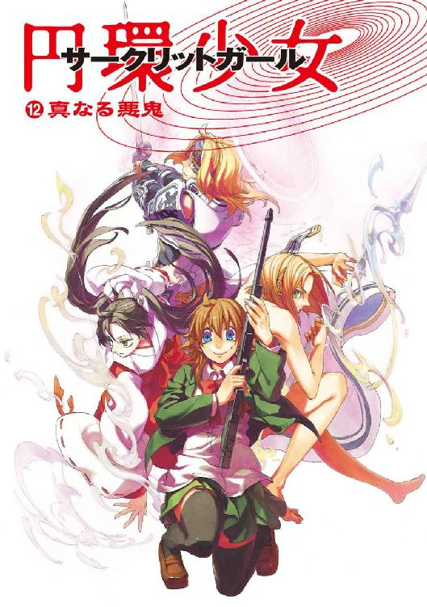
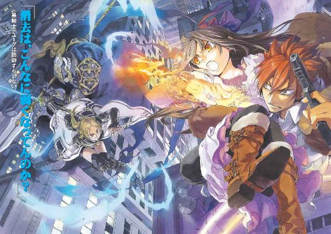
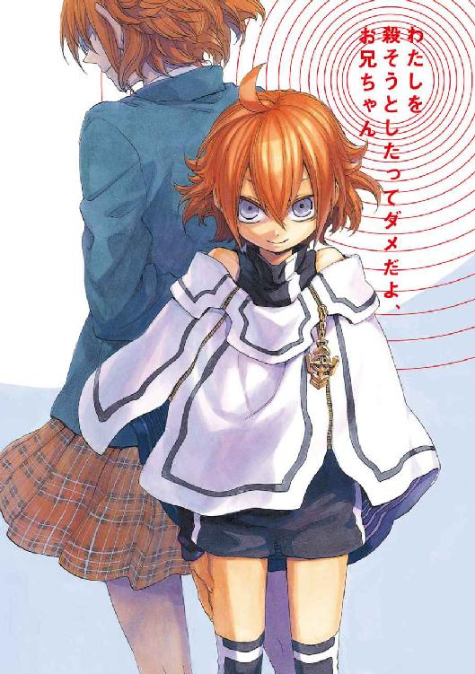
円環少女
⑫真なる悪鬼
長谷敏司

角川スニーカー文庫
本作品の全部または一部を無断で複製、転載、配信、送信したり、ホームページ上に転載することを禁止します。また、本作品の内容を無断で改変、改ざん等を行うことも禁止します。
本作品購入時にご承諾いただいた規約により、有償・無償にかかわらず本作品を第三者に譲渡することはできません。
本作品を示すサムネイルなどのイメージ画像は、再ダウンロード時に予告なく変更される場合があります。
本作品は縦書きでレイアウトされています。
また、ご覧になるリーディングシステムにより、表示の差が認められることがあります。
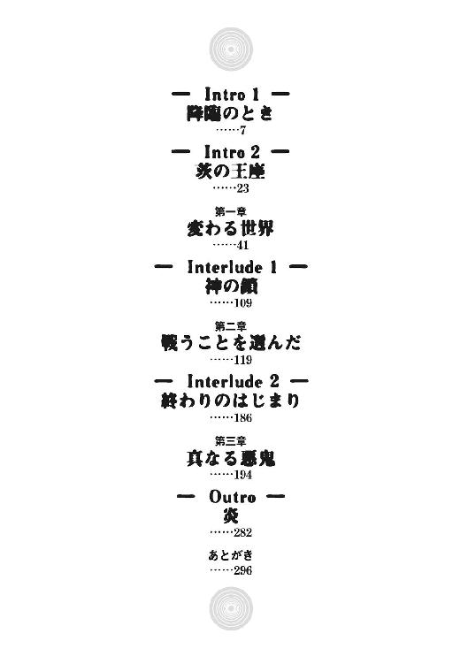
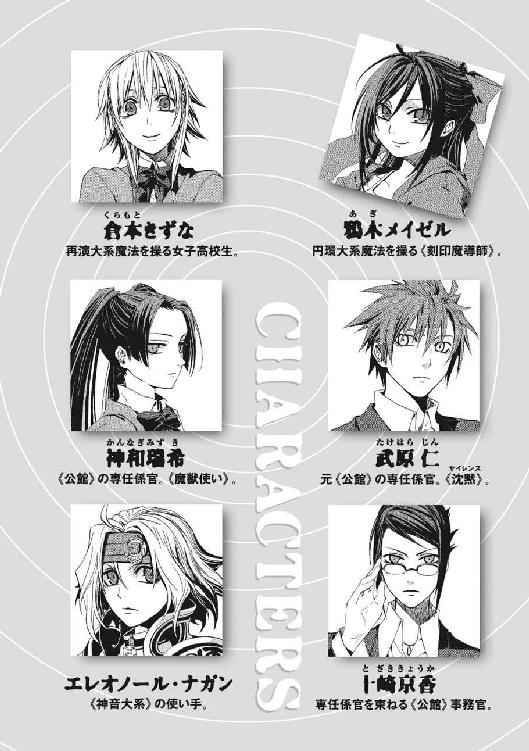
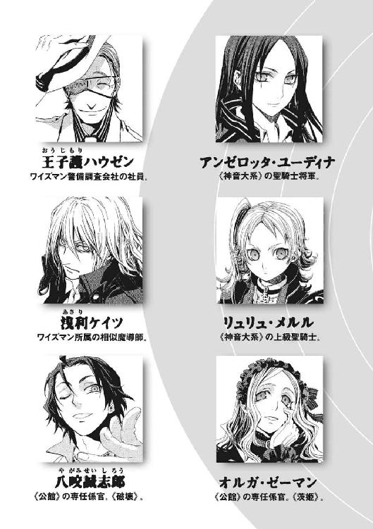
そのとき武原仁は、分厚い雲間から降りる虹色の光を見た。東京から南東に約四百キロメートルの位置にある人工島の甲板は、ひどく風が強い。十一月末の海風の冷たさに震えながら、彼はただ呆然と空を仰いでいた。
多色の光を炎のように噴き上げる〝何か〟が、雲を割って突然出現したのだ。仁は、月が降ってきたかと思った。天空を圧し潰すように巨大なそれが、太陽の光を完全に遮ってしまっていたからだ。虹色の月の陰に入って、世界が薄暗くなった。
仁の右手に、しめった感触と熱が触れた。視線をさげると、黒髪の少女が彼に寄り添っていた。まだおさない女の子に手をぎゅっと握られたのだ。汗ばんだ手のひらの感触が、生身の人間がいる現実なのだと教えてくれた。
その少女、鴉木メイゼルが桜色の唇を呆然と開いていた。
「せんせ、どうしてこの世界で空を飛んでるの？」
雲の高さとの関係で見れば、半球型の底面をした虹色の巨大構造物は、高度一千メートルの位置に浮かんでいた。大きさは半径約一キロメートルほど。重量がどれほどか想像もつかなかった。
「ありえない。この世界じゃ不可能なはずだ」
仁にも理解できなかった。この世界の住民には観測した魔法を消去する力がある。だから、ここまで巨大なものなら、日本列島から見られたことで、空を飛ぶ魔術を破壊され、墜落していなければおかしい。
真昼の空は、十分ほど前までの激しい戦闘でできた、真っ白な雲に覆われていた。異形の月の出現に伴って発生したすさまじい気流が、雲を引きちぎって純白の渦を作り出していた。
この数分の間に、異世界に飛ばされでもしたのかと疑った。でなければ、幻覚を見ているのだと。
そのとき〝月〟の東側の雲が一瞬で蒸発した。閃光が仁たちを強烈に照らした。新しい太陽が点火したかのように、世界は純白の光で塗りつぶされた。
乾燥した数秒が流れた。空の閃光は消え去り、仁とメイゼルは日食で薄暗くなった甲板に取り残された。
痛いほどの光に洗われて、仁の頭の中も真っ白になった。そして、ここには彼らだけがいるわけではないと思い出し、恐怖した。
仁のすぐそばで、黒い装甲で覆われた両腕のない魔女が、甲板に両膝をついていた。彼女の名は《九位》という。円環大系という魔法世界の頂点に立ち、この世界の住民を核戦争で滅ぼそうとした大魔女だ。仁たちは《九位》との死闘に、勝利したばかりだったのだ。
仁は、《九位》が魔法で逃走しないように縛っていた魔法消去を、止めてしまっていた。なのに、鋼の大魔女はこの場に膝をついたままだった。仁はこの異常の理由にこころあたりがあった。そして、得体の知れない寒気におそわれた。
「──操られてるのか」
《九位》は、行動を魔法で封じられているのだ。彼女ほどの魔法使いが支配されることは、普通ならありえない。だが、そんな途方もない操作魔術をあつかえる人間を、仁は知っていた。
「再演魔術......、きずなちゃんか」
全身を女性型の黒い装甲に包んだ《九位》は、声を発しない。大魔女が膝をついた甲板に、巨大な魔法陣が出現していた。円環大系の魔導師は、魔法を使うとき、認識の影として足下に魔法陣を現出させる。これは《九位》が魔法を使わされているということだ。
メイゼルが、悔しげにちいさな拳を握った。
「せんせ、《九位》が維持してるのは防御魔術よ。さっきの爆発の熱と《魔力》から、防御魔術が守ってくれたから、あたしたちは生きのびたの」
あまりの出来事に、大事なことがいくつも吹き飛んでいたかのようだった。
「あの光は、核ミサイルだったのか」
虹色の月が出現する直前、仁たちがいる日本列島近海に突如出現した人工島、アトランチスの甲板は空から降下するミサイルで焼かれる直前だった。さっきの雲を押しのけた光は核爆発だったのだ。メイゼルたち円環大系の魔法使いは、電子を《魔力》として認識でき、電流や磁力の操作を得意とする。何者かが《九位》を操って爆心からの莫大なエネルギーを抑え込んでくれていなければ、全員即死だった。
ここは、この世界と魔法使いたちの未来を占う決戦の地だった。空に半径一キロメートルの半球型の構造物が突然出現するまでは、すくなくともそれこそが危機だった。
改めて自分で魔法消去を発動してみる気にもならなかった。
まだ確かなことはわかっていないのに、ひとつはっきりした予感がある。仁たちの世界は何かが決定的に変わってしまった。
この地球は、異世界からやってくる魔法使いたちに、奇蹟なき《地獄》と呼ばれていた。魔法消去能力を持つ住民が六十億人以上もいるせいで、この世界では魔法使いはおおっぴらに魔法を使うこともできなかったからだ。巨大すぎて膨大な魔法消去を受けているはずのこれが、浮かび続けているのはおかしいのだ。
二十一世紀によみがえった伝説のアトランチスの上甲板で、仁は新しい神話の到来を目にしていた。
奇蹟なき《地獄》と蔑まれた世界はもはや存在しない。魔法は復活したのだ。
ゆっくりと、ゆっくりと、空を押し潰すように虹色の月が降下しはじめた。太陽を覆うそれの影が濃くなり、アトランチスは日没直後のように薄暗くなった。
メイゼルが、魔法転移で逃げるかと視線で尋ねてくる。
人工物らしい月の表面に、オレンジ色の炎が無数に灯っていた。魔法消去能力が魔法を破壊した証である、《魔炎》と呼ばれる光だ。
「ぎりぎりになるまで待とう。空を飛んで距離を離すだけで間に合う。着陸なり着水なりしたら、あれに乗り込む」
ぎょっとした顔になって、ちいさな魔女が、つかまえていた仁の手に爪を立てた。
「せんせ、これだけ戦ってまだやるの？」
出所がまだはっきりしない魔法で支配されてしまった《九位》は、メイゼルの母の仇だった。その大魔女を打ち破って、仁たちは心身ともに疲れ切っていた。だが、予感があったのだ。
「さっきのが俺たちをミサイルから守ってくれたんなら、あれは《幻影城》だ。外側から見るのははじめてだけど、たぶんそうだ」
人工の月は、なおも頭上をじわじわと圧迫しつつあった。だが、アトランチスを押し潰さないよう、微妙に位置をずらして海面に着水するように軌道を変えていた。
仁たちのいるアトランチスの、真っ平らな五キロメートル四方の上甲板の下には、四角錐を、底面を上にしてひっくり返したような形状をした巨大な下部構造がある。そしてそこには、今もアトランチスの数百人の住民たちがいる。攻め込んで来た《九位》の部下たちもだ。
アトランチス居住区の入り口にあたる上甲板中央の建造物から、数人の魔法使いが脱出してきた。そして、不自然な暗さに気づいて頭上を仰ぎ、血相を変えた。
仁は魔法使いたちに警告を叫んだ。
「中の連中に知らせろ！ ここは揺れるぞ!!」
びりびりと空気が震えていた。今ごろ、東京はどうなっているのだろうと思った。
真昼の太陽を覆い隠して、アトランチスの上に濃い影が落ちる。《九位》は動かない。
アトランチス上甲板の中央に建てられた神殿様式の建物から、わらわらと人間があふれてきた。様々な装束に身を包む魔法使いたちだ。
それ自体安定しているはずのアトランチスが、ぐらりと傾いた。波は、荒々しく飛行場のように広大な人工島に打ち寄せた。
揺れに対応できず、《九位》が転倒した。人形が棄てられたように、《九位》は無造作に転がっていた。
「メイゼル。《九位》はどうなってるんだ。動かないぞ、まさか死んでるのか」
そして仁は、傲岸な大魔女から逆襲が来るのではないかと身構えた。ちいさな魔女の顔は蒼白になっていた。
「死んでないけど、もう何も感じてないわ！ なんで......？ 機械の体が、《魔力》の過負荷で感覚器と断線してる」
精神的に乗りこえたとはいえ、グラフェーラ・トリアは少女にとって仇敵で、叔母でもある。
《協会》を操りこの世界を核戦争で破滅させようとした大魔女が、もう動かない。仁は、こんな呆気ない幕切れが《九位》に訪れたとなど考えたくなかった。苦しむことも責任を取ることもなく消え去られてたまるかという思いもある。だが、《九位》をこんなにあっさり仕留めたものへの恐怖はそれにまさった。
「せんせ、魔法で操られたのよ......。円環大系の高位魔導師が身体を機械化するのは、眼鏡や服みたいな《肉体の外のもの》として装甲や機械装備をあつかえると便利だからなの。でも、《肉体の外のもの》だから魔法で攻撃も受けやすいの。たぶん、《九位》は、感覚器と身体の間を、自分の魔法で焼き切らされたんだわ」
仁はその手口の容赦のなさに、ぞっとした。つまり、《九位》が視覚を機械で強化している場合、これは目を望遠鏡に直結しているのと同じで、この望遠鏡を焼けば間接的に視覚を破壊できる。こうして、《九位》は、生身の感覚器と繫げた機械のほうを破壊されたせいで、五感を失って赤ん坊のように甲板に転がっている。
《九位》の身体は、最高の機械化技術を持っていたイリーズ・アリューシャの作品だ。修理が可能なのかすらわからない。再演魔術は、意識は明晰だが感覚がない状態に閉じこめるという手段で《九位》を無力化した。
すべて誰かの手の中だったようで、気持ちが悪かった。再演大系が存在する限り、魔法使いは自分のこころすら信用できないのだと、かつて魔法使い集団《連合》の評議長は言った。そして歴史の渦の中心に、今、最高位の魔導師のひとりである《九位》が倒れている。
再演大系の魔法が今何をしているのか、確かめねばならなかった。仁が知る世界でただひとりの再演魔導師、倉本きずなは《幻影城》にいる。
つまり、頭上の虹色の月の中だ。
「メイゼル、きずなちゃんに会いに行くぞ」
巨大構造物は、結局、約二分後にアトランチスから百メートルほどの海面に着水した。落下速度を制御していたにもかかわらず、その巨大さと重量が生み出す圧力がアトランチスを床面ごと傾けた。膨大な海水が高さで三百メートルほども跳ねあがって波を立てて、人工島を押した。
その膨大な水の一部が、喫水線から百メートル以上の高さにある広大な上甲板に、飛沫とはもはや呼べない分量で降り注ぐ。重量百キログラムを超える機械と装甲の塊である《九位》が、傾斜した水浸しの床を数十メートル滑った。
ぐらぐらと揺れながら、何度も《幻影城》とアトランチスが引き波でお互いを寄せ合って衝突した。そのたびに起こる加速度が、構造内部を翻弄する。
仁とメイゼル、そしてアトランチス内部の魔法使いたちのうち数人が、かろうじて空中に退避していた。
一キロメートル近くも離れた位置の上空から巨大構造物同士の衝突を眺める仁たちの、すぐそばに、白い鎧の魔法騎士が浮遊していた。ともに《九位》と戦い、戦闘後はアトランチス内部の敵を鎮圧していたユリア・シュバールだ。
《九位》が海中に落ちないよう監視しながら、彼らは巨大な人造物が並んで浮かぶ驚異の光景を目にしていた。
《幻影城》の外観は、球形の底部しか見えなかったときの印象を一変させるものだった。虹色の球形は下部の半分に留まり、上部には水晶と白金を切り出して精緻な飾りまであしらった大伽藍が築かれていた。陽光を受けてきらめく尖塔は、隣の尖塔群や鐘楼の姿を表面に映し、豪奢な両開きの門までしつらえられている。
巻き上げた海水が雨となって、天上の都に降り注いでいた。細かい水滴に反射して光が複雑に屈曲し、《幻影城》のそこかしこにちいさな虹が架かっている。
磁力で仁を飛ばせてくれているメイゼルが、物問いたそうに彼を見上げた。仁は、豪奢な《扉》を指さした。そこから内部に入れると見越したのだ。
ためらいなく侵入を選んだ仁たちに、白い騎士装束のユリアが慌てて声をかけた。
「どうするつもりです！」
「《幻影城》に入る。《扉》が出ている」
中にいる倉本きずなが、仁たちを呼んでいるように思えたのだ。《幻影城》は本来、この世界と異世界の間にある何もない空間に繫留されている。それがこの世界に出現したこと自体に、重大な意味があるはずだった。
仁たちの前で、《扉》はひとりでに開いた。
ユリアは倉本きずなとの接触を避けて、《幻影城》に近づかなかった。再演魔導師はそれほど忌み嫌われている。先の世界大戦を煽ったことでヨーロッパの魔法使いたちから恨みを買って滅ぼされて、きずなが現れるまでは遺失したと考えられていたのだ。
近づいてみると、《幻影城》には窓がひとつもなかった。壁面の質感は一様ではなく、透明度や色合いを変化させて繊細なグラデーションを作っている。空気にすっと差し込まれるように、尖塔群もその鋭い先端へ向かうにつれて素材の透明度を高くしている。
仁は、メイゼルに入り口まで運んでもらっている間、この壮麗な構造物を観察していた。居住施設としては《扉》がひとつしかない張りぼてのような空虚さが、《幻影城》に似つかわしい気がした。ここは再演大系の魔法を十全に働かせるための舞台装置だ。再演大系は、自分の体の仕草を魔法発動のための索引として、〝過去〟の人間を操るという奇蹟を現出する。言い換えれば再演大系という魔法は、虚偽を演じて、〝過去〟の真実とすり替えるのだ。
「せんせ、本当におしばいの劇場みたいね」
メイゼルが、目の前の魔法遺物の過剰なハッタリ感にうれしくなった様子で、緊張しつつも笑っていた。子どもは残酷なくらい倫理から自由だ。
高さが五十メートル、幅が十メートルほどもある巨大な《扉》が開いた。仁たちはその内側に踏み込んだ。
突然足下に床ができた。風景が一変した。
そこは昼間のような一様に明るい空間で、どこまでも真っ平らな舞台が広がっていた。舞台自体も用途のわからない舞台装置も、透明な素材で作られている。外見から推し測るより内部空間は広大で、地平線までの距離はおそらく十キロや二十キロではきかない。ひたすら殺風景な、仁たちにはなじみ深い《幻影城》の風景だ。
通ってきたばかりの《扉》は、もう消えていた。
仁たちは一昨日、《九位》との決戦を前に、万が一を考えてきずなたちと別れた。刻印魔導師集団、《鬼火衆》の生き残りと、元聖騎士エレオノール・ナガン、高位魔導師である《無双剣》セラ・バラードと、普通の護衛になら十分すぎる戦力を残してきていた。
なのに、《幻影城》内部の空間には、人の気配がなかった。誰も見あたらなかった。
「きずなちゃん！ みんな、いるか？」
仁は、周囲を見回した。何度かここにやってきたが、これほどここが人間を拒絶して見えたのははじめてだった。
魔法使いであるメイゼルのほうが、それに気づくのは早かった。仁のジャケットを、ちいさな魔女が軽く引っ張った。気丈に振る舞っても、少女は海風でほつれたリボンを直すことも忘れていた。
「あそこ、人がいる」
二キロメートルほども離れたところに人間が斃れていた。
目をこらしても顔どころか着ている服すらもまともに判別できないのに、それが誰だかわかった。
倉本きずなだ。床には赤黒い液体が広がっている。遠目に見ても、人間ひとりが流した血なら、まず致死量だ。
「飛んでくれ！ まだ助かるはずだ」
「生命の円環はもう回ってないわ。......でも、あんなことって......」
心臓が急に鼓動を速くした。胸が締め付けられるように痛んだ。仁の奥歯が、意識しないうちに軋むほど嚙みしめられていた。円環魔導師は、回転や振動のような周期運動するものに《魔力》を見出す。生命が循環していないとメイゼルが言うなら、きずなは死んでいる。
メイゼルの魔法が、仁たちを一瞬でぽつんと打ち捨てられた身体のもとへ運んだ。
〝それ〟を見下ろして、仁たちは絶句した。
栗色の髪を肩のあたりまでのばした倉本きずなは、すこし垂れ気味のやさしい目をした女子高生だ。出会ってから何ヶ月も同じ食卓を囲んだ彼女が、夜の闇の色をした濃紺の瞳を見開いていた。蒼白な顔の、目の周りには涙が乾いた跡があった。土気色になった唇の端には、こぼれた血の跡が生々しい。
高校の制服を着ていた上半身は、血の付いた手でブラウスが引き裂かれて、白い肌がまるだしになっていた。ブラジャーの留め具が外れて、豊かな乳房がこぼれていた。だが、血まみれの胸には劣情を感じさせる要素はなかった。
倉本きずなの肉体は、自分の右手を、みずからの胸の中心に突き入れていたのだ。両乳房の間の皮膚と脂肪と肉を突き破って、胸郭の奥に、手が手首までめりこんでいる。彼女の血にまみれた白い手首あたりに、すさまじい力でへし折った肋骨が白い破片を覗かせていた。
きっときずな自身の心臓をわしづかみにしている右手だけが動いている。魔法で操って、自分自身の死んだ体を心臓マッサージさせているのだ。
「せんせ、魔法で生命の円環をむりやり〝回す〟わ！ 死んでても、血がめぐってたこの体なら、もう一度回るかもしれない」
きずなの体は、胸の傷のほかもぼろぼろだ。右足の太ももにも、動脈を貫通する、普通なら致命傷になる銃創があった。左腕は二カ所複雑骨折してあり得ない方向に曲がり、左肋骨はすべて折れていた。体中にちいさな傷があった。
「ナニこれって感じだわ。......死んだ人間と、生きている人間は、どんな魔法でもはっきりちがうのよ。一度死んだ魔法使いが、自力でよみがえろうとするなんて、お話でも聞いたことないわ。あんた、ここまでやれる化け物なのよ。聞こえてる？ あんた、ほとんど人間やめてるんだから、このまま死んだままなはずないでしょ！」
円環魔導師の認識の影である魔法陣が、少女たちを取り囲んで現れる。メイゼルが、恐怖に顔を歪めながら、きずなの額の上に手を置いている。
きずなの体が、自ら服を引き裂いて、失血で止まった心臓を素手でマッサージしている。それは間違いなく、〝未来〟からの再演魔術で操られた結果だ。
絶望するのも悲しむのも、生き返る可能性がなくなってからだと思った。
彼女が使う再演魔術は、術者よりも〝過去〟にいる人間の身体を操る。何者かが、あるいは彼女自身が、きずなに「生きろ」と「生きたい」と想いを叩きつけているようだ。
仁の目が熱くなった。
「......生きろ、......生きろ、きずなちゃん」
この生死の境であがくオブジェは、倉本きずなという少女を奇妙なほどよく表していた。彼女は、過去に干渉する魔法に翻弄され続けているが、ただ被害者として片付けるにはたくましすぎる。今の彼女は、魔法と、人間の生存へ向かう力が渾然一体となった、ただ業の深い〝ひとかたまり〟だ。
きずなの体は、口から血の筋を垂らしながら、それでも右手で心臓を押して無理やり血液を送らせている。
そして、表情のなかった顔が突然苦悶に歪んだ。瀕死の弱々しい息が、血の気がない唇から漏れる。
「せんせ、きずなが！」
メイゼルの声は、歓声か悲鳴かわからなかった。ちいさな魔女が力強くうなずくのを確かめて、ほっと安堵する。
仁はそのとき気づいた。
《幻影城》の透明な床に、人間が封じ込められていた。ぱっと目についたのは、傷だらけの男たちだ。彼が亡き師から預かった《鬼火衆》の刻印魔導師たちが、水中に沈み込むように床の透明な水晶に埋め込まれていたのだ。
「全員息はあるのか」とメイゼルに尋ねようとして、少女の表情が歓喜にゆるんでいるのに気づいた。うれし泣きしそうな彼女の、華奢な肩に手を置いた。
いくらか離れた床下に、白金色の髪をした全裸の魔法使い、《無双剣》セラ・バラードが閉じ込められていた。神聖騎士団を破門された元騎士エレオノール・ナガンは、剣を抱くようにして水晶に沈んでいた。魔導師公館の専任係官である《魔獣使い》神和瑞希は、ほとんど胴体を両断されたに近い状態で封じられていた。
だが、《鬼火衆》は顔ぶれが二人欠けていた。武原家に子どもの姿で戻ってきた、妹の舞花もいない。
《幻影城》は、仁たちがアトランチスで戦っている間に襲撃を受けたのだ。
だが、そうなると逆にわからなかった。ここを襲撃するとしたらまず神聖騎士団だが、彼らなら最大の標的であるきずなに復活の可能性を残すのは奇妙だ。
手がかりでもないかと床を調べているとき、仁はそれを発見したのだ。
足下の舞台の、瑞希たちが封じられた層よりずっと深い水晶の遥か底に、遠近感を狂わせるように巨大なものがいた。体高三十メートルもあろうかという、長い体毛に覆われた巨獣だ。仁の脳裏に、はじめて《幻影城》にやってきたときのことがよみがえった。この巨大な角と太い二本の腕を持った〝怪物〟は、あのバベル再演のときも《幻影城》の深部から仁たちをにらんでいた。
そう、今ははっきりと視線を感じた。《幻影城》が怒りをあらわにするように震える。
目覚めの時を迎えたように、水晶宮の〝怪物〟は目を開いていたのだ。この魔獣は《幻影城》を統べる意志だ。そして、侵入者への深い恨みか、床も壁もうなりをあげていた。
倉本きずなには、ただ暗さと重さしか感覚できなかった。何も見えず何も聞こえず、不快でしかたないのに、待ち続けても身体がまったく動かない。大気が重く、息をしようとしても空気が胸に入ってこなかった。
彼女は死んだのだと思った。なのに、最後の何かが引っかかって、消え去ってしまうこともできなかった。
きずなはわずか十七年の人生で、様々なものを失った。嫌になるほど騙され尽くした。頭が悪いから、子どもの姿をした武原舞花にまで騙された。
彼女たちは《幻影城》に隠れているところを千人以上の聖騎士に襲われた。そして、きずなは舞花に助けを求めて、力を掠め取られた。きずなのせいで神聖騎士団の大願は成就し、この世界に《神》が降臨した。舞花は六年前に殉職した後、〝未来〟の再演魔導師たちの協力者となって自分の体を再生して、裏切りの機会をずっと待っていたのだ。
その戦いで、《鬼火衆》の魔法使いをふたりも犠牲にしてしまった。友だちの神和瑞希は瀕死の重傷だ。
死んでしまったほうがよい気がした。もう本当は死んでいるくらいぼろぼろになっていたはずだった。なのに、激痛とすさまじい圧迫感にさいなまれて、息は止まっているのに苦しさだけが消えない。
後悔が厳しく心臓を締め付けた。この悲惨な〝今〟にいたくなかった。すこし前の彼女なら、それすら可能だったかもしれない。同じ自然秩序に従う魔法使いがただひとりである状態──《神人》である権能を彼女は失った。なのに、絶大な力をまだ振るえる実感がある。彼女の適性は弱まったが、再演大系という魔法自体がそれほどの力を手に入れたのだ。
──この世界の自然法則自体が変わってしまったことを、はっきりと感じていた。
この世界に降臨した新しい《神》は、再演大系の《神》だ。
魔法使いは、魔法が存在する異世界からこの世界へやってきた来訪者だ。だが、人間を操ることに特化した再演大系は、そうではない。この世界のみに存在する、カオティックファクターと呼ばれる魔法に属する。
血を流しすぎた身体は、泣きたくても、涙として水分を使わせてくれなかった。
──きずなが自分自身に負けたから、この世界の自然法則は切り替わった。ここは、人間を救う自然秩序のもと、〝未来〟からの干渉であやまちを矯正される、やさしい世界になる。
春まではただの高校生だったきずなにとって、世界の変容の引き金を引いた責任など、どう取れるかわからない。どんな顔をして、仁に会えばよいのだろうと思った。
《神》とは、自然秩序が崩れている魔法世界の安定を保障するものだから、安全装置たるそれを停止させる変化を許さない。これから降臨前の状態に戻してけじめをつけようにも、まず《神》を破壊しなければならないのだ。
〈──《最後の魔導師》よ〉
脳裏にことばが浮かんだ。誰かが魔法でメッセージを送ってきたのだ。
〝過去〟への時間の流れが、獣道が伸びる原野のような状態から、舗装されたように輪郭をはっきりさせていた。たぶん身体が死んで、感覚が視覚や聴覚といった感覚器からの雑音なしに、純粋な魔法的感覚のみに絞られたのだ。
再演大系の魔法使いは、極めれば世界を一冊の《本》として知覚する。そして仕草を通して世界から奇蹟を引き出すため、人間そのものすら理論的には魔法と結ばれたひとつの《文字》として扱える。その理論的極限の領域では、魔法使いは世界そのものを《人間という文字》で書かれた《本》として把握できる。その完全に世界と繫がる像は、《神》が見る世界のビジョンに近い。きずなははっきりと、すぐそばにメッセージの発生源を感じた。
人間を操る魔法である再演大系では、自分でできないことを成し遂げるため他人を操る。きずなにこのメッセージを伝えている〝誰か〟も、だから魔法的な再生機器に改造した人間を《幻影城》の水晶の床の底に埋めておいた。
〈──《最後の魔導師》よ。わたしの元においでなさい〉
目も耳も働いていないのに、苦痛に満ちた暗闇の中、世界という《本》の遥か〝過去〟にいた、ひとりの魔法使いの存在を感じる。
再演大系の魔法は、〝過去〟を知り〝過去〟を修正するが、自分より〝未来〟に対しては無力だ。この基本法則自体を乗りこえている以上、相手は超絶の技倆の持ち主だ。〝過去〟の唯一魔導師、かつてのきずなと同じ《神人》でしかあり得ない。
──このメッセージは、〝過去〟から〝未来〟へ放たれた執念と呪いの矢だ。
気味が悪いのに、人の気配を感じると、長すぎる断末魔の中でただ待つのが恐ろしくなった。絶え間ない苦痛と不快感を味わい続けるくらいなら、消え去るまで他人の人生を覗いていてもよいだろうと思えた。自分の情けない人生と向き合いながら死ぬのが恐かったのだ。
だからきずなは、意識が〝過去〟へと押し流されるにまかせた。
どんなものにだって最初はある。
きずなは、世界という《本》を〝過去〟へとたどってゆく。再演大系は、大きな変化を起こすとき、〝過去〟を修正した新しい時間の流れを発生させる。その分岐点もふくめて、《本》のページを速くめくりすぎると内容が何も読めないように、高速ですっとばしてゆく歴史に何の関心も覚えなかった。
墜落しかけた人間に、落下中の風景が無意味なように、二万年以上の時間はひとまたぎだった。この世界が《地獄》と呼ばれる前、魔法世界の最初の《放浪者》によって発見されるより前にいた、〝彼女〟へと、きずなの感覚は落下した。
それはまさに感覚の落下だった。肉体が死んで断線していた五感を、きずなは一気に取り戻したのだ。
きずなの感覚は、腰ほどまで伸びた草原に立ち、その先に深い森をとらえていた。風と、強い植物の匂いを感じた。そして、きずなが五感を重ねた〝彼女〟もまた、世界を一冊の《本》としてとらえていた。
《幻影城》の底にメッセージを仕込んだ〝彼女〟は、再演大系の魔法使いだった。そして、魔法の感覚が、その時期の《世界》にも魔法消去があり、カオティックファクターの魔法使いたちがいることを教えた。〝彼女〟こそが、再演大系の無数の歴史の大河の源流だ。つまり、最初に現れた再演魔導師だということで、最初である以上は〝唯一〟だ。
きずなは、最初の再演魔導師──《最初の神人》の感覚を魔法で借りて、まだ何もない一面の原野を見た。
二万年以上前の〝彼女〟が、きずなに見せつけるように、魔法で〝彼女〟自身の過去を掘り返した。はじめは、再演大系はただ扱いにくい癖が強いだけの魔法だったこと。だから、魔法に目覚めたころ、〝彼女〟の魔法はまるで下手なお芝居のようだったこと。
だが、すぐにめきめきと〝彼女〟は腕を上げていったこと。再演大系が〝過去〟へ向けて使う魔法であるせいだ。つまり、〝彼女〟の子孫である歴代の再演魔導師たちは、〝過去〟を修正しながら、──きずなも自分が仁と出会わなかったことにしようとしたように──幾多の新しい分岐となる時間軸を作った。この時間構造では、歴史の気にいらない部分を修正するだけで、〝過去〟のすべてを作り直すわけではない。だから、あらゆる分岐した時間軸のあらゆる歴史時点から、さかのぼりきると同じ《最初の神人》に到達するのだ。〝彼女〟は、〝過去〟に干渉してきた幾多の名手たちを迎え入れて、いくらでも高度な魔法の手ほどきを受けられたのだ。
原野に立つ〝彼女〟がはっきりと言った。
「ようやく来てくれたのね。あなたが、《最後の魔法使い》なんでしょう？」
きずなは、覗き見を咎められたようで恥ずかしかった。だが、太古の再演魔導師に感覚を重ねたきずなは、鈴の鳴るような〝彼女〟の声を聞いた。
「恥ずかしがらないで。もう何千人もの魔法使いが、〝未来〟からわたしに接触してるのだから。みんなが《自分のいる時間の流れ》に有利になるようにわたしを誘導しようとして、いろんなことを教えてくれたから」
再演魔術では、操れるのは肉体だけで、感情や意志を直接操作はできない。だから、〝彼女〟は操られるたび苛立ち自尊心に傷を負って、痛みをなだめてきたはずだ。歴史のはじまりからこの魔法は、便利なようで不便だったのだなと、ぼんやりきずなは思った。
「ここから〝未来〟へ流れてゆく時間の流れは、本当にたくさんあるんでしょう。だから、わたしも、再演秩序の《神》が現れたら、そのとき《幻影城》にいる〝未来〟の再演魔導師をわたしに会わせる仕掛けを作ったのだけど、〝あなた〟がそうなのね」
操られ通しの人生だったのねと、〝彼女〟に見透かされたようだった。
きずなには、それを受け容れられる余裕などなかった。そんなふうに〝未来〟から誰とも知らない人間に魔法で操られ続けるなんて、最悪だと思った。
だが、きずなが思う最悪の人生を送った〝彼女〟は、緑の原野を見ていた。手つかずの風景の中、途方もなく巨大な水晶を削りだして作ったような壮麗な建造物が、森の向こうに広がっていた。
草原の空を目指して伸びる草むらの一カ所が、ざわめいた。その音の源が、移動していた。〝彼女〟がここにいた本当の理由を、きずなは知った。向こうにある驚異の建造物など目に入っていない様子で、ちいさな男の子が、〝彼女〟のそばを裸で走り回っていた。
〝彼女〟は、嚙みしめるように息をついた。
「この子が、再演大系の魔法を継がないでくれて、本当によかった」
どこからともなく吹く冷たい風を、きずなも感じたような気がした。
景色を幻想じみたものにしている水晶の城が、《幻影城》なのだと感覚できた。原始的な世界の中で、これだけが周囲から隔絶していた。
きずなは、疲れ切っていた。〝彼女〟も同じだった。
〝彼女〟は、じっと自分の手を見ていた。
きずなは、こっそり《〝彼女〟という文字》の歴史を、さらにさかのぼった。この原野の風景の五年ほど前、〝彼女〟は、我が手で、おのが娘の背を地面に押しつけて、細い首を絞めていた。
娘を扼殺する〝彼女〟に、はっきりと再演魔術による操作の跡があった。殺されまいとして必死で抵抗するおさない娘も、操られていた。それはつまり、〝彼女〟が《神人》であったほうが都合のよい未来と、娘のほうが《神人》になったほうがよい未来、ふたつの時間軸から、歴史の代理戦争をさせられたのだ。
再演大系の自然秩序では、〝未来〟からの干渉者が何を考えているかなどわからない。ただ、きずなの沈黙で〝彼女〟は盗み見を見抜いた。
「操られたとはいえ、自分の娘を殺して、平気な顔で新しい子どもの前では母親面ね。ひどい母親だと思う？」
きずなには何も言えなくなった。再演魔術の歴史操作の果てから、きずながこの〝彼女〟に到達できること自体が、ひとつの罪だった。
そして自分も死ぬまで、未来から操られる人形だ。呪いの鎖に縛られながら生きることに、うんざりしていたのだ。だから、悪いと思いながら、気持ちを伝えるためにきずなが〝彼女〟の唇を操った。
「もう子どもなんて産みたくない。わたしも、いろんな未来から別々に再演干渉を受けるんだね」
再演魔術師たちの歴史操作の最終目的は、《神》を降臨させることだった。そしてこれからは、新しい再演世界を守るために、彼女たちは操られ続けるのだ。きずなは再演の《神》が現れたとき、すべてが狙ったように悪い方向に転がったことを思い返す。娘を殺した〝最初の神人〟の疲れが、きずなの未来を暗示しているようだった。
神人遺物である《幻影城》を築いたのも〝彼女〟だ。それは、材料である《賢者の石》──再演魔導師が未来を破壊した証──が数千個もこの時代で集められたということだ。それほど、この始原の時代は〝未来〟から好き勝手にいじられ続けた。
きずなは、いつも最後には自分のことだけを身勝手に考えてしまう。きずなに操られて声を出さされた〝彼女〟が、「けれど」と、話を引き継ぐ。
「けれど、──愛さずにはいられない」
愛おしさと諦めと怒りが吹き荒れる、ことばを嚙みしめるような沈黙があった。
〝彼女〟は草むらを歩きだす。虫を追いかけて裸で走っていた息子のほうへ。その向こうには、《幻影城》がある。〝彼女〟が、《賢者の石》が時間の栞であることを利用して、再演干渉をやわらげるために作った避難所だ。
きずなは、その光景をじっと《世界という本》を通じて眺めていた。そうして他人の人生に逃避しながら、彼女自身の死はいつ訪れるのだろうと考えた。瀕死だった身体はもうとっくに力尽きているはずだった。
現実に戻ることが恐かった。それでもこの覗き見自体も不安になってきていた。何の意図もなく自分が〝過去〟へ導かれたとは思えない。
〝彼女〟が近づいてくるのに気づいて、ヘビイチゴを摘んでつまみ食いしていた男の子が、こちらを向いた。その瞬間、視界にオレンジ色の《魔炎》が散った。〝彼女〟の無邪気な息子は魔法消去能力者だった。
きずなは再演魔術を破棄されたことで、〝過去〟から弾き出されたのだ。魔法消去の影響で、世界という《本》には、《文字》を観測できない虫食いが広がっていた。きずなは、追い出された時点よりすこし経った時点を監視し直した。
〝彼女〟が魔法消去に弾き飛ばされるきずなに、「わたしは、あそこを攻められて、死ぬのでしょう」とつぶやいたからだ。どうせきずなも死ぬのだから、ひとりで消え去るよりはと浅ましくも思ったのだ。
視覚をきずなが接続したとき、そこは見慣れた《幻影城》内部の風景だった。さっきの魔法消去から、〝彼女〟の体験した時間は二十分進んでいた。
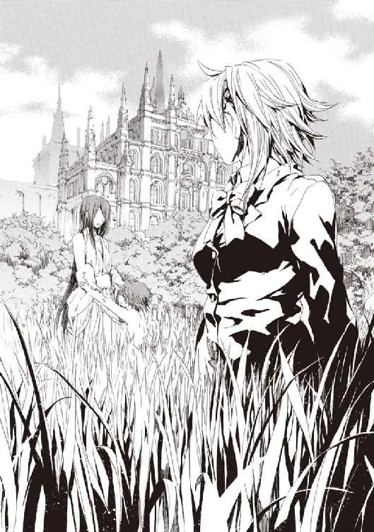
あの男の子は、ここにはいなかった。入り口自体が魔法でできているため、魔法消去者は《幻影城》に入れない。外観に比べて殺風景な水晶の舞台を、〝彼女〟は草を編んだサンダルで歩いていた。
きずなは、なぜ子どもといっしょにいてやらないのだろうと思った。それに、きずなもこれまで救われてきたように、再演魔導師が未来からの干渉を逃れる最も確実な手段は、魔法消去者のそばにいることだ。
「《最後の魔導師》よ。あなたも〝未来〟の再演魔導師たちに、操られているのでしょう。知らないうちに操作されて、それに自分の気持ちが引きずられているようで気持ち悪かったことはなかった？」
〝彼女〟は、子どもがそばにいたときは表に出さなかった怒りを露わに、吐き捨てた。自分の娘を絞め殺した両手を見下ろすのが、癖になっていた。
「わたしを愛してくれるあの人の気持ちは、未来から操られて、子どもを産ませるお膳立てを整えたものではないの？ これだけ数え切れないくらい利用されてきて、わたしが誰かを愛することが、今さら誰かにとって都合がよかったからでないはずないでしょう」
〝彼女〟はそれでも愛さずにいられない。だからこそ、同じ再演魔術の鎖にからめとられた《最後の魔導師》に、興味を抱いたのかもしれなかった。
きずなの脳裏に男性の顔がぱっと浮かんだ。誰かに操られて彼を好きになったのかと疑うと、胸にずしりと重いものがのしかかった。
だが、自分自身のことを心配している余裕は、幸か不幸かきずなにはなかった。《幻影城》の、〝彼女〟のすぐそばに、突然巨大な《扉》が出現したからだ。
それが音高く押し開けられた。
虚空に突然立った魔法の《扉》の向こう側から、やってきたのはひとりの男性だった。
その顔を見て、〝彼女〟が全身を一瞬だけ強張らせた。
きずなは、きっと彼が表の子どもの父親なのだろうと思った。
「《鍵》を使うのはやめてって、何度も言ったでしょう。それは、知らないうちに操られて作らされてた《城の裏口》なの。それがあるって思い知らされるたびに嫌な気分になる」
とげとげしいことばで責めながら、身体は親しい距離感で、彼に近づいていっていた。
彼が、「けれど子どもが」とか、口ごもりながら〝彼女〟に弁明する。その手の中にあるのは、きずなにもなじみ深い《幻影城の鍵》だった。持ち主を自由に《幻影城》へ入らしめる《鍵》の製造を、《最初の神人》が意図していなかった事実が、ひどく不安だった。
〝彼女〟が、抱き合うことが自然な関係の気安さで彼にすがる。
衝撃が背骨まで到達して、それが苦痛だったのだと理解した。きずなは胸に走った激痛に身をよじり、そしてそれが〝彼女〟の感覚に巻き込まれただけだと気づいた。
《鍵》の尖った先端が、〝彼女〟の胸に深々と突き刺さっていた。
あまりにも呆気なく刺しこまれた、一目でわかる致命傷だった。息をするたびに血を吐く苦悶を、きずなもいっしょに体験した。
〝彼女〟が、急速に薄れてゆく意識をつなぎ止めるように、怒りをたたきつけた。
「わたしを殺したあなたは、わたしが憎かったの？」
信じられないという顔で、手を血まみれにした夫が首を横に振った。そうでしょうねと、〝彼女〟が、彼の胸に身を預けるようにもたれかかった。
「ずっとわかっていた。〝あいつら〟、わたしを殺すときは、あなたを利用するって......」
〝彼女〟の指が、本来しぐさが必要な再演魔術を指だけで代用するため、複雑な印を組む。
「ずっと考えていたの。......わたしといっしょに、来てくれるでしょう、あなた」
《幻影城》の舞台が、突然、水になったように《最初の神人》夫婦を沈めた。水晶の床に取り込まれそうになった夫が、脱出しようともがいた。夫が、身体の体積を急速にふくれあがらせながら、怪物のように姿を変える。その魔法はカオティックファクター、《魔獣使い》の、おそろしく高度なかたちだ。
だが、〝彼女〟が再演魔術で、容赦なく彼自身の魔法を操って逆用する。〝彼女〟の魔法が、原初の《魔獣使い》の肉体を魔法機械に作り替えて《幻影城》に組み込んでゆく。
〝彼女〟には、もはやことばを発する余力はない。ただ、みずからを太い腕に抱いた夫の、最後の絶叫を子守歌に目を閉じた。
──そして、〝彼女〟の感覚は途切れた。再演観測可能な《人間という文字》は変化を止めた。
きずなは、出会ったばかりの人間の死をどう判断してよいかもわからなかった。ただ、《最初の神人》はその身の終焉を見せたくて、最後の力で彼女を招くメッセージを送ったのだと思った。きずなには、なぜ自分が「最後の魔導師」なのか今もわからない。
〝彼女〟が自分の夫を魔法機械に改造して《幻影城》に封じてまで、きずなに何を伝えたかったのかも、頭が悪くて理解できなかった。
ただ、ひどく悲しかった。奇蹟の力で人間をどんなに操っても到達できないしあわせが、彼女には最初から手に入れられないものに思えた。
昨日まで否定していた、悪い想像が事実なようだ。人生すべてが操られていると考えるのは現実的ではないのに、きずなは、自分が閲覧されたり書き換えられたりするための記号である気がする。彼女は、操り糸を疑わずに済むしあわせなど一生手にできない。
だから、もうすこし時間が欲しかった。こんな救われない気持ちで死ぬのはあんまりだったからだ。もしも自分がいなくなったら、舞花が《神人》になってすべてがうまくいくようで、悔しかったのだ。
これが最後なら、噓でもいいから、これまで生きていてよかったと思わせて欲しかった。
──きずなは、まだ闇の中にいた。
遥か過去の《最初の神人》の死を看取っても、きずなの命はまだ尽きていなかった。それどころか、凍ったように冷え切っていた身体が、ほんのわずか動かせた。
彼女はいつの間にか、息を吹き返していた。
きずなは、簡略化した再演動作である印を右手の指で組む。不快感に耐えながら麻痺しているぎこちない動きを繫ぎ、魔法を構成し終えると、《幻影城》が鳴動した。
舞台の床下に封じられていた〝怪物〟が咆哮している。きずなの魔法に《幻影城》が反応したのだ。再演魔術で見た歴史通りなら、この魔獣は、《最初の神人》の夫が、最後の魔法で魔法機械に改造されたなれの果てだ。
二万年以上の時を経て、操られて妻を殺した彼はまだ生きていた。そして、生きている魔法使いになら、きずなの魔法で干渉できる。
彼女は〝怪物〟の感覚に相乗りしていた。彼は、妻であった美しい黒髪の女性をその胸に抱いていた。華やかな顔つきをした吊り目の〝彼女〟の顔を、きずなは知っていた。《最初の神人》は、彼女を魔法使いたちの戦いに引きずり込んだ魔女、《染血公主》ジェルヴェーヌ・ロッソにそっくりだった。
〝彼女〟の、琥珀色の瞳は瞳孔が開ききっていた。死体の目だ。簡素なデザインをした服は、控えめな乳房あたりに血が染み込んで黒ずんでいる。
美しい死体の口元が動いた。声はなくとも、二万年前の魔法使いが日本語を話すように唇を動かしたから、わかった。
〈──《最後の魔法使い》〉
続くことばは、未来から好き勝手に操られ続けた〝彼女〟から、手渡されたバトンなのかもしれなかった。
〈──あなたは戦うことを選んだの？〉
その問いは、〝彼女〟からの、自分の死体を再生機にした意趣返しかもしれなかった。〝彼女〟の戦いは、死によってすでに終わった。大きな角を持つ〝怪物〟は、〝彼女〟を抱いたまま人間をやめた。それは再演魔導師と、それに関わる人間の末路であるかのようだった。
きずなはまだ生きている。だから、彼女自身の現実を、〝未来〟からの魔法干渉を受けながら築いてゆかねばならない。再演魔術による改変を受けても、失敗しても、やり直すしかない。
きずなの大切なものは、まだすべて奪われたわけではない。
眼前に光があった。その刺激が痛くて、目をつぶろうとした。まぶたが痺れて動かなかった。彼女の体は一度は死んでいたのだ。
刺激が強すぎるせいで真っ白にしか映らなかった景色が、神経が鈍感になるにつれて色とかたちを取り戻してゆく。
きずなの前に、武原仁がいた。彼女の義理の父を殺した仇で、命を救ってくれた恩人で、家族のように過ごした人で、いっしょに逃げてはくれなかった男性だ。きずなにとって、たぶん誰よりも愛おしく憎い男性が、彼女を覗き込んでいた。
「だいじょうぶか、きずなちゃん」
胸に激痛が走った。まだ《幻影城》の舞台に倒れたままだった。強張りきった右手が乾いた血にまみれていた。きずなは、素手で自分の心臓をマッサージして生を繫いだのだ。
身に覚えがない以上、こんなことまで〝未来〟から操られてやったのだ。そこまでして生かされたことが気持ち悪かった。
なのに死にたくはない。
どうしようもなく、泣くしかなかった。
結局は、きずなはどうしようもない現実に戻ってくるしかない。弱さを利用されて《神》を降臨させてしまった、今は用済みになって殺されようとしている世界に、彼女はいる。
だから、きずなは、生まれたばかりの赤ん坊のように、ただ泣きわめいた。
〝彼女〟が何を想って夫を水晶の床に引きずり込んだのか、きずなにはわからない。けれどきずなは、自分が死ぬとき彼を道連れにするだろうかと考えていた。もしも仁が彼女を好きだと言ってくれていたら、その未来ではいつか彼を縛って、いっしょに破滅しようとしただろうか。
生きることは呪いだ。
それでも、人を愛さずにはいられない。
寒川紀子は、その日、奇蹟を見た。
小学校の六年一組の教室から外に目を向け、眼鏡を外してまぶたの上から眼球をマッサージした。
白く光る人間のようなものが、雲間から降りてきていたのだ。
核ミサイルが東京に命中すると、校内放送で聞いたばかりだったから、混乱して幻覚を見たのだと思った。
教壇にはまだ担任の祖師堂しづか先生がいた。明日の文化祭でやる劇の準備のためジャージ姿だった。
「寒川さん、風邪？ 汗びっしょりだけど」
「先生、窓の外にＵＦＯが」
「ＵＦＯなんか見えないけど」
「人間みたいなＵＦＯ、っていうか宇宙人です！ 光る宇宙人なう」
言ってみて後悔した。クラスメイトがほとんどみんな帰ってしまった教室は、ひどくがらんとしていた。
「そりゃ核戦争とか先生も信じてないけど、ＮＨＫでもやってたから、寒川さんも早く帰ったほうがいいんじゃない」
文化祭前日で、元々、授業は半日だったから、家に帰るのが正解だった。友だちの鴉木メイゼルは結局まだ学校へ来ていない。副担任の武原先生もだ。アトランチスに小学生と教師で駆け落ち亡命したというニュースは、本当だったようだった。
日本中に、魔法とまったく関係ない衝撃をもって迎えられたメイゼル亡命会見から、小学校には報道陣が押しかけている。対応した先生たちも疲れている様子だった。
「こんなじゃ、明日の文化祭もどうだかわからないしね」
黒板に祖師堂先生がもたれかかった。会見以来、先生は地味に落ち込んでいる。
空飛ぶ人間が幻ではなかったのだと、紀子は家に帰って知った。
核ミサイルが世界中で本当に何十発も発射されていて、〝魔法使い〟がそれから人間を守ったのだとニュースに映っていたのだ。
「ちょっと、お母さん、本当にこれホント？」
夕食前、すこしお行儀悪く、紀子は居間のソファにぽてんと転がった。バカバカしくて、まっすぐ座って見ていられなかったのだ。
テレビ画面には、核ミサイルが日本目指して飛んでいたことを示す写真が表示されていた。そして続けて、画面には、その着弾予定時刻の東京の空が映っていた。本当なら大きな被害を受けているはずなのに、いつもと変わらなかった。
東京や大阪など日本の大都会だけではなく、世界中の都市や基地を焼き尽くすはずだった核ミサイルが謎の消失を遂げたのだという。
「紀子、大根おろすの手伝ってちょうだい」
母に夕飯の仕度の手伝いを頼まれた。核爆弾が爆発しなかった以上、今晩は当たり前に晩ごはんを食べることになる。日常は続くのだ。
ここ一ヶ月くらいで驚くほど多くのことが変わった。
日本列島南東に浮かぶアトランチスの住民は、神話の末裔を名乗り、奇蹟を実演した。そこに亡命した鴉木メイゼルも、本当に魔法使いなのだそうだ。嗜虐趣味者で意見を曲げなかった少女のことを思い浮かべた。
紀子たちの生活は結局いつも通りだ。魔法があるなら欲しいけれど、どこかに魔法使いがいるからといって自分たちの生活が変わる実感はない。
「紀子、大根！」
「ああっ、もうっ」
テレビでは、魔法使いだという男の人がインタビューを受けていた。映画に出てくる魔法使いみたいな、豪華な刺繡の入ったローブを着た男の人だ。
〈不本意だがこうなったからには、我ら《協会》が、不況の日本を立て直してくれようというのだ。感謝するがいい〉
調整官ベルニッチと名前のテロップがついていた。指輪をじゃらじゃらつけた指でひげをなでつけ、葉巻から煙を豪勢に吐いていた。
「全部本物の宝石だったら、魔法使いってお金持ちよねえ」
母が紀子のところまで、大根とおろし金を持ってきた。
「魔法使いも人それぞれだよ。ほら、服を買うお金もない魔法使いだっているだろうし」
紀子は夏頃、《自称・魔法使い》を拾って、押し入れにかくまっていた。あのころは、いつも全裸だったその美女をかわいそうな人だと思っていたが、本当に魔法使いだったのかもしれない。
結局、夜の間に、翌日の文化祭は延期になったという連絡が来た。
魔法使いが現れたことへの不安で、会場警備についてすぐに対処できない要望が多数寄せられたためだ。御陵甲小学校は私立学校だから、時節柄、文化祭の入場が厳しい。今年の生徒会選挙にガスマスクをつけた変質者が潜り込んだせいで、保護者は神経質になっている。
登校すると、教室はその噂で持ちきりだった。
「文化祭、来週の金曜日だって」
「魔法使いって、やっぱり魔法使うんだよねー」
アトランチスが現れて、みんなも魔法が使えるかもしれないと噂になったときとは、また別の盛り上がりだ。本物の魔法使いを、外を歩いていたら普通に見かけるようになったのだ。
「駅前にそれっぽい人、いたよ。魔法使ってもらおうか」
つまらなそうに聞いている紀子にも話が振られた。
「なにか事件が起こってるわけじゃないみたいだけど、あんまり近づくと危ないんじゃないかな」
話しかけてきたクラスメイトが、空気を読めとばかりに離れてゆく。
紀子の前の席は、今日も空席のままだ。
そんな中、メモ帳にそんな反応を書き留めている女の子がいた。文化祭の劇の台本を書いてくれた天瑞岬だ。紀子と目が合うと、小柄な彼女がメモをたたんでやってきた。岬が困っているところを紀子ははじめて見た。
「一週間のびても、もう文化祭の劇の台本、原形ないですよ。あの白雪姫の〝悪い魔女〟役、他に誰か演れるんですか」
「そういえばアトランチス人って魔法使いだから、鴉木さん、リアル魔女だね。悪い魔女」
朝のチャイムが鳴った。それを待っていたかのように、担任の祖師堂先生が教室に入ってきた。
「みんな、出席とるから静かにしてくださーい」
祖師堂先生の顔色は昨日よりも悪かった。
その理由はすぐに知れた。
六年一組のみんなには見慣れた少女が、呼ばれる前に教室に入ってきたのだ。昨晩のテレビに映っていたベルニッチ氏に張り合ったような、豪奢なドレスを翻していた。
出欠をとろうと出席簿を教壇に広げた祖師堂先生が、「がんばれ私」と、ちいさく握り拳を作って自分を盛り上げていた。
長い黒髪に天鵞絨のリボンを結んだ、妖精のようにかわいらしい女の子が、そこにいた。「早く自分を紹介しろ」と無言の圧力をかける彼女を前に、誰も声を発することができない。
祖師堂先生が、黒板に〝少女〟の名前を書こうとして、「メ」の文字から後ろを書くことができず、硬直した。
しっかりなさいと、お姫さまのように気取って、少女が満面の笑みであいさつした。
「アトランチスから交換留学生としてやってきました。メイゼル・タケハラです」
＊
武原仁は、ぼんやりと天井を見上げていた。自然と、手を顔に当てて口が開かないようにしていた。口を開けていると、魂がそこから抜けてゆく気がするからだ。
鴉木メイゼルは、小学校で一時間目の授業を受けているはずだった。もとい、今はアトランチスでの彼女の名前は、メイゼル・鴉木・タケハラだ。
もちろん彼とそういう関係になったわけではないし、養子にしたわけでもない。メイゼルが、「アトランチスは苗字を二個以上持てる国なの」と主張し、市民代表のハウゼン・Ｏ・ジモリーが「そういえバ、ぼくの〝Ｏ〟の字もソンナ感じデスネ」と認めたせいだ。仁は、あの島はもう沈没するべきだと思っている。
仁には、もう小学校でニセ教師はできない。全世界に、あのアトランチス亡命会見が報道されてしまったからだ。魔導師公館時代からの転落っぷりを考えると泣けてきた。
一通りの家具を備え付けられたマンスリーマンションの一室の、窓やドアの開き具合を点検する。アトランチスを運営しているワイズマン警備調査会社は、おそろしく金持ちだ。前に住んでいたアパートは襲撃を受けて住めない状態になったと言ったら、家賃二十万円だというこの２ＬＤＫを貸してくれた。
「ワイズマンは、どこまでも手回しがいいな」
フローリングも真新しい、十二畳もある居間に横になった。引っ越したばかりだというのに、妹の舞花と過ごした古い部屋のことを思い出した。
舞花は、きずなの魔法によって再演魔導師の力を手に入れ、神聖騎士団とともに去った。仁は、兄としてその真意をいつか問わねばならなかった。
仁はそばにいる相手のことを何も知らないかのようだ。
舞花のことだけではない。倉本きずなは、息を吹き返した後、《幻影城》の機能を呼び出して魔法治療を行うと、仁に立ち去るようにうながした。《無双剣》セラ・バラードと元聖騎士のエレオノールは、肉体を保護するため封じられていた水晶の床から、安全と判断して解放された。だが、彼女たちもこちらの世界に戻らない。
刻印魔導師の精鋭である《鬼火衆》は、再演魔術の影響下にある現実へ飛び込んだ。今日からはメイゼルのそばにいられない仁のかわりに、校務員や警備員として小学校に潜り込んでいる。
メイゼルを小学校に入れさせたのは、仁のおさななじみの十崎京香だ。彼女は、魔法使い問題を管轄する政府機関である魔導師公館の事務官であり、かつての上司でもある。昨晩、彼が連絡すると、《神》の降臨ですっかり影が薄くなった《九位》撃破を、京香はねぎらってくれた。そして、今後のことで改めて連絡したいと、次の仕事を示唆されたのだ。
仁の携帯電話が震えた。見ると、メールが二通入っていた。一通は十崎京香から、昨日起こった〝降臨〟についてくわしい話を聞きたいから、こちらに来るというものだ。もう一通はワイズマンの王子護ハウゼンから、定期連絡を求めるものだ。
日本に一時戻ってきたことは、メイゼルにお願いされようと、危険を考えれば選ぶべきではなかった選択だ。延期になった文化祭の劇まですら続けられずに脱出することになる可能性も高い。だが、これが小学校に通わせてやれる最後になるかもしれなかった。
世界を核戦争の危機から救ったということで、報道はアトランチスのことなど忘れ去ったように、魔法使いのインタビューや、壊滅したアメリカ西海岸のニュースを流している。
〈魔法使いは、わたしたちの新しい隣人です。ですが、魔法使いたちは、わたしたちの文化のことを、よく知りません。たとえば、魔法使いが郵便ポストや自転車のサドルをペろペろ味見して回っていても、それは文化のちがいなのです。......ちょっと変なぼくらをこわがらないで〉
常識と笑いどころの境界が曖昧な、急ごしらえの政府公報がＣＭに混じっていた。
もはやこの世界に魔法が存在することを疑う者は、ほとんどいない。マンションからコンビニエンスストアまで短い距離を歩いただけで、異世界の装束をまとった魔法使いと出会う。
そして、魔法消去は、《神》の降臨以来、いちじるしくその力を弱めている。
世界は確かに変わったのだ。
＊
天国と地獄を、円環魔導師アラクネ・ショージァはこの二日で味わっていた。
昨日の朝、彼女は、最高位魔導師たる《九位》からこの世界での商取引をまかされ、核兵器を世界中に売りまくっていた。
彼女たち円環大系は、アトランチスを占領し、そこから地球全土を攻撃するはずだった。昨日、疑心暗鬼に陥った《悪鬼》たちは、互いの国を照準していた核ミサイルを発射した。数百発のミサイルが飛ぶ全面核戦争に突入したのだ。
全身がかゆくて、服の下に手を入れて腕を搔きむしった。頭皮に爪を立てると、白髪になった長い髪が抜けて指にからんだ。
彼女は根城にしていた渋谷のマンションから逃げ出し、魔法使いとこの世界の警官の両方の影におびえて、山手線のガード下にうずくまっている。夜の渋谷には、魔法使いが現れても人の姿が減らなかった。《神》が降臨しても何も変わっていないことが心強かった。
夜のガード下はオレンジ色の明かりに照らされて薄暗い。だが、道行くスーツ姿の会社員が、カジュアルな学生や水商売ふうの若い女の身体が、ときおり明るい炎に包まれる。それは魔法が破壊された証である魔炎だ。アラクネの居場所を探る探査魔術が、どこからか投射され続けているのだ。
「クスリ......クスリがないと」
舌の先に化学物質を精製した。微量のメタンフェタミンが、彼女の手の震えを止めてくれた。だるかった身体に、燃料が注入されたように頭がすっきりした。ここ数日、まともに寝ていなかったのだ。指にじゃらじゃらはめていた指輪を外して、着たきりになっているローブのポケットに突っ込んだ。
「いつまで待たせるつもりだい？ 中国に高飛びする手配だけで、百万円くれてやるって言ってるんだよ」
魔法で位置移動するのが一番簡単だったが、今は魔法使いの手は借りられなかった。魔法使いは再演魔術で操られてしまうからだ。
よだれが口の端から垂れた。昨日までのアラクネはしあわせな夢を見ていたようだった。
魔法世界の最大勢力である《協会》の主流派を指導していたのは、円環大系世界の最高位魔導師である《九位》だった。《九位》は、魔法世界にあって《地獄》の研究をしていた彼女を重用してくれた。この世界の住民である《悪鬼》たちに核爆弾を安値で売りつける手配や、資金の管理を一手にまかされていたのだ。裏のカネを稼ぎ、資金を洗浄し、その金を投資家に仕立てた手下経由で表の投資ファンドに注入させる。信用ある会社を、株式を使って乗っ取る。もっと大きな金融資産の受け皿を作る。全部アラクネがこの半年以上、心血を注いできた仕事だ。
「何をやっているんだい。おまえたちごときが、私の役に立てるっていうんだ」
オレンジ色のランプに照らされた夜の道路に唾を吐いた。彼女が決戦にあたってまかされた仕事は、核戦争が起こって紙くず同然になった資産を、乗っ取っていた銀行に買い占めさせることだ。そういう一手を打っておくことで、核戦争で《悪鬼》諸国家が通常の経済活動を行える程度の被害しか受けなくても、彼女たちは資産家として暗躍できる。そのために核戦争がどう推移するかを熟知していたし、準備を重ねてもいた。
アラクネは、アトランチスから《九位》が放った二十発の核爆弾がアメリカ西海岸を壊滅させたとき、総額二兆ドルを超える資産を持つ世界有数の金融ディーラーになった。それから《神》降臨までの約十分間、彼女は世界経済の裏のキーマンだった。
《九位》が敗れなければ、彼女は世界経済に女神のごとく君臨していられた。いや、万が一の敗北があったときこそ、稼いだ金は再起のための切り札になるはずだった。
なのに《神》が降臨して、再演魔術で操られたアラクネの手は、勝手にコンピュータを操作したのだ。慈善事業に等しい安値で食糧をはじめとした物資を放出させられ続け、半日がかりで丹念に表と裏の資産を吐き出していた。意志に反した愚かな取引を成立させてゆく指を、彼女は絶望しながら見続けるしかなかった。
電磁騎士団の残党が戻ってきたら、責任を取らされて殺される。飛び出した彼女の手元に残ったのは、麻薬中毒の魔女の身の丈に合った、身一つだけだ。
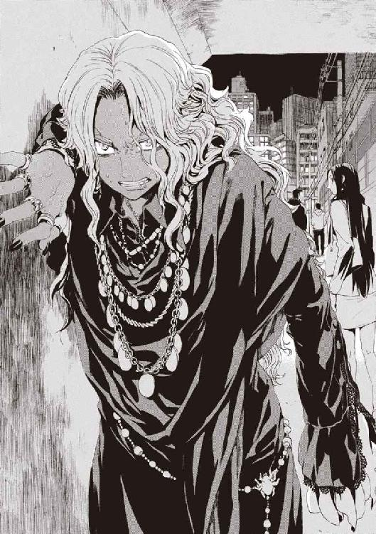
「おまえら《悪鬼》が、たいした混乱もなくメシを食ってられるのはおかしいじゃないか。畜生、私のカネだよ。......こんな屑どものために、どうして私が」
ぼろぼろ涙がこぼれてきた。クスリが足りなくて、更に舌の裏でメタンフェタミンを追加精製した。
ハイになりすぎて、そのあたりの土を雑草ごと引っつかんで喰いたい気分だった。魔法使いの自分が、こんな《悪鬼》ごときの中でおびえていなければならないことが間違いに思える。間違いは正さなければならなかった。
「《九位》さまは、《三十六宮》だよ。《協会》で一番えらいんだよ。おまえら、なんで私をそんな目で見るのさ」
道行く人々がみんなアラクネをよけてゆく。都会は敗北者に厳しい。
本当はいつか《九位》が敗れることはわかっていた。リスクの大きい賭だったのだ。
若い女性が、ガードの出口あたりで彼女のほうを盗み見ながら携帯電話を出していた。警察を呼ばれていた。
逃げるより、近寄って携帯電話をとりあげるほうがたぶんクールだった。《悪鬼》の女が、アラクネが走りだしたのを見て電話を取り落とす。勝ったと思ったら、よだれが出た。
だが、アラクネと女の間に、するりと小柄な影が割り込んできた。ぞわりと、それなりの修羅場をくぐってきたアラクネのうなじの毛が逆立った。
せいぜい十五、六歳の、ヘッドフォンをつけた少女だった。伏し目がちな大きな目で彼女をじっと見て、ぽつりと確認をとるように言った。
「アラクネ・ショージァ、麻薬取締法違反で逮捕」
相手の正体に、すぐに気づいた。アラクネたち《協会》と一万年間戦い続けた、神聖騎士団という魔法使い集団だ。《協会》の縄張りだった日本に入り込んで治安の守護者面をする、外敵だ。
「ハッ、警官気取りかい？ 聖騎士って連中は、どこでも厚かましいねぇ」
アラクネは、ガードの中途にあった上り階段から外に逃げ出した。薬物のおかげで身体は軽かった。月まででも走ってゆけそうな気分だった。
夜の渋谷の、山手線の線路沿いの公園に飛び込む。明治通りからは区画ひとつをはさんで影になった暗がりに出て、はっと我に返った。
ここには魔炎がない。魔法消去の影響下にないということで、アラクネを遥か彼方から支配しようとする再演魔術から守ってくれるものがないということだ。
だが、運命は彼女に幕を引く者をすでに遣わしていた。
駐まっていたトラックの脇を駆け抜けて逃げようとしたアラクネは、全身を黒い鎧でかためた長身の男が行く手に立っているのに気づいたのだ。
すぐそばに渋谷警察署があるというのに、巨大な槍を肩に担いでいた。
〈待てよ、姉ちゃん。魔法消去がずいぶん弱まってるが、理由を聞かせちゃくれないか〉
アラクネは、囁くようなその声を、耳に直接届けられたように聞いた。
猫をつまみ上げるように、黒い騎士が、背後に座り込んでいた小柄な騎士を引っ張り出した。それはついさっきまで戦場にいたかのように装備をぼろぼろにした、白金色の髪の少女だった。
「機械化聖騎士師団、上級聖騎士リュリュ・メルルです。わたしは、円環魔導師アラクネ・ショージァに、現状の説明を求めます。今は西暦何年の何月何日ですか」
〈──固いぜ、お嬢ちゃん〉
アラクネから攻撃されてもどうとでもなるとばかりに、黒い騎士は地面に突き立てた武器から手を離していた。リュリュと名乗った少女に比べて、男のほうはあきらかに影の色が薄かった。
アラクネは男の正体を理解し、命運尽きたことを悟った。神聖騎士団の切り札たる超常の戦士たちは、圧縮してかためた大気の肉体を持つ。
「聖霊騎士......」
過去の英雄を神音化した、破壊されるたび何度でもよみがえる事実上不死身の騎士たち。
〈今ふうに言えば、聖霊騎士No.0003。俺の名前は、この時代じゃ、どう名乗ると通りがいいんだろうなあ〉
＊
武原仁が、魔導師公館に連絡を入れたのは、《九位》を倒した日の夜だ。彼の幼なじみである十崎京香は、情報と引き替えに、メイゼルの復学手続きと、護衛として《鬼火衆》を小学校に入れることを約束した。
仁にはありがたい申し出だった。メイゼルの居場所を、彼のそば以外にも作っておいてやらねばならなかったからだ。彼女の将来を考えれば、同年代の子ども同士の人間関係こそが本当に大事だった。
そして今日、ちいさな魔女は小学校から笑顔で戻ってきた。京香は約束を果たした。だから仁も、住居にしているマンションに彼女を呼んだ。
各地の様子を報道したテレビのニュースが、重要な情報源だった。誰も質の高い情報など持っていない以上、量で補うのは現実的な選択だ。
〈この現場が墜落現場ですね。新宿上空を編隊飛行していた輝く一団が、突如失速、そのままビルに墜落しました。......はい、この現在映っているビルに激突して、五名が意識不明の重体です。魔法使いとおぼしきその一団は、全裸だったという情報が入っています〉
アナウンサーが、夜の新宿の繁華街の、青いビニールシートがかけられたビルを指し示していた。魔法使いの落下に、地上にいた人間が巻き込まれる可能性もあったことをコメンテーターは示唆していた。
〈全裸で何が悪い。錬金魔導師を、誰も覆い隠すことなどできない。そう、誰もだ──〉
語った黒人のコメンテーターも全裸だった。かろうじてデスクがあるせいで下半身が隠れている。テレビ局は早くも魔法使いの解説員を確保したようだった。
かいがいしく家事をしているメイゼルの後ろ姿に声をかけた。ちいさな魔女は、《鬼火衆》が帰らず二人きりなのが楽しいのか、上機嫌だ。仁は、尻のあたりが落ち着かなくなってきた。
「京香姉ちゃんは、今日は忙しくなったのかもな」
魔導師公館は国内治安の魔法使いがかかわる部分を管掌している。核戦争以降、魔法消去が異常に弱まり、無茶苦茶な数の異世界人たちが、この世界でちいさな混乱を引き起こしていたのだ。
呼び鈴が鳴った。時計を見ると、待ち合わせの時間通りだった。
玄関に出てみると、十崎京香がやってきていた。冬物の重いコートを脱いで、当たり前のように仁にわたしてくる。
「なにこれ、きれーな部屋じゃない」
京香は、しばらく染められていなかった髪を黒髪に戻していた。おかげで、仁のよく知っていた〝京香姉ちゃん〟に戻ったようだ。靴の脱ぎかたの微妙なぞんざいさも懐かしかった。
「京香姉ちゃん、だいじょうぶなのか。これだけ魔法使いがいるんじゃ、警察も魔導師公館も大混乱じゃないのか」
「いーの、いーの。届けの数は多いけど軽犯罪ばっかりだし。この世界の人が英語使ってんのに、魔法使いがからんだとか、そんなのばっかよ。《公館》が出てったら血なまぐさくなるから、おとなしくしろって」
《協会》は、宿敵である神聖騎士団が米軍と関係深いため、英語を卑語としてあつかわせている。このせいで、しばしば魔導師公館も《公館》と略されるくらいだ。魔法使いたちには、英語だらけの日本の都市は相当下品に見えるはずだ。
京香が、家賃二十万円のマンションに感心しながらあがりこんできた。
エプロンを着けたメイゼルが、お酒なんて置いてないとか文句を言いながら、コンビニ弁当を電子レンジであたために行った。
「キョウカも、晩ごはんまだなら前もって電話くらいしたほうがいいと思うの。ジュンビが必要なの、わかるでしょ？ おとななんだから」
スリッパを鳴らして台所で何やらパタパタやっている。
京香がちゃぶ台のそばに座ったころ、電子レンジが盛大にうなりだした。引っ越してきたばかりで、食器や調理道具は住居に備え付けだが食材がなく、コンビニ弁当をあっためるくらいしかできることがないのだ。
京香がちゃぶ台に肘をついて仁をじっと見ていた。
「ところで、メイゼルちゃんとどうなの？」
「どうも何も、俺を何だと思ってるんだ」
「男って、半年好きって言われ続けたら、自分も好きになっちゃう生き物でしょ」
「いやもう京香姉ちゃんくらい信じろよ！」
「仁ちゃん、この状況の何を信じるの」
幼なじみが銀縁の眼鏡を外してまぶたを揉んだ。彼女の位置からだと、台所で鼻歌を歌っているメイゼルの後ろ姿がよく見えるはずだった。
「メイゼルが、ほら、人間的に、すくすく育ってるだろ」
「わりと取り返しが付かない方向にねー」
ことばとは裏腹に彼女がまぶしそうに眼を細めている。メイゼルが十崎家で暮らしていた頃は、京香は酒で酔っぱらわずにはちいさな魔女と話せなかったのだ。
「まじめな話なんだけど、仁ちゃんたち、《九位》はどうすんの？ ここだけの話、アトランチスからアメリカに引き渡して、向こうで裁判ひらくことになったでしょ」
《九位》が起こした一瞬の核戦争で最大の被害を受けたのは、最初の呼び水となった核攻撃で西海岸の主要都市を焼き尽くされたアメリカだ。神聖騎士団の助力で救助が行われているが、わずか二日では死者数すら判明していない。
だが、仁には《九位》のことはどうしようもない。
「俺は、メイゼルやまわりの人間を守ってやるために、もう《九位》を使い終えた。次は王子護がいいように利用するし、その次は国際法廷に引き渡されて核戦争の落としどころを作るための道具にされる。最低限の決まりを破って勝負をかけた以上、負けたら助けは入らないのかもな」
彼は《九位》の身柄の扱いをアトランチス側に売った。それと引き替えに得たものが、市民代表である王子護ハウゼンからの可能な限りの協力だ。
「魔導師公館は今どうなんだ。こないだは神聖騎士団と組んでたろ」
「《九位》が倒れて、核戦争は遠のいたでしょ。神聖騎士団となんて、米軍が窓口になってくれなきゃ危なくて逆に組んでられないしー」
つまり、わずか二日で関係解消したということだ。仁も魔導師公館も、節操はない。
「そんなことより、魔法使いの流入が増えすぎて、管理手続きがほとんど麻痺状態よ。止めろって言ってるのに《協会》が魔法使いを連れてくるから、魔導師公館だけじゃ対処不能ってことになっちゃったー」
京香が、いろいろめんどくさくなったのか、座布団の上で足を崩した。黒いストッキングをはいた足を、だらしなくちゃぶ台の下に投げ出す。
「なっちゃったーって、かわいく言われても。......魔導師公館から、魔法使いの管理が離れるのって、おおごとだろ」
だが、京香は仕事をしすぎて緊張が切れてしまったかのように、気楽に言った。
「昨日と今日だけで、魔法使いの入国申請が一万件を超えたのよー。《協会》側の調整官の話だと、入国待ちがもう百万人以上たまってるんだって。《公館》が治安と行政全部やるのは絶対無理って話になってる。来年度からは、外務省に外局ができるってー」
仁は、ビールでも出すかと思い立ち、冷蔵庫へ向かいかけて気づいた。ビールなんて買った覚えがない。
仕方なく、用意があった常滑焼きの急須でお茶をいれることにした。《鬼火衆》のために、湯飲みだけはちゃぶ台の脇に置いたお盆に大量に用意してあった。
「《神》が降りてきたら、魔導師公館にとばっちりか」
仁が出した茶を、京香が、眼鏡が曇らないように外してからすすった。
「とばっちりじゃないわ。魔法使いの大量流入って状況から、すぐに予想できるような最悪の混乱は起こってないから。これが、再演魔術がこの世界に魔法使いを従わせてるってことなら、むしろ感謝するべきかもね」
だが京香は、すこしもうれしそうには見えなかった。
「ねえ、仁ちゃん。いっしょに仕事してたころ、魔法使いがこの世界の決まりに従って、私たちを同じ人間としてあつかってくれたら、何もかもよくなるって言ってたの、覚えてる？ ......再演大系がやったことって、そういうことなのかもね」
仁は一瞬、息ができなかった。自分のためにいれた茶を飲んで、胸のつかえを押し流した。
「魔法使いが再演魔術でおとなしくなって、『モノに等しい』なんてバカにしてた俺たちと共存してくれることが、《神》のくれた救いなのか」
共存こそ〝救い〟だと思いそうな人間といえば、彼の妹の武原舞花もそうだ。再演魔導師となって神聖騎士団とともに消えた妹は、いまごろ何をしているのだろう。
「魔導師公館も、専任係官も刻印魔導師も、《神》の降臨の前座で戦ってきたわけじゃない」
「仁ちゃん、一番大変なときに出て行ったけどね。《協会》との関係は深くなってるから、再演魔術で矯正されなくても、魔法使いもすこしは折れてくれてたのかもだし。──それに戦いのほうは終わってないんだし」
仁は、京香から何気なく出たことばに、心臓の奥に冷えた血の塊ができた心地がした。
「終わってないか」
「世界は、たぶんあのとき死んで、新しく生まれ変わったのよ。ただ、それだけ」
部屋の空気が冷え切っていた。それは、これからが本当の闘争だということだ。《神》がいないからこそ、人間があらゆることをするしかなかった世界は、もうない。
再演の《神》が魔法使いを操ってはたらかせるこれからの世界では、ぼやぼやしていたら仕事を《神》に取り上げられてしまう。
それは、社会の運営が人間の手を離れるということで、世界を《神》に取り上げられてしまうということだ。
はたらいて自分の仕事を守らなければ、運命を《神》にゆだねるしかなくなる。
まだ茶飲み話で、本題は先のつもりだった仁は、手が細かく震えるのを感じていた。次の戦いまでの小休止どころではない。すでに決戦ははじまっている。無限の射程距離を持つ再演魔術による攻撃から、安全でいられるものなどない。
京香の眼が、鋼鉄の女と魔法使いたちを恐れさせた鋭さを取り戻していた。
「魔法使いが社会を変えても、社会を運営するのは人間でしょ。これまで通りの毎日を途切れなく続けて、『《神》が現れても何が変わったかわからない』って国民に言わせるのが、当面の勝負ね」
専任係官のまとめ役だった彼女は、《神》の降臨で死んだ〝古い社会〟を担ってきたひとりだ。人知れず奪われたものの意趣返しを、彼女がしてくれることがうれしかった。
「たくましいな」
「仁ちゃんはもうちょっとしっかりしたほうがいいんじゃない。もう、おとななんだし、いろいろ考えることもあるでしょ」
京香が、書類カバンを開けて分厚い封筒を、ちゃぶ台の上に置いた。
見ると、家の登記簿だった。仁にとっては忘れられない住所が記載されていた。両親が失踪してアパートに引っ越す前、武原家が一家四人で住んでいた家だ。
両親が失踪して、すでに九年だ。つまりそれは、失踪宣告を出して仁が遺産を相続できるということだ。幼なじみが持ってきた家の権利書は、つまりそういうことだった。
──ちーん。
生々しい現実にことばが尽きていた居間に、電子レンジの音が響いた。
ぱたぱたとお皿を持ってメイゼルが戻ってきた。焼き肉とハンバーグとチキンが載った大皿が湯気を立てている。仁が、手伝おうと台所に行ってみると、盛り直したサラダと焼きうどんが置いてあった。
「買ってきたお弁当も、もりつけ直したら立派な料理でしょう。そうよね、キョウカ？」
「あ、当たり前でしょう！ 十崎家の味よね」
仁が行っていなかったときの十崎家の食卓が目に浮かぶようだった。長い黒髪をポニーテールに結んでいたメイゼルに、声をかけた。
「焼きうどんをおかずにごはんを食べるのか」
メイゼルが膝立ちで身を乗り出し、大盛りになっているサラダに、豪快にドレッシングをかける。
「このお野菜、あたしが切って足したのよ」
ちいさな魔女が得意げに胸を張っていた。
「この一手間をかけるかが、キョウカときずなのちがいよね。いい？ キョウカ、これはモテる女と〝そうじゃないの〟の差なの。あたし、モテるほうに行くわ」
京香のぶんの取り皿も合わせて、三人ぶんの食器がちゃぶ台に並んだ。
「なにこの敗北感......。ねえ私、子どもに負けたの？」
「キョウカ、ごはんのジュンビしてるんだから、その荷物、食べるところからどかすのよ」
仁は、保温にして用意してあった炊飯器から、これまた弁当から移しただけのごはんを茶碗によそう。
「俺たちの家、京香姉ちゃんがずっと管理してくれてたんだよな。ありがとう」
もう何年もあることすらほとんど意識しなかった。けれど、生前の十崎理五郎が取りはからって、京香が管理していたのだ。それを知らなかったことを恥じ、そして感謝する。
「わかればいーのよ。なんか、ほら、仁ちゃんのまわりバタバタしてるし、家のこと、もう今やんないと機会がないかもでしょ」
なんとなく流されるように、京香が自分の前にあった茶碗を仁へと差し出した。
「公館本館が燃えて、《公館》って警察庁に間借りしてるじゃない。あのへんのせいで組織改編があって、前に仁の家を使っていた事務の人が異動になってさー。だから、処分するにしても、そろそろ仁ちゃんにまかせどきかなって」
ちいさな魔女が、ちょっと見せてと、興味津々で封筒を覗き込んでいた。
「メイゼルちゃんも興味あるんだ」
「あるに決まってるでしょ。いつかあたしのものになる家だもの」
「あー、そうだな......」
仁の口から、うめき声が漏れた。封筒から書類を引き出して難しい漢字を読もうと眉をひそめていたメイゼルが、目をまるくして驚き、そして顔を真っ赤にした。
京香からこの話が今日出たのは、神聖騎士団との決戦を前に、日常的な事務仕事のできる時間は二度とないかもしれないからだ。《神》の降臨という未曾有の事態にあって、彼が生き残れる可能性は高くない。そして、それでも生きている限り細々した生活を営まねばならない。
「戦わなきゃな」
十崎家の食卓を再現したようなちいさな輪の中で、改めて、メイゼルと出会ったころの気持ちがよみがえるようだった。仁は、自分の故郷が子どもが戦って死んでゆく世界だと認めたくなかった。この世界を好きになって欲しかった。
「せんせ、いただきますは？」
奇蹟が手に入った世界でも変わらない。人間は、現実と戦うしかないのだ。
晩飯を食べると京香は庁舎へ戻っていった。
夜遅くになると、外で一杯飲んできた《鬼火衆》も帰還した。刻印魔導師たちの生はたいてい刹那的だ。彼らは、仁たちの部屋と隣の部屋に別れて休んだ。
やがて朝がきて、メイゼルは新しく買い直したランドセルを背負って小学校へ向かう。校務員や警備員として採用されている《鬼火衆》たちは、もっと朝が早い。
電車に乗せるのが不安だから、小学校のそばまでは仁が自動車で送り迎えをした。マンスリーマンションは、さいわい御陵甲小学校まで車で二十分ほどの距離にある。
午前八時半、メイゼルを送って一息ついた仁は、待ち合わせの場所に向かう。
ハウゼン・Ｏ・ジモリーこと《魔術師》王子護ハウゼンの代理人から、調査結果を聞くためだ。仁は、ワイズマン警備調査会社に、東京に戻った彼らの周辺で各勢力がどういう動きを見せるか監視を依頼していたのだ。
黒いコートを着た隻眼の男が、時間通りにコンビニの駐車場で待っていた。大通りには極力顔を向けないように、煙草を吸っているふうを装ってうつむいている。
円環魔導師の拳銃使い、《死神》ベルナーだ。今もコートの内側には脇ホルスターに二挺の拳銃を吊しているはずだった。このあたりの企業に勤めているのか、会社員らしい男性が何人か店から出てきた。そして口々に、「魔法使いだ」と噂していた。ガラスのドア越しに見ると、レジのあたりで金属製の飾りをじゃらじゃらつけた異世界人が、おでんの匂いを嗅いでいた。
コンビニのすぐ外にいるベルナーに目を留める人間はいない。人々は魔法使いを、まだ服装だけで判別している。ベルナーのようなこの世界に適応した魔法使いを、まったく見分けられていなかった。
仁が近づいてくるのを認めて、ベルナーが煙草を捨てて踏み消した。かつてワイズマン狩猟魔導師中隊に所属し、東京を核テロで焼き払う作戦に参加した男と、いっしょに仕事をするとは思わなかった。
「昨日までの間に、神聖騎士団は動いたか」
「網に魔法使いが四人かかった。おまえたちの所在はすでに特定されている。監視のスタートは、おまえたちが今の住居に移った三十分後から一時間後の間だ」
「再演魔術でのリアルタイム監視だな。引っ越しの直前に場所を決めた、連絡も王子護にしかしていない家だ。普通の情報漏洩なら早すぎる」
今日のベルナーとの待ち合わせも、居場所が露見することを恐れて住居から離しておいたのにだ。
拳銃使いが、コートの胸ポケットから封筒を抜き出した。
「ワイズマン側の状況については、このカードに記載されている。封筒から出した後、三十秒で燃える」
仁は封筒を破って、二つ折りにされていたメッセージカードを読んだ。仁は、《公館》にいた頃、専任係官をしていた王子護から、同じ方法で何度も情報を受け取った。目を走らせて内容を覚えたころ、紙は発火して黒い燃えさしになった。
アトランチスは現在、政治的に絶体絶命の苦境にあるそうだ。アトランチスは元々、核ミサイル発射施設を備えた要塞であり、核を抑止力にしていた。だからこそ《九位》に占領され、この核ミサイルでアメリカへの核攻撃が行われた。つまり、西海岸を壊滅させた核は、出自としては、東京核テロからの流れである「ワイズマンの製品」なのだ。
当然、王子護は証拠を隠滅しようとした。だが、発射施設を解体に向かわせた作業員が、みんな再演魔術による干渉を受けて金縛りに遭うという。つまり、ワイズマンは、再演大系に「この証拠をアメリカに押さえさせられたくなかったら協力しろ」と脅されている。
致命的な状況を伝える急報だった。だが、それにもかかわらず、このメッセージ自体、再演魔術に操られて書かされた可能性があった。
「俺の部屋を監視してる魔法使いは、神聖騎士団の関係者と考えていいのか？ ＣＩＡのスタッフとかじゃなくて」
すこしでもベルナーに直接話をさせたかった。魔法消去をしながら情報を聞くくらいしか、再演干渉による改ざんを防ぐ手段を思いつかなかった。
ベルナーは淡々と告げた。
「ＣＩＡは、アトランチスが現れてからは、米軍内部にいる魔法使いシンパを警戒している。ＣＩＡ職員は、魔法使いとの単独接触すら禁止された」
「なるほど。アトランチスの件を事前につかみ損ねた前科があるせいで、ＣＩＡ自体が核攻撃もわざと見逃したと疑われてるわけだ。諜報が本業の組織は大変だな」
米国の政府機関はどこも同様の冷たさだと考えれば、手早く魔法使いを動かせるのは魔法使い集団である神聖騎士団だ。
そしてこの敵にとっての唯一の脅威とは、倉本きずななのだ。
「ずいぶん妙な世の中になったもんだ」
見ている間に、コンビニからおでんの容器を抱えて魔法使いが現れた。そして、ちいさな魔法を使って魔法消去の影響下にないことを確かめてから、魔法的転移でこの場を去った。
ひとりの普通の魔法使いが、魔法使いらしいやりかたを維持しておでんを買った。その姿は明るい未来のきざしだ。あの魔法使いは近いうちに、魔法でなら同じ手間で遠くにあるおでんの名店にでも足を運べることを覚えるはずだ。あらゆる魔法使いが、メイゼルと同じようにこの世界で〝魔法使いらしく〟生きて共存できる日が、来るだろうかと思った。
ワイズマンの走狗としてはたらき続ける拳銃使いに聞いてみた。
「おまえ、再演大系の《神》が降りてから、何か変わった覚えがあるか？」
「──操られようと人生は続く」
仁も、ベルナーと同じように、かつては魔導師公館という組織にいて、巨大な社会に歯車として組み込まれていた。そんな不自由の中で、自分なりの生活を切り開いている人間は、いくらでもいる。再演大系による支配の下でも変わらない。
ベルナーは消えていた。魔法消去が弱まった今、魔法使いが姿を消すのは簡単だ。
メイゼルたち六年一組では、文化祭で白雪姫をモチーフにした創作劇を演じる。
いろいろなことがありすぎたせいで、日程が今週末に延期されたのだ。
仁たちはなんとか今週一週間を襲撃されずに生き延びた。メイゼルは、毎日が楽しいのか帰ってくると学校の話ばかりしていた。
そして文化祭当日、仁はひさしぶりに小学校の校内にいた。文化祭だけに、いつもは教室に収納されている児童たちが、ほとんど廊下や運動場に出てしまっている。だから、どこもここも子どもであふれているようだった。
「やあやあ、これはまた、みんなちっさいからぼくが巨人になったみたいだね」
仁の連れは、大きく胸元を開いたアロハシャツに夏物のジャケットを引っかけた男だ。魔導師公館の専任係官、《破壊》八咬誠志郎は、冬の寒さを精神力で克服する。
「おまえ、なんでこんな時期にアロハなんだよ」
仁は、コートのポケットに左手を突っ込んだ。八咬は、貴公子めいた額から品よく前髪を払う。
「連中より目立たなきゃいけないからさ。この世界の代表としてはね」
小学校の文化祭なのに、運動場は、豪奢なローブや礼服で飾った魔法使いだらけだ。御陵甲小学校は、メイゼルを交換留学生として受け容れたことを契機ととらえた。駆け落ち事件の不名誉を、文化祭でアトランチスからの視察を受け容れることでカバーしようとしている。
その結果が魔法使いだらけの文化祭だ。元々警備員として入っていた《鬼火衆》だけにはまかせきれず、八咬がお目付役でやってきたのも、このせいだ。魔導師公館は、この催しを、魔法使いたちが《モノに等しい悪鬼》とやっていけるかをはかる試金石として見ているのだ。
「連中はどう見ても《協会》圏の魔法使いじゃないか。アトランチスからの視察ってふうには見えないね」
「アトランチス人の住民票なんか、王子護の気分次第で何枚でも刷れるんだよ。ワイズマンが住民票を魔法使いに売ったんだろ。これもダフ屋か？」
人間が動けばカネも動く。ビジネスは、再演魔術が人間のこころまでは直接操作できないなら、これまで通り続く。すくなくともワイズマンはそう考えている。
「ふふふ。ところであの連中、ぼくを見てずいぶん驚いていると思わないかい？」
八咬はローブ姿の魔法使いと同じくらい目立っている。
「そうだな。でも、連中より保護者のほうが引いてるぞ」
おとなは保護者と教師だけのはずの学校の風景に、魔法使いが混じっていると、ひどい違和感があった。
生徒会長の速見が、仁に気づいて会釈した。そして、彼にどう話しかけてよいのかわからない様子で、そのまま去って行った。児童たちも、メイゼルのアトランチス亡命会見での衝撃告白を見たのだと思うと、背筋に脂汗がにじんだ。
「魔法使いがいてくれてよかったよ。俺は、生徒に目立つからな」
二度とニセ教師に戻ることはないのだと思うと、なぜか切なかった。仁はメイゼルを監督し守るために小学校に入り込んだ。なのに、六年一組の生徒たちに無性に会いたかった。
校舎を見上げる仁に気づいたか、付き合いの長い八咬が声をかけてきた。
「仁、何も食べるものがないんだが、どうするんだい？」
「小学校の文化祭で、模擬店は勇気がいるだろ。そんな顔をするな。ないものはない」
参加者にお金がわりのチケットを配って、自由課題の研究発表や定番のお化け屋敷、劇や歌などの演し物を見せるくらいで限界だ。
いつも八咬のそばにいる秘書と看護師が、きわどい衣装の上に豪華な毛皮のコートをひっかけて現れた。
「だから朝食をきちんととるように言ったのです、ヤガミ」
「あなたは子どもですか、ヤガミ」
これまでは八咬から離れないよう付き添っていた彼女たちも、今日はリラックスしている。《神》の降臨によって、魔法消去だけでなく、カオティックファクターと呼ばれる地獄特有魔術も軒並みその力を減じた。魔法の能力をほとんど失っているというのに、八咬はこたえた様子もない。
「ところで、君のクラスの劇に時間を合わせて来たんだろう？ 体育館に行かないと、もうすぐはじまってしまうのではないかい？」
体育館に入ると、青いビニールシートの上にたくさんのパイプ椅子が置かれ、三百人ぶんほどの席が確保されていた。仁たちが入ったときには、もう満席になっていて、観客の半分は魔法使いだった。
メイゼルは、《雷神》と《九位》という、円環大系を代表する超高位魔導師二人を撃破している。魔法使いたちにとっては注目の人物ではある。
「ずいぶん混んでるね」
「そのほうがありがたいよ。人がすくないと気づかれる」
仁は、小学校には連絡したが、教室の演し物を見に行くことは遠慮したのだ。席のない入り口あたりのスペースで、立ち見で観劇することにした。
八咬も付き合いよく立ち見の列に並んだ。
「元々、仁の生徒だったんだろ？ 会わなくていいのかい？」
「副担任を突然止めたからな。子どもが舞台前で緊張してるところに、顔は出せないよ」
担任の祖師堂先生と相談して、そう決めたのだ。児童たちよりも、まず保護者たちが神経質になっている。学校に迷惑はかけたくなかった。
仁は、携帯電話を出して連絡が入っていないか確かめる。倉本きずなにも、再演魔術を通して今日がメイゼルの晴れ舞台だと知ることはできたはずだ。《幻影城》を出る仁に、「もうすこし時間がほしい」と言った彼女は、一週間経ってもまだ動き出せていない様子だった。
そして、舞台袖から学級委員の寒川紀子が現れて、劇の開始を告げた。いつもの銀縁の眼鏡を外して、衣装のドレスをまとった少女は、いつものきまじめな優等生ではなく、すこしおとなっぽく見えた。
背が低い小学生のための講堂だから、舞台は床と比べてそう高くはない。だから、後ろから立ち見していると、前に座る人々の後頭部がやたらと目立った。
幕が上がる。
「白雪姫だってね。あれ、どういう話だったかな」
「はじまるぞ。黙って見ろよ」
悪い女王役で、メイゼルが舞台に登場した。ことの起こりは、魔女でもある女王が、城の地下で魔法の鏡に向かって、「世界で一番美しいのはだあれ？」とたずねたことだ。
魔法の鏡は、噓がつけない性格なのか白雪姫を映しだす。完全なとばっちりで逆鱗に触れた姫は、さっきあいさつをしたばかりの寒川紀子だ。
白雪姫は追い詰められ、森の奥に逃げ込んで、七人の小人に出会う。仁のまわりの魔法使いの観客たちが、食い入るように舞台へ視線を注いでいた。
「まあ、こういうことは、魔法使いの世界では日常茶飯事だ」
八咬とは反対側の隣に、四角い顔に顎鬚をたくわえた男が立っていた。この世界と《協会》との関係をとりもつ責任者である調整官ベルニッチだった。
「おまえ、なんでこんなとこにいるんだよ」
「《九位》が倒れた以上、メイゼル殿は、円環大系世界に重要な役割を担う。わからぬわけではあるまい」
仁は絶句した。メイゼルをいつか故郷に帰らせてやるつもりだった。だが、いきなり重責を押しつけられるとまでは考えていなかったのだ。
「......ふざけるな。味方もいないままメイゼルを円環世界に帰らせたら、ただじゃすまないことくらいわかるだろ。あいつを、円環世界の連中が《九位》をなくした鬱憤を晴らすための、生け贄にするつもりか」
傲慢に《悪鬼》と《地獄》を軽視し続けた男が、ことばすくなになっていた。
舞台では、森で七人の小人と楽しく過ごしていた白雪姫が、毒リンゴを口に押し込まれて悶絶していた。
「この物語の、〝女王〟と〝白雪姫〟とやらの関係は、《九位》とメイゼル殿の関係に、似ているな。〝女王〟は、力のない〝白雪姫〟を追い詰めることで、自分の権力基盤をかためたわけだ」
昏倒して死んだも同然の白雪姫のもとに、偶然、放浪の王子が通りかかる。そして、姫に口づけをすると、倒れていた彼女は奇跡的に目を覚ます。
かくして七人の小人と王子を引き連れて、白雪姫は女王の城へと進軍する。命を狙った者と狙われた者は、必然的に生存をかけて激突する。
「白雪姫ってこんな話だったかい？ チャンバラになったぞ、うわ、これ殺陣じゃないな。まさか、本気で殴り合って勝った方が勝者ってことかい？」
八咬はのん気なものだ。
小学生の作った劇にしては脚色がなまなまし過ぎだった。仁にはこの惨状の元凶に心当りがあった。戦いもせず筋書き通りに負けるのはイヤだと、メイゼルが駄々をこねたにちがいない。
「いやいや、......いや、......待て、......あいつら何やってんだ？ 白雪姫にそんな力こそ正義な思い切りはねー！」
メイゼル女王と寒川白雪姫が、お互い、手に毒リンゴを持ってじりじりと距離をはかっていた。
毒リンゴは生ものだったらしく、メイゼルの毒リンゴパンチが寒川の頭に命中すると、ごすりとにぶい音がした。修羅場に慣れたちいさな魔女の動きは、魔法がなくても鋭い。
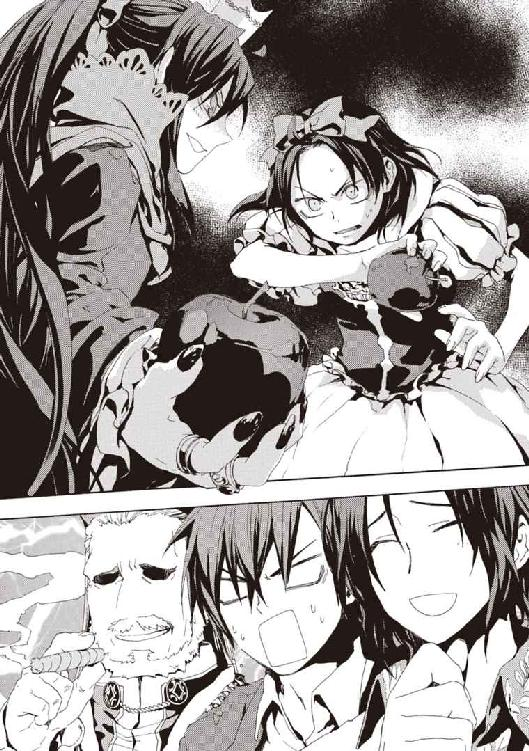
うずくまりかけた寒川白雪姫が、足を踏ん張ってリンゴをぶん投げた。我慢強いメイゼルが、立っていられなくなって膝をつく。油断しすぎたか、鳩尾のけっこういいところに入った様子だった。
用意していたらしい血のりを手にべったりつけて、メイゼルが絶叫した。
「......よくこのあたしを、倒して、『世界で一番美しい女』の座を奪い取ったわね。......あんたは、......あんたは、あたしの血のぶんだけきれいになって、世界に君臨するのよ！」
壮絶な捨て台詞を残して、悪い魔女がばたりと倒れた。
「白雪姫が勝ったぞー！」
ときの声があがる。城の兵士役の児童たちが武器を捨てた。
観客の中で、どっと沸き返ったのは保護者たちよりも、まず魔法使いたちだった。
「吊せー！」
いさかいが命のやりとりによく発展する魔法使いは、歓声すらもひどすぎた。
ベルニッチが、禁煙の体育館で葉巻を吹かしていた。
「勝者にはその権利がある」
「禁煙だ。火気厳禁！」
魔法使いは、座っていた者まで立ち上がって叫んでいた。
「女王！ 女王！」
「女王！ 女王！」
舞台の上の寒川紀子が、明後日の方向に大盛り上がりした会場を見下ろして、どん引きしていた。
そういう劇だと納得した聴衆が、「女王！」コールに参加しはじめた。
「白雪姫、このあとどうすんだよ」
保護者たちは、便乗して拍手する者と、戸惑う者にはっきり分かれていた。観客が児童の保護者だけなら、劇が多少はっちゃけていてもほほえましく終われたはずだった。だが、まったくちがった秩序が混じって、演者と観客の呼吸がいかがわしくなっている。
「お、お母さぁん！」
寒川白雪姫が悲鳴をあげる。
だが、仁はこの混沌に、人間はきっとたくましく生き延びてゆくのだろうと想像できる活気を見た。
「がんばれ、寒川！」
仁は大声で声援を送っていた。
そのとき、舞台の上に光が走った。スポットライトを当てたように、白雪姫が黄金の光を浴びた。間違いなく魔法だった。魔法消去者がこれだけたくさんいるはずの場所で、破壊されるべき奇蹟がはっきり発動していた。
子どもたちは、魔法を前に放心していた。保護者たちも、どう反応してよいかわからない様子だった。
「待て、なんで発動するんだ？ 魔法消去がまた不安定になったのか」
仁は、心臓が止まりそうな思いで隣を見た。
八咬誠志郎は、その一瞬で自分の衣服をぼろぼろにしていた。彼の魔法《破壊》は、観測したあらゆるものを破壊する。魔法消去に極めて弱い《破壊》が力を発揮したこと自体、消去が一時的に極限まで弱まった証拠だった。
火の消えた葉巻をくわえたまま、調整官ベルニッチが憮然としていた。トウモロコシに似た香ばしい匂いの葉巻が、まっ先に《破壊》に食われたのだ。
後列の魔法使いたちが、咳き込んでいた。あげていた歓声が《破壊》の魔法攻撃を誘発し、のどに傷を負ったのだ。
物騒な野次が止まった舞台の上で、追い詰められて助けを求めていた寒川白雪姫が、あっと口を開けた。地味に、台本が頭から抜けていたようだった。
白雪姫が、死なばもろともとばかりに倒れた女王の上に覆い被さる。まるで、姫が王子の口づけで目を覚ましたときのやり直しだ。
ことばにならない悲鳴をあげて、メイゼルが演技を忘れて上半身を起こしていた。
死んだはずの女王が、生き返ってしまっていた。
「よみがえった！」
やけくそで、舞台上で王子役をしていた兵藤直樹が、両手をあげて叫んだ。
「新女王バンザイ！」
木の役をしていた佐藤泉美が、バンザイに加わった。どうしようもなくなった舞台係や、大道具や、役者をした生徒たちや、脚本の天瑞岬までが舞台に集まってきていた。
舞台袖で、担任の祖師堂しづか先生が、ちいさくバンザイしていた。
観客席が沸き立った。
場の熱気に浮かされて、保護者たちも万雷の拍手を送っていた。奇蹟と闘争に生きる魔法使いは、憎み合うふたりの魔女が和解したと納得したのかもしれない。細かいことを考える余裕がなくなったよろこびのうちに、様々なものが、ひとつところに調和して存在している。
「あっはっは、これはひどい」
八咬が涙を浮かべて大笑いしながら拍手していた。
お話の中でくらい、都合のよい終わりになってもよい気がした。
狂騒のままにこのままどこへ行くのか、誰も知らない。それでも、ひとつの達成がなされた「しあわせな世界」に思えた。
どうしようもなくなって、舞台に幕が下りてきた。
楽しかった物語は、いつか終わる。
仁とメイゼルにとっても、たぶん区切りは目前に迫っていた。
＊
「あー、もうメイゼルちゃんの劇も終わってるんだろうなあ」
十崎京香は、ふと腕時計を確認してつぶやいた。
今週も、彼女は激務だった。
かつて《九位》の下で商取引を取り仕切った円環魔導師アラクネ・ショージァが逮捕されたのだ。渋谷で聖騎士に拘束され、警察署へ連行されて緊急逮捕されたという。
そしてアラクネは、黙秘を貫いている。彼女の手持ちの情報が、国際情勢を揺るがす爆弾であることは想像できた。
だからこそ京香は、業を煮やした警察から、アラクネの取り調べを許可された。外務省や自衛隊をはじめ様々な機関の手を経た末に、ようやく回ってきた順番だ。それは魔導師公館の、日本政府内での立場の弱さを表している。
警察庁に間借りした魔導師公館は、独自の取調室と拘置所を持っている。魔法で逃げられないよう、監視カメラで常時魔法消去できる特別の施設が必要だったせいだ。
京香がせまい取調室に入ると、白髪の魔女がうなだれていた。魔女アラクネは、時間があると口の中で麻薬を合成して酩酊する。口内で使った魔法には魔法消去が難しく、アラクネは取り調べのたびにこうして正気の世界から逃げ出すのだ。
「顔を上げなさい」
京香の声に、うつろな目で頭をぐるぐる回していたアラクネが、視線だけを向けてきた。
魔女を取り囲むのは、彼女と《公館》嘱託の魔法学者である溝呂木京也、そしてもう五十代の白髪の警察幹部、警察庁警備局副局長である清水健太郎だ。
「あなたが何も話す気がないのであれば、私たちの話を聞きなさい。いいですね」
かつては公安警察のスパイだった清水健太郎が、後ろからアラクネの髪を鷲づかみにして顔を上げさせた。警察幹部である彼がこんなことに手を煩わせてくれるのは、京香の魔導師公館流の仕事を実見するためでもある。
「逮捕されて警察に送られたのは、悪くない成り行きだと思っていますね。魔法消去が弱まったとはいえ、口封じの刺客が警察にまで押し入って来る可能性は低い。だから、ただここで待っている間に、情勢が変わって、あなたを受け容れる勢力が現れると希望を繫いでいるのでしょう。口をつぐんでいれば、情報に高値がついて身の振り方が有利になるはずだと」
京香は、アラクネの焦点が合わない茶色の瞳を凝視した。そして、麻薬で判断力の低下した魔法使いにも聞き取れるよう、ゆっくりその耳に告げた。
「すべて勘違いです。あなたに、まったく未来などありはしませんよ」
日本政府には、《九位》によるアメリカ西海岸攻撃の被害状況が入っていた。犠牲者はすでに三十万人を超えている。彼女たち人間は、「核攻撃」の最悪のかたちを、大都市の中心部で一発の核弾頭が炸裂する状況だと考えがちだ。だが、《九位》のやり口は、遥かに容赦がなかった。都市中心部を取り囲むように最低三発の核爆弾を撃ち込み、同時に爆発させたのだ。爆圧が集まって熱と圧力ですべてが吹き飛ばされた中心部で、地表より上にいた人間に生存者はなかった。奇蹟など絶対に起こりようがない。占領などする気がない、本気で地球の原住民を絶滅するつもりだったからこその思い切った手段だ。
「《九位》は、やりすぎたのですよ。アメリカは、これだけ明確な殺意を向けられて、生半可なことで納得はしませんよ。直接の関係者であるあなたが無事でいられるはずがない」
京香たちは、《神》が降りても変わらない。奇蹟ではなく現実ばかり見て、神よりも、同じ人間が恐くてしかたない。文明の発祥以来、ずっとそうして生きてきた。
「この世界は、有効な手を打てなければ、十年以内に、間違いなく戦争になります。わかりますか？ 再演大系にとって、《神》が降臨した世界に突出して強すぎる国があると、バランスを取りにくいのです。だから、ほとんど無被害の国々と、ただ一国建国以来の大被害を受けた国という、不均衡を作ったのですよ」
日本は、むしろ莫大な利益を得た。《協会》はあれだけのことをしながら日本政府と簡単によりを戻せた。理由は利益だ。《協会》の調整官ベルニッチは、〝詫び〟として、高純度の金と白金、稀少金属であるセシウムとパラジウムとを五トンずつ、今日の市場価格にして約八〇〇〇億円ぶんを、魔導師公館を介さず日本政府に直接贈ったのだ。
政府は、金額が巨大すぎたため、魔導師公館の頭の上で決定を行ってしまった。最初は魔法技術で精製されたものかを議論していたが、すぐに手みやげの本当の意味にたどり着いたのだ。魔法で精製したものでも採掘したものでも関係ない。魔法世界は幾億個もあり、それぞれに歪んだ自然秩序と魔法が存在する。つまり、各魔法世界に地球と同等の天然資源が存在するなら、魔法世界には全地球の数億倍の資源が存在することになる。
《協会》の影響下にある世界だけでも、最低でも一千世界以上。そして、この世界は《協会》の最高権力である《三十六宮》が直々に現れるほど重要なのだから、資源拠出をいくらでも見込める。そして日本がチャンスを手放せば、ベルニッチたちは、無限の地下資源を他国へ持ってゆく。
「再演大系は、次の戦争を起こす火種になるよう、わざと〝救い〟を不公平に撒きました。今ある秩序を破壊するために、戦争を起こしたいのですよ」
日本は《神》の降臨でほとんど利益しか受けていない。米国は建国史上最大の悲劇に見舞われた。中国は米国の圧力が低下した太平洋に乗り出す。魔法使いは、おとぎ話の悪魔の原型でもある。日本がつかんだ金貨の山は、すべてを最悪へ転がす毒エサだと京香は疑っている。
アラクネは、麻薬で焦点の合わない目をして、よだれを垂らしていた。もう清水に髪をつかまれなくても、京香の話に耳を傾けていた。
「理解していますか。あなたは歴史の分岐点にいて、もはや味方は全滅したのです。十年以内にこの世界が戦争になったとき、立ち位置をはっきりさせていないと死にますよ。武原仁の有様を見ているでしょう。〝あの状態〟より過酷になって、あなたひとりで生き残れますか」
京香には、魔導師公館の戦闘指揮者として、敵の戦力規模や増援の可能性を読むため、戦略をおおきくつかむ癖がついている。その彼女が見る状況は「最悪」だ。そもそも現在は、あらゆる魔法使いが再演魔術の影響下にあるのだ。
「再演大系は、人々が既存の秩序ではなく、奇蹟を頼る世界を望んでいます。そこへ導くためには、世界をギリギリまで追い込んで、〝生き残るため〟に《神》の救いを選ばせたい」
アラクネは、目をぎらつかせて京香のことばをうなずいて聞いていた。彼女の判断力が麻薬で落ちていることは、むしろ好都合だった。
「再演大系が、みんな悪いんだよ......あいつらのせいで」
「あなたが生き残るためには、我々と結託して《九位》、いえ、グラフェーラ・トリアを突き落とすしかありません」
悪魔とはただの魔法使いなのだから、悪魔の取引は京香たち〝人間〟にもできる。
「噓だ！」
「他に、あなたが生き残る手段があるなら、ぜひ教えてください」
世界は変わらず残酷なままだ。だが、世界が変わっていないこの状態に、《神》を降臨までさせた者たちは、絶対に満足などしていないはずなのだ。
「再演大系が起こす最後の戦争では、核兵器が猛威をふるうはずです。人間が新しい秩序によろこんで従うように歴史を誘導したいなら、降臨以前の世界が否定されるような戦争が起こるでしょう。世界が科学で滅ぼされ、魔法で再生されれば、科学の信奉者も《神》を受け容れねば迫害される社会が来ると考えられます」
「噓だ！ 悪いのは再演大系だ。我々も、《九位》様も、あいつらに操られたんだ！」
アラクネの目を見て、彼女はもう一度告げた。
「そう思って、しばらく現実から目をそらすこともできるでしょうね。でも、最初の核爆弾が再演大系に撃たされた証拠は、どこにもありません。〝その役目〟を負った円環大系が、〝最後の戦争〟後の新しい世界でどんな役割を背負わされるか、想像できませんか？」
精神的に不安定になったアラクネが、爪で京香の顔を搔きむしろうとした。背後で監視していた警察幹部の清水が、魔女の腕をとり、関節を極めて机に顔を押しつけさせる。薬が効いていて動きを止めなかったせいで、鈍い音がしてアラクネの肩関節が脱臼した。
悲鳴があがった。京香は、死体の確認は日常業務だが、生きている人間の悲鳴はあまり聞いてこなかったなと、ふと思った。
「この世界の神話では、征服者が、もともとそこにあった土着の信仰を〝悪魔〟の地位におとすことがよくありました」
アラクネが、極度の緊張からか机に嘔吐した。黄色がかった吐瀉物に血が混じっていた。京香の胃にも不快感がこみあげた。
「再演大系の支配が続く限り、あなたたち円環大系は、永遠に悪役を押しつけられるでしょう。人々が《神》に救われねば生きてゆけない理由の神話の、悪魔役として語り継がれるのですから。新しい神話はきっと受け容れられますよ。この世界の信仰は、そもそも神聖騎士団が神を知らなかった我々の祖先に伝えたことではじまった、ねつ造まみれのものですから」
そして、そのとき《協会》の財力と結託した現行秩序も解体される。神話で彼女たちは、懲らしめられるべき欲深い役人の役割を押しつけられるだろう。
アラクネが、吐瀉物まみれになりながら、血走った目で彼女を見上げていた。
「わらしたちは、そんなじゃなかったんだよ」
「もしも再演大系にそう導かれたのなら、円環大系にもえん罪であるものもあるのでしょう。けれど、再演大系は証拠など残さないのに、どう裁くのですか」
状況は絶望的だ。だが、だからこそ京香は、身のうちからあふれる絶望で折れてしまわぬように、目に力を込める。
「あなたの手で、グラフェーラ・トリアを突き落としなさい。これからはじまる裁判で、あなたが知るすべてを明かすことです。我々が生き残るには、《九位》が種をまいた核戦争を回避して、それを引き起こす矛盾や歪みを解決してゆくしかないのですよ」
そして、脅迫の時間は終わった。アラクネが、破滅の運命と、故郷の最高指導者を裏切る不義の間で板挟みになって、ストレスで嘔吐が止まらなくなったからだ。
取り調べが荒っぽい空気になったため出番のなかった溝呂木が、部屋を出ると自分の仕事に戻っていった。彼にとっても、状況は最悪なのだ。
そして、警察庁の廊下に取り残された清水が重い口を開いた。
「さっきの不均衡と戦争の予測は、本気かね。本気でそう考えているのか」
「魔法使いを揺さぶるための、単なる脅しです」
《神》を降ろした者は、京香たちの意見を嫌って、ベルニッチを誘導したのかもしれない。《協会》と日本政府が、《公館》抜きで直接交渉をするパイプを作ろうとしたのだ。
「──ただし、歴史上、魔法使いたちが莫大な金銭を積み上げて、時の政治を動かしてきたことは事実です」
再演魔導師たちは、《悪鬼》の魔法消去に阻まれて、彼女たちを直接は観測できない。だから、こうして間接的に困難を押しつける。だが京香は思う。官僚としてはたらく彼女たちを、頑迷なひとかたまりの組織としか見ていないならば、それは《神》自身の傲慢だ。
清水が、無言の意味を読み違えた。
「ベルニッチからの話を、関係各省が、魔導師公館の頭上を越えて受けたことには、確かに問題がある」
「副局長に直接今日も足を運んでいただいたことには、希望を感じます。再演大系への、もっとも有効な対策は、コミュニケーションを絶えず維持して、疑念があればすぐに検証することです。こうして間接的な圧力さえ潰してゆけば、再演大系が直接我々を操れない以上、勝つことも可能なはずです」
人間の営みは、あまりに複雑で理不尽だ。だがその混沌は、同時に、今を生きる者にしかその実像を把握しきれないという、〝未来〟から投射される魔法を攪乱する情報防壁でもある。
京香たちの現実は、《神》に救済されるべき《地獄》などではない。どんなに残酷でも、その営みにこそ本当の救いはあるはずだった。
「だが、政治からエラーをなくすことなど、そもそも不可能だ」
「それでも我々が道を誤れば、社会は一度破滅します。《神》と奇蹟が、目的のために容赦をしない以上は」
そして彼女は、苦い答えに直面し続ける幼なじみを想った。武原仁は、正答のない問いと巨大な敵にぶつかり、危ういところを生きのび続けている。彼女たちも暗闇のさなかで、〝人を救う秩序〟とやらに従うことをよしとせず抗って、不安に押し潰されそうだ。
「私たちは、──人間は、今、試されているのではないでしょうか」
きっと試されている。だが何を？
＊
仁は、文化祭が終わった土曜日、二階建てのちいさな家にやってきた。
ここの玄関は、靴箱や家具がなくても、懐かしい記憶のままの空気で彼を迎えてくれた。中学生のとき以来、九年ぶりに、家族と暮らした家に戻ってきた。
朝の陽光が、ガラス越しに、白いタイル張りの玄関に差し込んでいた。
「ただいま」
自然にことばが口から出ていた。
「おかえりなさい」
彼に引っ付いてきたメイゼルが、後ろから顔を出して答えてくれた。
仁たち兄妹が引き払った後、彼らの実家に住んでいた家族は、壁に押しピンなどはあまりつけなかったようだった。きれいに使ってくれていた家は、ほとんど仁の思い出のままだった。
ただがらんとして、時間が止まったようだ。
仁の生まれたこの家は、靴を脱いで玄関をあがると、二階への上り階段と奥への廊下へと、動線が分かれる。廊下の側へ進むと、居間に出る。六畳の和室からは、木戸を開けると板張りの台所、反対側の襖を開くと六畳の和室に繫がっている。トイレと風呂は和室のさらに向こうだ。
メイゼルも、靴を脱いで家にあがってきた。
「はじめまして、鴉木メイゼルよ」
ここに仁以外の誰かがいるように、少女があいさつをした。
暖かみのある空気が、彼らを包み込んでくれるかのようだ。
仁は、メイゼルと、ずいぶんと遠くまでやってきた。自然にちいさな魔女がそばにいることが、出会った頃と比べれば噓のようだった。
「本当に何もないから、見てもつまらないだろ」
頭の中で、かすかな記憶に残るこの実家の様子を思い出そうとしてみた。母がテレビをあまり好きではなかったから、テレビは居間の隅にあった。武原家の中心はこたつだった。玄関から入った最初の部屋は応接間で、ろくに使っていないレコードプレイヤーがあった。畳の部屋なのに、カーペットを敷いて洋間ふうにしてソファを置いていた。ソファが大きいせいで、押し入れから出し入れするにはわざわざそれをどけなければならなかった。
ため息といっしょに、胸の奥の深いところから、重いものがこぼれ落ちる。彼はきっと、両親がいなくなって引き払わざるを得なくなったこの家に、大切な何かを残してきたのだ。
メイゼルが、ウールの分厚いスカートを翻して彼を振り返った。
「せんせとずっといっしょにいるけど、せんせのお父さんとお母さんのこと、一度も聞いたことなかったわ」
「そうだったか」
「マイカのことだって、《泡》が出てくるまで一度も聞かなかったわ」
言われて舞花のことを改めて考える。
「迷惑をかけた。俺の失敗だった」
「何もかも自分の中にためこみすぎなの。せんせは、あたしでスッキリするべきだわ」
かわいらしい小悪魔と目が合った。自分に話せとばかりに、ひらべったい胸に手を当てていた。
どうしたものかとすこし迷って、仁は伝えることにした。
「メイゼル。おまえ、前に『あたしのものになる』家だって言ってただろ。この家、本当にいるか？」
仁が京香から受け取った書類はそういうものだった。両親が失踪したのは九年前だ。そして法的には、失踪宣告の手続きをとれば、行方がわからなくなって七年で死亡の擬制によって両親の財産相続を開始できる。まだ公示催告や手続きはあるが、十崎理五郎と京香の父娘が管理してくれていたこの家を、仁が相続することになる。
「くれるの？ せんせ」
「おまえはこれまであんまりカネの話にかかわらなかったけど、だんだんそうもいかなくなってくるだろ。《鬼火衆》でカネをまかせられそうなのは、虎坂井くらいだから、俺がいなくなる状況だとおまえを頼りにしなきゃならなくなるだろうしな」
ワイズマンとの関係が悪化すれば、今のマンスリーマンションは追い出される。その場合、新しい住居を探す困難さを考えると、ここを使うのが一番に思えた。
先々の忙しさを考えると、遺産相続手続きをこなす時間は今しかない。それに、現在は日本政府がアトランチスを国家として認めていないため、仁は亡命しても国籍が日本人のままだ。アトランチスがこれ以上に存在感を増して、相続手続きが煩雑になる前に片付けてしまいたかった。
「なんだ、そういうイミなのね」
「それと、あとはこれだ」
仁は、居間の隅っこ、ちょうどテレビがあったあたりの畳の隙間に、頑丈なナイフを突き立てた。そして、刃をてこのかわりにして、極力畳を傷つけないように持ち上げてゆく。指が引っかかるくらいの隙間が空いたところで、手を掛けて一気に畳をめくり上げた。
畳の下は板張りで、湿気取りの古新聞が敷かれていた。日付の年号が昭和の新聞をどけると、板のうちの二枚に切れ目が入っていた。細工されていた床板をそこから外すと、裏側に古いポリ袋が貼り付けられていた。ゴミ収集が有料になるまでよく売られていた、六十リットルほどの容積がある青いゴミ袋だ。
何重にも厳重に巻かれていたビニールテープを剝がし、折りたたまれたポリ袋を広げると、中身は一冊のノートだった。
古いものなのに、空気に触れていなかったせいか、まだ新品であるかのようだった。しかも、表題のないノートを開くと、びっしりボールペンで書かれている筆跡は父のものだ。まったく崩さない厳格な楷書が、ひどく懐かしかった。
「これがキョウカの書き付けにあった、せんせのお父様の遺されたものね」
メイゼルが、後ろから覗き込んできた。
水回りのある台所ならともかく、居間の床板の下などそう見るものではない。そんなことをするのは家捜しをしている人間くらいだ。十崎理五郎が貸した前の住人は、案の定、手をつけていなかった様子だった。
一ページ目に、メモ用紙がはさんであった。
〈このノートは監査資料につき、警察庁に持ってゆくよう。『魔導師公館監査部、タケハラ』の関係者であると名乗ること。至急頼む〉
監査部という単語に覚えがあった。政府機関の中では異形であった《公館》は、国に対して牙を剝かないように常時見張られていた。その役目を果たす《公館》内部でも秘密の多かった部署に、仁の父はいたのだ。
「京香姉ちゃんが教えてくれたってことは、京香姉ちゃんはもう読んだんだよな。俺の親が監査だったって知ってたのか。......いつからだ？」
「カンサって、どういうこと？」
「身内を探るためのスパイだよ。俺は、魔法関係の研究員だったって聞いてたんだけどな。でも、やってる仕事は完全に内部監査だな」
ノートの最後の一番日付の新しい時期では、十崎理五郎を調べている。容疑内容は、国外の何者かとの内通だ。京香の父はかつて専任係官のまとめ役だった。彼も仁の父が失踪して六年目の秋に殉職している。
これは、父が報告書類をまとめるための、元になるべき未整理の情報を羅列したものだ。表にあらわれにくい専任係官たちの動きの真意を探るための、手がかりの束だ。仁は、十年も会っていなかった友だちにいきなりばったり会ったような、興奮とは素直に言えないものを感じる。
「お父さんのことがわかったのに、せんせ、あんまりうれしくないの？」
疑いがかかっているのが十崎理五郎だったことも、怒りがわかない理由だ。両親が失踪してから、中学生だった仁と舞花は、武原家を貸した家賃でアパート住まいをはじめた。おとなになった彼には、この額に色をつけるかたちで理五郎が援助してくれていたことも、なんとなくわかる。両親の失踪の元凶が何者にしろ、そこには複雑な事情があったのだ。
「親が失踪したころには、ずいぶん恨んだよ。けれど、いろんなことがありすぎて、遠くなってたんだ。正直、どう受け取っていいかもわからないよ。薄情なのかな。誰かが親を殺したにしても、今の俺は、その相手よりもひどい悪党かもしれない」
改めて、何も知らなかったことが胸に重くのしかかった。メイゼルときずなと、京香と十崎家で囲んだ食卓が、幻だったように思える。あまりにもいろいろなことを覆い隠していたからこその、しあわせな幻を見ていられた。
「こんなことは聞かせる話じゃなかったな」
「でも、うれしいわ」
「親には愛情があって、きっと俺たちを巻き込まないように姿を消したんだろうな。けど、それでも九年は長すぎるよ」
監査を受ける立場の京香が教えてくれたくらいだから、情報価値も高くないはずだった。ノートは、今となってはただの遺品だ。そして仁たちあてのメッセージが一切ない以上、両親は仕事を家庭と切り離していたということで、敵討ちを望まれてもいない。
「せんせ、つかれてるのよ。せんせは、休まないとダメよ」
「俺のこと、お見通しみたいに言い切るようになってないか？」
「けっこう当たってるはずよ」
まだ小学生の女の子に見抜かれていると思うと、情けなかった。
「信じてないのね。じゃあ、そうね......、せんせが、ずっとこころの中で思ってること当てたげるわ。けっこう自信あるのよ」
少女が、真っ向から見上げてきていた。そのやわらかな頰は、戦いに臨むときよりもかたくこわばり、薄桃色の唇も震えている。
「せんせはね、果たさなきゃいけないセキニンと、自分が帰って休む場所を、心の中でわけてるの。それでね、......せんせが帰る場所だと思ってたのは、きずななの。あたしはセキニンで、〝目的地〟で、あたしといっしょにいることはお仕事で〝戦い〟なの。戦いだから、絶対に弱いところをあたしには見せない」
メイゼルが彼の目をじっと見ていた。あめ色の瞳の奥に秘めている孤独と、繫がりへの渇仰が、引力のように仁を縛る。彼女は刻印魔導師としてこの世界にたったひとりでやってきて、仁だけが頼りだった時期もあったのだ。
「せんせ、きずなの前だと甘えるのよ。お仕事をはなれて、本当に気持ちが落ち着く場所は、きずなのそばだったってことでしょ」
そう指摘されてみると、仁の胸の奥で、家庭への未練はずっと隙間を空けていたのだ。この家のなつかしい匂いの中では、いつもは目を背けている湿った情感が、よみがえるようだ。
「ずっとそんなふうに思ってたのか？ おまえのことを心配してきたつもりだ。不安にさせる気はなかった」
「でも、あたしとふたりっきりだとお酒のまなくなったわ。きずながおつまみ作ったら、前はたのしそうにのんでたのに」
彼女はうつむくには誇り高すぎた。ちいさい女の子だと思っていた彼女が、全身全霊でぶつかってきていた。
人間関係を無駄に軋ませるのが嫌だった。メイゼルの前で誠実でありたかった。
「仕事だとか、そんな簡単なことじゃない。おまえは、俺の夢だ」
「......夢って、どういうこと？」
自分で言って、猛烈に恥ずかしくて顔が熱くなってきた。自分はひょっとして相当へたれなのではないかと思った。
「なくしたら、自分が変わってしまうんだ。理由はあっても、たくさん人を殺してきた。それなのに、自分がただの弱い普通の人間だと忘れずにすむように、夢が繫ぎとめてくれてた」
「せんせは、夢があったら生きてゆけるの？」
「夢以外のものなら、戦って勝ち取れるかもしれない」
突き動かされてきた理由を拾ってゆけば、仁は家庭が空白になろうと大切なものを救ってやれる、ヒーローみたいなものになりたくて戦ってきた。子どもが使い捨てられる世界だと思いたくなかった。彼はメイゼルが嫌がっても救いの手を差し伸べ続けた、傲慢な男だ。
「あたしに悪いと思ってるなら、そこに正座して」
仁は、そうするのが誠実であるような気がして、メイゼルに従った。
誇り高い少女が、彼の前に泣きそうな顔をして立った。
「せんせ──」
彼女の膝が、力が入っているのかわなないていた。さすがに寒いのか、短いスカートの下は黒いタイツだ。
「気がついてないかもしれないけれど、せんせって、とてつもないダメ人間よ？」
「え？ いや──」
「『夢』があたしで、せんせは『夢』以外のものは戦って勝ち取れるんでしょ？ それって、あたし以外のものなら戦って勝ち取れるってことよ」
反論しようとしたとき、仁の頰に鋭い熱さが走った。少女のちいさな手で、力一杯顔を張られたのだとわかった。
見上げると、あめ色の瞳を興奮にとろけさせて、メイゼルが荒い息をついていた。怒られたのか嗜虐趣味の彼女が愛情をおさえきれなくなったのか、わからなかった。
「せんせは、ダメ人間なのよ」
「俺は──」
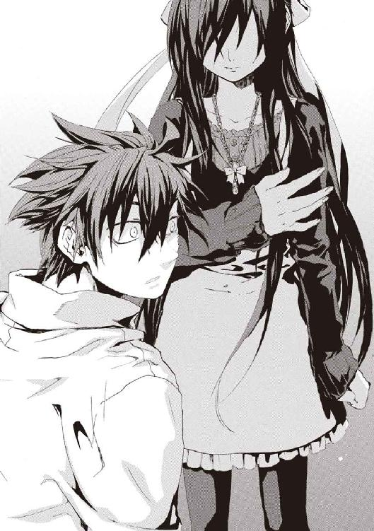
今度は目と目を見合った状態で、思い切り平手打ちされた。
「せんせは今、ダメ人間って言われてくやしいの？ それとも、子どもにひっぱたかれてシャクにさわるの？」
「そんなこと──」
三度、仁の頰に痺れるような衝撃が走った。
「それともせんせは、罰がほしいの？」
仁をやわらかな手でひっぱたくたび、少女は慈愛に目元をやさしくしてゆくのだ。
容赦なくたたかれているのに、洗われたように、胸の奥が軽かった。右の頰をたたかれたら、左の頰を差し出す気持ちがわかった気がした。
罰がほしいかほしくないかで言えば、罰はほしい。受けきれる程度に罰されて、これで償ったのだと言ってもらえたら、きっと楽になれる。
「なんて顔してるの？」
あどけないその顔を上気させ、火照った体を鎮めるように、少女がボタンを上からふたつ外した。傷一つない白い首筋がいまや露わだった。
メイゼルにとって、仁との関係が男女の愛情に近いなら、初めてのその関係を壊すのは恐いはずだ。なのに、運命を彼に預けるように、ナマの感情を叩きつけてきていた。
ひっぱたかれた頰が、切れるように痛いけれど、同時に解放されるようだ。ついばむような甘い苦痛の底に、深い信頼がある。
「もういい、おまえがつらい思いを引き受けなくてもいいんだ。俺が、今、泣けないのは、俺自身のせいだよ」
仁のひざの上には、父の遺したノートがあった。そのころ父は、息子がこんなおとなになっているとは思っていなかったはずだ。
監査の人間が姿を消して、九年間消息不明であるなら、まず生きている可能性はない。仁の両親は死んだのだ。
かわいらしくも蠱惑的な魔女は、頰を上気させて、もうわけがわからなくなっている。しがみついてきた少女の肌が、汗で蒸れていた。
「せんせもあたしのこと、思いっきりぶって。せんせとあたしにとって、とっても大事なことなの」
ちいさな魔女が、畳に膝立ちになって、まるで口づけを待つように目を閉じた。
混乱して頭がぐらぐらしながら、じっと手を見た。そして、ぞっとして震えた。少女の誘惑に乗ったら取り返しがつかなくなると確信した。
「もしもぶったら、そのあとどうなるんだ？」
「あたしがここにいるってわかるくらい、思いっきりかみつくわ。だから、せんせにも、あたしに思いっきりかみついてほしいの」
メイゼルは今、《九位》を倒して目標を見失っているのだ。だから、きっとこんなにもしあわせそうで、同時に不安そうなのだ。
子ども時代を過ごした家は、ここからやり直せとばかりにがらんとしていた。
身寄りのないふたりで、からっぽの家で、仁たちは望めばままごとのように暮らすこともできる。今、ここはままごとの果てだ。だから、たどり着いてしまえば、向こうにあるのは卒業か、でなければそれを生活にすることだ。
「この家は、俺にとってはよく知ってる場所だけど、おまえにとってははじめての場所だ」
「そうね」
「俺は、いつもそういう〝はじめての場所〟に、おまえを連れてきてた。小学校でのいろんな行事もそうだ。戦場もそうだ。ここだってそうだ。おまえがはじめて来る場所を楽しんでくれてる姿が、俺にとっての救いだったんだ」
仁は、ひざまずいたメイゼルを、できるだけやさしく抱きしめた。まだ短い腕が、仁の背中に回された。ちいさな魔女が、泣くのをこらえるように短い息を何度もついている。やわらかなその手が、震えていた。
「せんせ、この前、白雪姫の劇をやってて思ったの。悪い魔女は、悪いことをしたけど、ゼッタイ死ななきゃいけないわけじゃなかった。悪い魔女が生きてても、劇を見てた人、みんなよろこんでたわ」
傷つけ合い、その傷口をぴったり押し当てあうことで、それぞれの瘡蓋が癒着したような関係だった。だから、身動きするだけで痛くて、どこか儚い。
「あたしたち、みんなしあわせになってもいいんじゃないかしら？」
母の仇を討ったメイゼルのこころは、もう罪人の刻印に縛られてはいない。それがうれしかった。だからこそ、仁などよりもっと遠くへ行ける少女を縛りたくなかった。
「俺の役目は、新しい世界を見せることだ。だから、反対のことを言ってるように感じるかもしれないけど、おまえを俺から卒業させてやりたい。今の暮らしをあいまいに続けて、おまえの新しい生活にさせるんじゃ、夢をもらった恩返しができない。きちんと卒業させて、もっと広い世界に送り出してやりたいんだ」
「おとなと子どもだから、そうするの？」
「メイゼルと半年間いっしょに暮らしてきた俺が、おとなだとか男だとかより前に、人間としてそうしてやりたいんだ」
両親のことを戦う理由にしたくなかった。誰かを恨む理由を今さら目の前にちらつかせてくれるなと、家族のことなのに願う。仁が敵討ちをはじめれば、メイゼルも絶対に加勢しようとする。だが、このちいさな魔女をしあわせに生きさせてやると、彼は決めたのだ。
「俺はもう、おまえにいっぱいもらったんだよ。だから、俺にしてやれることを全部やり終えたい。あとは、おまえが、俺の想像もできないくらいしあわせになるところを見せてくれたら、それが一番いい」
仁とメイゼルは、何もかもちがうけれど、ひとつ似ている。
ふたりとも器用ではなく、泣くのも苦手なのだ。
「神様、俺は重い鎖にだけはなりたくない。未来に預けた俺たちの願いが、現実にやってくる未来のほうを縛ってしまう。我が儘でも、そんな結末はたまらんよ」
告悔の祭壇を、黒い鎧の騎士がにらんでいた。人生の罪を告白していたその口元はかたい。彼の立つ聖堂は巨大だ。赤い絨毯を敷いた典礼用の広い道をはさんで、二十席ずつ、それぞれ百列ほども椅子が並んでいる。
巨大なオルガンへ祈りを捧げていた騎士が、振り返った。彼の背後で、大扉が開いたからだ。
大股で入ってきたのは黄金の鎧もまばゆい、金髪の男だ。
「ユーグ！ ユーグよ、最後までひとりで行くつもりか」
黄金の騎士、《黄金の右手》ミヒャエルが、獅子のように堂々と聖堂を闊歩する。
《黒騎士》ユーグは、大聖堂の大扉を抜けてきた男を右手を挙げて制止した。
「俺はもうすぐ、第三の《聖霊騎士》として封じられる。おまえはその後の神聖騎士団を支える身だ。栄光の導き手たる《黄金の右手》よ、俺のことなんざ忘れて、教主と信徒の間に立つことのほうを心配しろよ」
ミヒャエルは、そのことばを無視してユーグに近づいてゆく。静謐を尊ぶ聖堂にしかけられた、埃のようにちいさな魔法構造体の群れが、鎧が鳴る音を消していた。
「《聖霊騎士》の儀式は、封じられる騎士の命を奪う。《極点》を目指し、十五の完全索引を持ち帰った仲間が死のうとしているのだ。せめて別れを惜しませてくれぬか」
彼らは《はじまりの十五騎士》と呼ばれる神音大系の英雄だ。索引型魔術の到達点──《極点》を目指して百人で旅立ち、十五人の生存者がそれぞれ強力無比な魔法を持ち帰った。これらの魔法が、発足間もない神聖騎士団に、神音大系の権力を握らせた。
「俺たちが《極点》を目指したことは、本当に、未来のためになると思うか？」
「御身は疑い深い男であるな」
「〝未来〟からの啓示の〝声〟に導かれたがゆえ、俺たちは《極点》に到達できた。〝啓示者〟たちの魔法こそが、《協会》を見渡しても最強の魔法秩序かもしれん。あの魔法に《神》が降臨すれば、すべてを支配するのかもしれん。だが、〝未来〟から過去を書き換えようとしてる連中を、人を救う《神》の御使いと信じていいもんかね？」
ユーグは軽く唇だけで笑みを作った。だが、その視線は鋭いままだ。
「忘れんなよ。〝未来〟なんぞ俺たちにはわかってないんだ。〝未来〟を知ってるのは《神》の使いを名乗るあの〝声〟だけだ」
ミヒャエルが、そんな彼に苦笑した。
「こうも疑い深い《聖霊騎士》では、後代の騎士は御身を召還するのに相当の覚悟を求められることになろうな。御身こそ、力と英知で巡礼を導いた英雄だというのに、そうも不信ばかり煽るのでは異端あつかいされかねんぞ」
「ミヒャエル、俺たちは、何千年も経った後には、立派な巡礼者だってことになってるだろう。だがな、どこが立派だ？ 俺たちが《極点》に向かったのは、神音魔術に寿命を超える不死がないからだ。俺たちは、永遠に生き続けたくて探索に出た。事実はそうだ」
神音大系は、《協会》の最高意志たる《三十六宮》の一角、それも白宮二位という高位を占める。だが、高度に発達しても、自然秩序の性質的に手に入らない奇蹟はある。ユーグたちは強欲と嫉妬に突き動かされて、探索行を成し遂げたのだ。
「俺は忘れん。《聖霊騎士》の秘術を、神音世界は見たがった。儀式の最後に、騎士に封ぜられる者が死なねばならんと知りながら、最高位魔導師たちは生け贄を求めた」
発展した魔法文明である神音世界は豊かで、聖堂は荘厳だ。だが、その英雄たちの顔には深い苦しみが刻まれていた。
「〝啓示者〟たちは、人間を生け贄にする。だが、姿すら見せずに、導きの〝声〟で無限に他人の犠牲を求めるのは、本当に〝聖なるもの〟なのか？」
＊
上級聖騎士リュリュ・メルルは、唇を嚙んだ。ゆっくりと目を開ける。
「伝承を頼んだのは魔法だけのはずです」
リュリュは、まだ力の足りない騎士だ。だから、一線級の魔法使いと戦うための力を手に入れるべく、《聖霊騎士》である《黒騎士》ユーグに魔法の教授を頼んだのだ。
《黒騎士》ユーグを連れて帰還して以来、彼女の立場は微妙だ。《はじまりの十五騎士》であるユーグが、彼自身の意思でリュリュとともにいることを選んだからだ。
《はじまりの十五騎士》に認められることは、聖騎士将軍に任命される第一条件だ。聖騎士将軍とは神聖騎士団の精神の体現者だ。だからこそ、騎士団の始祖たる〝彼ら〟と同じ志を抱いていることが求められる。機械化聖騎士師団でのリュリュの直接の上官である聖騎士将軍、《至高の人》アンゼロッタも、《黄金の右手》ミヒャエルの推挙でその地位についたのだ。
〈訓練では間に合わないからって横着しようとしたのは、お嬢ちゃんだ。それ相応の危険は覚悟するもんだ〉
聖霊騎士の肉体は、一般的に圧縮した空気で作られる。魔法生物化した過去の英雄が、手持ちぶさたそうに長槍をくるりと回した。《黒騎士》ユーグは強大な魔法使いだ。まだ十六歳で経験も乏しい彼女に扱いきれるものではない。
「永遠の導き手よ、あなたは、わたしに魔法を伝えることが不満なのですか」
前線基地内の簡易聖堂は、さっき伝達された記憶の大聖堂とは比べようもなく簡素だ。彼女は、公館本館を陥落させた勝利の日から、一ヶ月以上もこの世界に戻ってこられなかった。そして、その後の状況が激変したせいで、まだ戦闘に出ることを許されていない。
「わたしは、《聖霊騎士》と契約を許される力を持ってはいません。それでも、倉本きずなとの戦闘で多くの前線指揮官を失った機械化聖騎士師団には、貴重な戦力のはずです」
騎士団の創設期を支えた偉人に八つ当たりしてしまうほど、焦っていた。
リュリュの隣には、半透明の彼女の似姿がある。神音大系の高位魔導師が使う自分のコピー──《ゆらぎの化身》だ。
彼女の《化身》の表面は、水面に水滴を落としたようにさざめいている。この《ゆらぎの化身》が、儀式によって本人以外からでも召還可能になった状態が《聖霊騎士》だ。これらは同種の存在だから、魔法で互いを共振させられる。こうして《聖霊騎士》から《ゆらぎの化身》に知識や技術を伝達し、間接的にリュリュへと《黒騎士》の魔法を移植していたのだ。
〈決して滅びない教師は、〝未来〟に文化と技術を伝えるにはいいもんだ。けど、文化を伝えるってのは、生きた歴史を教えてやることなんじゃないかねぇ〉
聖霊騎士として保存されるのが過去の英雄や天才の《ゆらぎの化身》であることは、戦力だけではなく、理想の教師たることを期待してでもある。歴史を彩った巨星たる才人たちが《聖霊騎士》に叙勲されていることで、騎士たちは召還すれば彼らに師事できる。リュリュたちはこうして、魔法と、その裏側に眠る生きた文化史や技術史を受け継ぐのだ。
「だからといって、後に続く騎士たちを惑わせる人物が《聖霊騎士》に叙勲されたとは、信じられません」
〈そのためにNo.0003に滑り込んだのさ。組織がまだ固まってない時期でもなきゃ、選ばれるわけないだろ。騎士団がうさん臭かったって事実を〝未来〟に伝えるために、命まで捨ててやったんだぜ〉
彼女も歴史くらいは学んでいた。騎士団の黎明期である《はじまりの十五騎士》の時代には、神音大系世界に反騎士団派も存在した。一万年以上前、それをねじ伏せ、《協会》から独立するための強い団結を作るきっかけとなったのが、《極点》より彼らが持ち帰った《聖霊騎士》の秘術だ。
彼女は、まさに神聖騎士団の草創期に行われた対話の記憶を見たのだ。
「あなたに助けられて、わたしは魔法施設の崩落から生還することができました。今もまだ、わたしを教え導こうとしていただいていることは、感謝もしましょう。ですが──」
リュリュは、崩壊する《幻影城》でとっさにつかんだ神音楽器から、この《黒騎士》を実体化させた。それはすべてのはじまり、バベル再演を企てた倉本慈雄の死体が握っていた楽器だ。
「倉本慈雄──マルク・フェルゼーの魂を腐らせたのも、あなたなのでしょう」
騎士たちへの助力を果たせば体を分解することが多い《聖霊騎士》の通例を破って、ユーグは《幻影城》脱出後も彼女のそばで活動を続けている。
〈まるで悪人を責めるようだな、お嬢ちゃん〉
彼女は聖騎士として、神意をかかげて正義を為す生を選んだ。尊敬できる人もいた。
「あなたが人を惑わせたことから、めぐりめぐって、神の道を見失った人がいるのです。その人は誰よりも優しく神意に透明な、次代の神聖騎士団を担うべきかたでした」
変わってしまったエレオノールの姿が脳裏をよぎって、悔しさがこみ上げる。
〈人を救う《神》は降臨したぜ。神意が果たされて、まだ足りないと思うのは人の欲じゃないのか〉
「大願成ったのだから、大事に思った人でも惜しむなと言うのですか」
〈俺は疑いの騎士だ。......〝未来〟がもし〝声〟たちの策謀でねじ曲げられようが、最初期の《聖霊騎士》なら、分岐がはじまる前の、歴史のはじまりの点に居座れる。歴史がはじまったとき、考え悩んだ疑いにおまえさんたちを引き戻してやるために、俺はここにいるんだ、お嬢ちゃん〉
リュリュが魔法の伝授を中断してしまってから、《黒騎士》との間に微妙な距離感が空いていた。その気持ちの空白を埋めるように、聖霊騎士が槍の穂先を差し出した。
〈我ら、愚かな人なれば、神の心を知らず。ただ敬虔に祈りを積み、苦悩に斃れ、至高の意志を求むる旅人たり〉
それは神聖騎士団に伝わる旅立ちの聖句だ。おおきな旅の前にはこの聖句を唱えるのが聖騎士の習慣だから、彼女も剣を《黒騎士》の槍と重ねて、続いた。
「祈りを手わたし、あやまちを受け継ぎ、我らついに神意をかいま見たり。なれば人の身を捧げるに足る。そを守る、聖騎士の誓願を立つる」
この《約束の地》で、奇跡に見捨てられているのに祈り続ける原住民たちに出会い、リュリュたちの先祖はその敬虔な姿に神意を見た。旅立ちの聖句は、神聖騎士団の歴史の歌でもある。だからこそ同じ祈りを唱えていると、時代や立場を超える土台を共有していると信じてよいのかと、こころが揺れる。
〈神意、生命に宿れり〉
「神意、正義を導けり」
彼女と聖霊騎士の声が重なる。
「正義に一命、捧げし一刀。すなわち〝我ら〟なれば、神意、我らが行く手にあり」
それは、仲間とともに死地へ向かうこの旅そのものが、神への祈りであることを確かめ合う聖句だ。騎士団草創期、まさに《黒騎士》たちはじまりの十五騎士が《極点》探索に向かうとき、最初に唱えられたと言われている。
リュリュは、かつてエレオノールがこの聖句の一部を変えたことを思い出した。
「──どうして〝正義〟なのですか？」
〈迷うところのない聖句だと思うが。この時代では、解釈が揺れているのか〉
「神意が、生命に宿り、正義を導くものなら、我々が剣を捧げるのは正義ではなく〝生命〟でもあり得たのかもしれないと......」
《神》は降臨した。神聖騎士団はこれから《約束の地》を救う事業をはじめる。だからこそ、人間として彼女たちが背負うものはとてつもなく重い。
リュリュの肩には、未来がのしかかっている。彼女たち神聖騎士団には、逃れようのない、この世界を変えてしまった責任がある。
「答えてくれないんですか」
苛立ち揺れる彼女の姿に、《黒騎士》が得たりとうなずいた。
〈若い騎士は、自分で迷うものさ。不断の問いかけに俺たちは磨かれる〉
神意は果たされたというのに迷いを断てないことが、不甲斐なかった。リュリュたちは、彼女にとっての仲間やエレオノールとの別れのような、取り返しのつかない犠牲を足場に戦っている。なのに歴史の起点であるはじまりの十五騎士は、疑えと彼女をそそのかしている。戦いを間違いだと否定されているかのようだ。
リュリュが口をつぐんでいると、聖堂は静まりかえって物音すら失った。
彼女は締め付けるように苦しい胸を拳で押さえていた。人間の行いは誤るからこそ、神意に従わねばならないのだと、祈りをこころの内より掘り起こす。
「神よ、神よ......。疑うこころより守りたまえ」
この世には人間と神と戦いがある。正しいのは、自然秩序そのものたる神だけだ。神音大系は、人と自然秩序を比べて、自然に絶対の正しさを見出す。これは現在の《協会》の「魔法使いは神と世界に対峙するものだ」という魔法使い観の、最古の様式を守るものだとも言われる。
神聖騎士団の時計が、長い時間止まり過ぎている気がした。神音大系がはじめて永遠を手に入れたそのとき、祈りの名の下に何かがひずんだように思えた。
リュリュは寒気を覚えて、立ちつくす。神にこころを預けようとするほど、孤独に重圧に耐えねばならないかのようだったからだ。
バベル再演事件を企てた倉本慈雄をおそらく止めなかった《聖霊騎士》のことばなのに、彼女は軽く聞き流せない。
〈〝未来〟の騎士よ。積み重ねられた祈りは、その肩に重すぎる鎖になっちゃいないか？〉
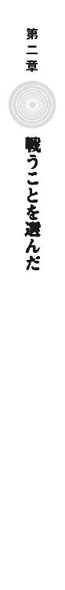
仁は、東京に戻ってきたとき、メイゼルを文化祭の劇に出させてやれれば御の字だと思っていた。それほど事態は流動的で、東京は激戦地になる可能性が高かったからだ。
なのに、二週間経っても状況は大きく動かず、仁たちはマンスリーマンションに仮住まいを続けていた。
魔法使いが生活に入り込んできたことによる摩擦は、日々大きくなっている。彼ら異世界人は神話に描かれた神の原型であるのに、《悪鬼》の人口が増えるにつれて日陰に追いやられてきた。その鬱憤を晴らすように、世界のあちこちを見物して回っているのだ。
異世界人たちは日増しに大胆になりつつある。彼らが〝本当の歴史〟を語り出したことで、宗教関係者との文化摩擦はひどい状態だ。再演大系が魔法使いたちに干渉しているのでなければ、血なまぐさい事件が相当起こっているはずだった。
仁はといえば、アトランチス市民代表である王子護ハウゼンとの定期連絡を行っている以外は、ほとんど無職同然だ。
「こうも時間が空くのは予想外だったな。もっと早手回しに状況が変わると思ってたよ」
結局《幻影城》のきずなからは、半月間一度も連絡は来ていない。向こうに電波は届かないから、アトランチスの隣に浮かんでいる魔法遺物にそろそろ直接足を運ぶ必要がありそうだった。
刻印魔導師集団《鬼火衆》の筆頭である虎坂井レイが声をかけてきた。
「結局、王子護は何をしてるんですかい」
虎坂井は高校に通っているから、御陵甲小学校で校務員はしていない。この世界の地理にくわしいわけではないため、教科書の地図帳をちゃぶ台に広げていた。
「向こうは今シンガポールだと。ワイズマン警備調査会社は、アトランチスの件で疑われてるから、アメリカ政府から中国相手に工作しろって依頼されて断れないらしい。あいつら、西海岸の核攻撃の前に、資産をアメリカ国外に移してたっぽいしなあ」
王子護たちの本拠の移転先はシンガポールだ。だが、事態はワイズマンをこの戦いの真の中心であるきずなと舞花のそばから放り出すように、シンガポール付近で激化しだしたそうだ。
仁は、指で指し示すだけだとわかりづらいので、地図上の台湾島と沖縄本島を直接鉛筆で囲った。
「中国が、アメリカと決戦になるのを嫌がって、台湾を占領しなかったんだな。そのかわり東南アジアに、海運路を守る軍事力として、アメリカ海軍が動けない穴埋めを持ちかけたんだ」
台湾を攻めようにも、目と鼻の先にある沖縄の米軍基地が、無傷で生きている。それならと中国が軍事的な影響力と経済力を、東南アジアに押し広げることはまだ妥当な線ではあった。仁は、鉛筆で、矢印を中国南部の海岸から南シナ海へ向けて書き込んだ。
「そのヘンのこたぁ、この世界の国の政治の話でしょう。王子護のダンナたちが、大忙しになるもんですかね」
「どこの国も、魔法消去が見る影もないくらい減衰してるのには気づいてる。だから、信用できる連中は自国内で魔法使いが暴れたときのために手元に温存しておいて、情勢のうさんくさい案件は、できれば外注の業者にやらせたいんだよ。ワイズマンは、まあ、うってつけだからな」
この世界の軍隊は、それぞれの国境線と経済を守るので手一杯だ。だから、舞花ときずなの決戦は、魔法使いたちを中心に行われる。
「ワイズマンは、今でも目をつけられているけど、それと事業を潰す口実を与えるかは別問題だ。王子護たちは会社を潰されると先行者利益がなくなるから、正念場だな」
現状はまだ激変に至っていない。《幻影城》からきずなが動いていないからだ。
「王子護のダンナは、再演魔導師同士のドンパチより会社のほうが大事と。それはわかりやしたが、だからって、ぼくらまでずっと待ってて、状況がよくなるわけじゃねえでしょう」
虎坂井レイは、魔法のないこの世界に憧れて、刻印魔導師として墜とされるために罪を犯した変わり種だ。いつも笑い顔だが、眼光は罪人らしく暗く鋭い。
「あとは《幻影城》に話をしに行くことなんだろうな」
仁たちは、ただの人間であり超人ではない。歴史のうねりを単身で止める力などない。ただし、命を掛札にして大勝負に参加する権利だけはもらっている。変化が炸裂するそのとき、大渦の中心に飛び込むことで何かができるかもしれない。
元々この世界の人間ではない虎坂井には、話が見えにくくなっている様子だった。
「大将はこの状態で待ってて不安じゃないんですかい」
「要するにだ、勝負の中心は魔法使いだけに絞られてるから、勝敗は、舞花ときずな、ふたりの再演魔導師のどちらが生き残るかで決まる。消去が弱まって、魔法消去者はもう大火力の高位魔導師にたぶん押し切られるからな。そういう将棋が、今、再演魔導師が指し手で、俺たちみんなをコマにして行われてるわけだ」
虎坂井は、身の振り方の話となると想像力が今ひとつはたらかない。
「ぼくらは結局何すりゃいいんすか」
「まあ聞け。つまり、今、ひとりでひとつの陣営を運営できる巨大戦力と言える魔法使いがふたりいるわけだ。倉本きずなと、舞花だな」
「食卓の上に、ちぎった新聞紙置くのはビンボくさいす」
「それじゃ金を使うか。......つまり、きずなは《神人》だったってことは、たぶん魔法使いとしては一番強いんだろう。一万円を置く。で、きずなを《幻影城》で仕留めきれなかったってことは、舞花は再演魔導師としての実力は一段落ちるのかもな。こっちの端に舞花ってことで五千円札を置く。で、舞花には神聖騎士団がついてて、こいつらも五千円札くらいの役割を果たしてるだろう。それで、きずなと舞花のふたつの陣営が、合計一万円同士で、だいたい拮抗してるわけだ」
話が突然なまぐさくなったが、数値の大小が出るせいで分析らしくなった気がした。仁は財布からさらに千円札を一枚出した。
「ワイズマンと王子護とアトランチスは、全部足せば千円札一枚ぶんくらいの存在感はあるだろ。舞花ときずなの間に置く。王子護たちは、カネでどうとでも転ぶきずなにも舞花にも扱いにくいコマだ。日本政府と魔導師公館は、......これもまとめて千円札にしとこう」
「《協会》はどうするんすか？」
「〝未来〟の再演魔導師に、今も操られてるな。でも、《協会》は再演魔導師には関わりたくない、と。まだ賭に参加しないやつを数に入れなくてもいいだろう。《連合》とアリーセ・バンシュタインも保留だ。舞花ときずなのどっちかなら、アリーセは性格を知ってるきずなに肩入れするはずだけど、アテにはできん」
神聖騎士団と《協会》と合わせて三大勢力と称される魔法使い集団、《連合》は、再演大系に深い恨みを抱いている。再演の《神》が降臨して怒り狂っているだろう評議長アリーセが、どう反応するかは誰にもわからない。
つまりは当面、《公館》とワイズマンの動向が、再演魔導師同士の戦いを左右することになる。
「大将は、この並びだと存在感は百円くらいすか」
仁は、妥当なところだと、小銭入れから百円玉を置く。
「おまえと《鬼火衆》は、だいたい五十円と、ひとりにつき十円玉一枚って感じでいいか？」
「そうすね。......でも、関係者は他にもいるっしょう。まずエレオノール・ナガンは、......倉本きずなが生きてるのは、半分くらいあの女のおかげすね。......大将が百円玉なら、五百円玉を置いときやすか」
小銭入れを見た。五百円玉が入っていなかった。
「エレオノールを百円玉にして、きずなの一万円のすぐそばに置こう。俺のほうを五十円に下げたら雰囲気に合う」
「じゃあ、ぼくは十円玉で。《鬼火衆》のみんなは五円玉ですか」
仁は、引っかかる要素を逐一あげてゆくことにした。
「《雷神》は生きてるし、動けないわけじゃない。あいつは数に入れなきゃだな」
「それだと《雷神》を百円玉にして、......エレオノールは五十円玉、大将十円ですね」
一万円札のきずなと、五千円札の舞花、神聖騎士団と比べて、あまりにも仁の十円玉が安っぽかった。お札のうちに入れるのは厚かましいにしても、一行を率いるリーダーとして、五十円玉くらいにしないとメンツが立たない気がした。
「相談だが、俺が安くなるにしても、存在感が十円って寂しくないか」
「ぼくら五円と一円ですよ」
ちゃぶ台の上に影が差した。
「せんせたち、おかねをオモチャにしてあそぶのって、たのしい？」
ちいさな魔女が、冷たい目で男たちを見下ろしていた。メイゼルがいつの間にか帰ってきていたのだ。
「......いや、ごめん」
「せんせ、ごめんはいいから、ちゃっちゃとおかね片付けて」
仁は、広げてしまったお金を財布に戻した。十円玉以下をまとめてかき集めようとして、彼らの命がまさにこの小額コインだったことを思い出す。ぞんざいに扱いたくなくて、一枚ずつ小銭入れに入れた。
「大将......。そういうとこ、十円玉、似合ってやす」
当たり前のようにぱたぱたスリッパを鳴らして、あどけない魔女が台所へ向かう。冬なのに短いスカートな後ろ姿を見送り、仁はふと考えた。まるで自分が子どもに食べさせてもらっているヒモのようだった。
「いや、メイゼル、宿題とかあるだろ。メシの仕度くらい俺がやるからいいぞ」
結局のところ、きずな対舞花の構図の中で、仁は十円玉に過ぎないのだ。仁たちがつけ込める事件が起こらなければ、動きが取れない。あのお札と硬貨を広げた配置図は、舞花と聖騎士が待ちに入った場合、きずなが動かない限り他の勢力では手出しできないことも示している。
ゆっくりとした時間が持てているはずなのに、ひどい閉塞感だった。
天才とまで称された少女魔導師は、学校の勉強でも優秀だった。
「せんせ、宿題なら、もう休み時間のあいだにおわらせちゃったわ」
メイゼルがいそいそと、白菜を野菜室から取り出して流しへ抱えてゆく。今日は鍋物になるようだった。
仁は、材料を切るのに三十分くらいかかると見て、携帯電話をポケットから出した。
「電話かけてくるぞ。魔導師公館とつなぎをとる」
「そりゃ節操ねえんじゃないですか。ぼくら、今、ワイズマンのカネでメシ喰ってるんすよ」
仁はみずから食わせ物であろうとしている。それを期待して、王子護も、彼に東京行きと現地での自由裁量を許したのだと信じた。
「状況を整理しただろ。きずなと舞花に和解はない。俺たちの立ち位置は、ワイズマンと深くかかわる場所にいるただの十円玉だ。だったら接触するのは魔導師公館だ。〝未来〟の再演魔導師は、時間を与えたら、ワイズマンと《公館》を衝突させて共食いさせにかかるしな」
「王子護は大将を信用しちゃいやせんぜ。鼻が利きすぎて、犬小屋を勝手に抜けて獲物を殺っちまう猟犬なんざ、名犬たぁ言いやせん。いつか飼ってる猟師本人から、不気味がられて殺されやすぜ」
「ちがうわ」
台所から、かわいらしい声がした。メイゼルが大根とおろし金をもってやってきた。手が空いている人間が大根おろしを作っておけということらしい。
「せんせひとりじゃ信用できなくても、せんせがあたしを裏切らないってことも、みんなに知られてるのよ。だから、あたしといっしょにいるせんせとだったら、安心しておつきあいできるでしょ」
仁にはぐうの音も出なかった。本当にそのとおりの理由で、ワイズマンからの協力が深くなっているからだ。
まだ子どもの魔女が、胸に手をあてて言った。
「ダメ人間だから生きてけるってことは、せんせのお仕事はダメ人間だってことだと思うの。だから、せんせは、どんどんダメになっていいのよ」
少女は腹が据わったように堂々としていた。先日ビンタされてからだから、それがきっかけかもしれないし、ひっぱたいてと乞われて応えなかったせいかもしれない。
「おまえ、なんか俺に対して、微妙に遠慮がなくなってきてないか」
仁のささやかな抵抗に少女が返した笑顔は、はかなさを脱ぎ捨てて、自信にあふれていた。
「これは、おたがいのことをわかりあってきたっていうのよ、せんせ」
ちいさな魔女の成長が、ひどくまぶしかった。
魔導師公館に連絡すると、話はすんなりと進んだ。
仁は、《九位》を逮捕するとき、アトランチスの警備担当者を名乗った。だから、日本に入るときも、アトランチスの治安関係者が視察に来たという名目にしていたのだ。彼は自分の名刺を持って警察庁を訪れて、同じ合同庁舎に間借りしている《公館》へ足を運ぶ。
「アラクネは、何か吐いたのか？」
仁は、取調室を映しているカメラの映像を、監視室から見ていた。《公館》から仕事の話を持ちかけられたが、彼のほうが受けるかどうかを保留しているからだ。《公館》にしてみれば、そんな中途半端な立ち位置の相手をアラクネに接触などさせられない。
モニタと機器だらけの部屋が、刺すような緊張感に包まれていた。取調室や廊下や非常階段入り口を常時モニタする画面が並ぶ監視室に、京香が来ていた。短い猶予期間をもらった仁たちとちがって、この激変のせいで役所は大忙しだったようだ。
「まったく話になりません。麻薬中毒も悪い方向に作用して、疑心暗鬼になっています。利用価値がなくなったら自分は殺されると疑っているのかもしれません」
「あー、まー、ひどい勘違いだな」
旧《公館》時代は、利用価値のない魔法使いを《協会》に引き渡すことがままあったから、間接的な処刑を警戒されて当然ではあった。
「俺に頼みたい仕事ってのは何だ？」
仁は再演干渉の影響力を嫌って王子護に判断を仰がず、勝手に事態を進めていることになる。これは裏切りとみなされかねない綱渡りだ。
「アラクネをアトランチスへ引き渡しますので、警護してください」
彼女の口調の硬さに、仁は、ここが盗聴されていることを察した。
「アトランチスから日本にそんな要請が行ったなんて、俺は聞いてないぞ」
「それはそうでしょう。アトランチス市民政府からは、我々は要請を受けていません」
「だったら、なんでだ？」
彼には、アトランチスにもワイズマンにも心情としての忠誠心はない。だが、責任から自由でもない。
「内密に、俺個人にアラクネをどうこうしろって話なら、受けられない。アトランチス側に話を通していい内容なら、力になれるよう最大限の努力をする」
だが、彼女の話はおそろしく冷酷で不謹慎だ。
「アラクネは、そもそも神聖騎士団から日本に引き渡されています。この事実が重要な意味を持つと、魔導師公館は考えています。つまり、武原舞花と〝未来の再演魔導師〟たちの援助を受けている以上、聖騎士たちは、〝未来〟に世界がどうなるか承知したうえで、アラクネを無償で手放したということです。最初は、アラクネが《九位》裁判の重要な証人になると考えていましたが、逮捕から二週間経ち、我々は彼女の価値を考え直しました」
「アラクネ自体が実はさっさと手放すべき危険物だとか、そういう可能性か。それとも、神聖騎士団にとっては、手元に置いても無価値だと知っていた──」
仁は不謹慎に思えて、ことばを止めた。核攻撃のけじめをつける《九位》の裁判そのものを、今後もっとひどい破滅が起こって、行えなくなる可能性もある。
神意のために聖騎士たちがどのくらい非情になるか、京香もよく知っていた。
「アラクネの正確な価値は、我々もそれなりに手を尽くしましたが、彼女が口を開く見込みが薄い以上は未知数です。ただ、聖騎士たちは彼女の身柄を動かすことで、《公館》に恩を売り、我々と神聖騎士団がおおっぴらに敵対してはいないという空気を作りました。要するに、《公館》としても、中身が見られない宝箱は、もう〝中身が何かという期待〟をひっくるめた値段でアトランチスと取引したいのです」
京香は黙秘するアラクネの情報価値を見切って、損切りに入ったのだ。現状は、アラクネという、導火線に火の付いた爆弾を押しつけあう爆弾ゲームかもしれない。
「それは、《公館》から、アトランチスに責任を押しつけるってことか？」
「アラクネの身柄は、最終的には、《九位》による核攻撃を受けたアメリカへ渡されるのが道理です。ですが、日本から直接渡されても、アトランチスからでも、魔導師公館としては問題ないと思っています」
魔導師公館も、アトランチスとの関係をつくろうとしていた。
そして仁は、アラクネの運命を決めているというのに、本人と話すらしていないことに思い至った。個人の命になど関心もなく回り続ける社会に、かつて仁は理不尽を感じていた。なのに今は加害者側にいる。
京香も踏みつぶす側で、あれほど苦しんでいた舞花ですらそうだ。痛みを背負った彼らが、まるで復讐するように、不幸になる人間を自分の手で選んでいる。
メイゼルの文化祭の劇を思い出そうとした。あれは、どういうふうにして都合のよいハッピーエンドになったのだろう。
「......武原さん。どうかしましたか？」
職場では立場がちがいすぎるから、尋ねる京香は他人行儀だ。
「魔導師公館は、警察と連携するようになって、こういうこととは距離を置いたんじゃないのか？」
言ってしまってから恥ずかしくなった。若さをさらしてしまって、血が上って熱くなった。
「そういうことばを、我々の前で〝魔法使い〟のかたに口にさせるのも、再演魔術の干渉でしょう。再演大系は、《九位》を裁く法廷を本当は開かせたくないのでしょうし」
噓だ。再演魔術はそもそも魔法消去に弱い魔法で、この世界の住民だけは直接操作できないし、そもそも仁は魔法使いではない。ただ、幼なじみの気づかいがありがたかった。
「この世界で従来行われている通りに、裁判が進むだけだろ。再演大系にとっては、そこまでイヤなものか？」
「世界中で、《神》が降臨したという日から、魔法使いによる重犯罪がほとんどなくなったことをご存じですか。魔導師公館は、これを〝未来〟の再演魔導師たちが、制御できない事態を嫌がっているためだと考えています。彼らはいかさまに慣れすぎて、『人間の意志と野蛮さと、正面から勝負するのがこわい』のです。だから、勝負は《九位》裁判の開廷前かと」
京香の闘志にあてられて、仁も胸にこみあげるものがあった。だからこそ、こんな意志の裏に再演大系の操り糸を疑わねばならない魔法使いたちを気の毒に思った。
「王子護とつなぎをとるよ。再演大系が仕掛けを回すより早く、《九位》裁判に入れるように努力しよう。自分と他人の意志を疑わなきゃならないのは、たまったもんじゃない」
魔法使いたちにまでお節介を焼こうとしているような口上だ。そうする理由の根にあのちいさな魔女との関係があると思うと、自己矛盾が深まっているのに、嫌ではなかった。
長い旅路を歩いてきてしまった幼なじみと、顔を合わせる。
「俺たちは、試されているみたいだと思わないか」
「それが、どうかしましたか」
「試されて出てくる答えがこれだっていうのは、どうなんだろうな」
仁たちは、それぞれおとなになる前、傷つけられた。だが、だからといって、世界から除き得ない痛みや苦しみを振りまく役目につく理由も、正当性もないのだ。巨大な変革のときに、彼らはやさしい答えを出せない。
京香の視線が、わずかに揺れた。実家の床板の下にあった父の日誌にかかわる話だと、幼なじみは思っているのだ。仁は、慌てて言いたした。
「俺たちの親とか、そういうことは関係ないんだ。倉本慈雄も、ジェルヴェーヌも、グレンも、王子護も、《雷神》や《九位》もそうだった。魔法使いと戦ってきて思うんだよ。結局、俺たちが命をかけられるのは、自分が選んできた答えに対してだけだ」
仁の敵たちは、世界が不満で、それを変えるために、我が身と運命を弾丸に世界を殺そうとした。
そして、《神》が降臨して、今は仁たちが旧世界の遺物に追いやられている。
「今度は、俺たちが、自分自身であるために命を〝使う〟番なのかもしれない。けど、もしそうなら俺たちが戦う理由は、これでいいのか」
口にして、ひどく不吉な予感がした。
仁は、結局アラクネ本人とは対面することなく合同庁舎を出た。
血の通った仕事とはとても言えたものではない。
敵であれば躊躇なく殺してきたから、〝明確に敵だった〟アラクネに今さら情をわかせることができなかったのだ。
庁舎の外は霞ヶ関の官庁街だ。国の正面玄関にあたる、高いビルと広々とした道路と皇居の景観が、背筋を伸ばさせる。
都市の風景は、住民の需要に適応する生き物のようなものだ。だから、《神》と奇蹟に依存するように生活が変われば、仁の前にある東京の街も、いつか今の姿を脱ぎ捨てる。
仁は、手近な壁を背にして足を止めた。そして周囲に最低限度の注意を払いつつ、ジャケットの内ポケットから携帯電話を取り出す。
王子護の番号にかけると、三回めの呼び出し音が切れるころ通話が繫がった。
〈ジン、《公館》の用件は何でしタカ？〉
うさん臭い片言の日本語が、電話から聞こえてきた。背景は、どう聞いても銃声にしか聞こえない破裂音が断続的に響いていた。
「アラクネの警護の依頼だ。正確には、アラクネの身柄を、リスクと責任込みでアトランチスにくれるって話になるな」
今日、《公館》に呼ばれて、いい話なら仕事を受けるつもりだと、あらかじめ連絡をしてはいたのだ。
「例のアレはどうなんだ？ 状況は変化ないか」
アトランチスは、核ミサイル発射口を証拠隠滅したいのだが、再演大系の干渉でそれを妨害されている。ワイズマンの活動は、このアキレス腱のせいで縛られたままだ。
〈干渉されて、モーまったく進みまセン。査察が入ったラ、アトランチスは物証を押さえられて終わりデス。だから、......マア、アラクネは〝買い〟デス〉
「身柄を受け取るのか。聖騎士が《公館》をハメるつもりでアラクネを放出したなら、同じ罠はワイズマンにもたぶん有効だ。連中は仕掛けてくるぞ」
〈《公館》とのつなぎハ、実態をともなうカタチでかためマス。お仕事、受けちゃってくだサイ〉
王子護が即決した。
〈アトランチスまでの護送になるでショウ。手段はまかせマス。ただ、戦力はワイズマンからは出せまセン。ジンの戦闘に巻き込まれたラ、自分でなんとかできる高位魔導師以外は死ぬだけデスかラ〉
あっさり方針が決まってしまった。仁はこれから庁舎に戻ってアラクネを回収する前に、ひとつ聞いておこうと思った。
「おまえ、俺の父親のこと、知ってるか？」
王子護は、まさに両親が《公館》にいた時期、現役の専任係官だった。
〈彼なら知ってマスヨ。魔導師公館の監査でしタ〉
「そのことをほかに誰が知っていたか？」
〈仁の両親が消えた頃の専任係官ナラ、全員知っていましタ。そりゃ、専任係官のまとめ役の親友が監査なんですカラ〉
いけしゃあしゃあと王子護が返した。仁は、当時の専任係官が誰だったか、知識としては知っている。東京某所の廟には、死んだ専任係官全員の名の札が掛けられている。
「もうひとつ聞くが、『おまえのころの専任係官は全員知っていた』ってことを、殉職する前の舞花も知ってたんだな」
妹は、母が刻印魔導師だったことを知っていた。だったら、両親の死も専任係官時代に察していたのかもしれない。犯人にもあたりがついていて、だから舞花は死に至った危険な単独偵察の任を下されたのかもしれない。
〈君は知らないでショウが、専任係官だったころのマイカは、ずっとピリピリしてマシたヨ。警戒をあらわにしてマシたから、いっつも危険な単独行動デモ、だれも不自然になんて思いませんデシタ〉
「そうか、舞花は苦労してたんだな」
妹が〝未来〟の再演魔導師と取引したことに、兄である仁は、腑に落ちる部分があった。再演魔導師は、〝過去〟を覗くことができる。両親が失踪した九年前、専任係官は九人いたが、《鬼火》東郷を除いて全員魔法使いだった。舞花は、両親を殺した犯人を、再演魔術で知ることができると思ったのかもしれない。
王子護は、仁に復讐するのかを尋ねなかった。
ただ、この最初の先生が、仁の両親を殺したのは誰か知っていると直感した。この男は、感情を排して自分を《自分自身のための道具》にすることを、仁に教えたのだ。
最悪の下には、なお暗いものがいつだって広がっている。そして、そういう現実に立ち向かうのはいつも自分自身だ。
自分がやってきたことである以上、始末をつけるのも最後には自分自身だ。
身柄引き受けの意志を伝えてから、それが実行されるまで、三日しかかからなかった。仁にとってはこの短期間で話がついたことが驚きだった。
ただ、手続きがスムーズだったぶん、受け渡し手段は「この世界の流儀」に近いものになった。魔法的転移での移送を認めてもらえなかったのだ。奇蹟に対する根強い疑念から「きちんと引き渡されたと言えるのか判別できない」という疑惑を日本政府に持たれたのだ。
だから午前中から、仁は、アラクネを護送するヘリコプターに乗っていた。東京からアトランチスまでは、直線距離で四百キロメートルほどで、充分に航続距離内だったためだ。船舶での移送は、アトランチスの上甲板が、海面と接する喫水線から百メートル近い高さにあるため危険と判断されたのだ。
「そういえば、魔導師公館の人間がアトランチスに立つのは、今回がはじめてではないかね」
《公館》嘱託の魔法学者である溝呂木京也は、ヘリの助手席ではしゃいでいる。
仁は、五人乗りのヘリの後部座席で、ため息をついた。
「溝呂木、なんでこの人選なんだ」
魔導師公館の専任係官、《茨姫》オルガ・ゼーマンが、仁の左隣に座っていた。波打つ栗色の長い髪と上品なおもざしの、貴婦人のような女性だ。だが、今日は目元が疲れていた。目の下のくまも、荒れた肌も、化粧で隠しきれていない。
「妥当だと思うがね。彼女は痛覚と触覚で魔法を使う《再演大系》の高位魔導師であり、現状、魔導師公館が出せる戦力としては護衛に最適だ。《神》の降臨以後、魔法消去の出力は確実に低下しているからな」
溝呂木の説明は一理ある。ヘリコプターが洋上で魔法使いに襲われた場合、魔法消去だけでは守りきれない。だが、仁は、頭を抱えた。
「そういうことじゃない。乗ってる四割がヤク中はおかしいだろ！」
《茨姫》オルガ・ゼーマンが、瞳孔を散大させてヘリの狭い天井をぼんやり眺めていた。不随意に筋肉が痙攣して、そのたび白い拳を握り直している。副作用で全身に冷たい汗をかいているのは、護送されるアラクネも同じだ。つまり、ヘリの五人中、二人がトリップ中だ。
溝呂木が振り向いて、仁にビニールに包まれたものを手渡した。
「六割にするかね？」
仁の手の中に、透明な液体が充塡された注射器が乗っていた。アラクネが口の中で生成した、アラクネ本人と《茨姫》の様子がおかしい元凶と同じ薬だった。
「ハーイ」
紺のエプロンドレス姿のオルガが、無邪気な声をあげて、その注射器をつまみ上げる。アラクネはもうすでに考えることを止めてしまっていた。
「ふーっ、ふっ、ふーっ、ふーっ！」
「もうほんと、ダメ、ゼッタイ......」
ヘリには、前座席に警察のヘリパイロットと溝呂木、後部座席に、仁と《茨姫》オルガと護送されるアラクネが座っている。仁は、オルガとアラクネというヤク中ふたりにはさまれて、魂が抜けそうになっていた。
「こんなに女の子の体温がうれしくない仕事ははじめてだ......」
「武原君は、仕事に雑念が多いのではないかね」
「おまえはもうちょっと、相手が人間だってことを考えろよ」
「人体実験であることは認識しているとも」
陽光を受けて輝く海が、水平線のかなたまで続いていた。ヘリのローターが回転する音が、内部にも大きく響いている。
サングラスをした警察のヘリパイロットは、仁たちのほうを見ようともしない。
「だいたい、なんで《茨姫》にまで麻薬汚染が進んでるんだよ」
「覚醒剤による覚醒作用と感覚の鋭敏化で、モーター駆動の拘束衣での魔法引き出しに成功したからだ。ハイになってはじめて開く感覚の領域が、新しい可能性を切り開いた。いわばハイスピードモードだな」
「その駄洒落完全にアウトだからな？」
ハ～イ、ハ～イと、ぶつぶつ繰り返しながら、オルガがエプロンドレスのスカートをたくしあげ、なまめかしく汗の浮かんだ太ももを親指でこすっていた。注射痕がいくつも集中した内股の付け根が、紫色に鬱血していた。
「ダメになってしまいますわ。わたくし、こんなことを続けていたら、本当におかしくなってしまいますわ！」
突然、正気に戻ったしっかりした口調でオルガが叫んだ。《茨姫》は、ただの麻薬中毒者ではない。贖罪のためこの世界を訪れ、もっとも苦しく恥辱に満ちた仕事を求めて専任係官になった、巡礼者なのだ。
「やっぱりこの並びは無理があるぞ。おまえ、お願いだからちゃんと外の監視してください」
アトランチスまで、ヘリでも二時間以上かかる。その間、敵に襲撃されるおそれは十分にあった。
魔法消去で魔法を簡単に封殺できたころなら、魔法使いによる攻撃はほとんど脅威ではなかった。魔法でヘリを撃墜しようとしても、魔法消去が機体の損傷を許さなかったからだ。だが、今の抑え込まれた消去では、仁と溝呂木とパイロット、三人ぶんの魔法消去でも押し切られかねない。
かつてない危機だというのに、胃が痛い思いをしているのは仁だけだ。そして、彼が恐れていた事態が、その三十分後に起こった。
「れれれれれ、れきですわ」
《茨姫》がヘリ後部に設置していた魔法構造体が、高速飛翔体を感知して破裂したのだ。そして、魔法的手段の警告が破壊されなかった以上、敵は魔法消去能力を持たない魔法使いだ。
「何人だ？」
仁は、《茨姫》の体の上に身を乗り出して、窓から外を見る。
空を飛んでいるのは、ローブが六人と全裸が三人だ。つまり、彼らを攻撃に来たのは《協会》勢力の魔法使いたちだ。
「迎撃だな」
敵は撃墜するのがベストだった。下手に逮捕できてしまい、尋問で背後関係が明らかになってしまいでもしたら、まず間違いなく《協会》との関係にひびが入る。それを狙って再演大系に誘導されているおそれがあった。
仁は、ヘリのドアを開けた。強い風が吹き込んできた。
「《茨姫》、頼むぞ。俺じゃ生身で空を飛べない」
オルガが痙攣していた。
溝呂木が、魔法消去の影響をおよぼさないよう振り返らずに警告した。
「君は、倉本きずなが、再演大系のことを、《地獄》特有魔法であるカオティックファクターの一種だと言っていたと証言したな。それと現在の状況は、私の説に合致している。かつてこの世界は、複数の自然秩序のゆがみと《神》が、複雑にもつれ合った状態にあった。だからこそ、カオティックファクターも複数存在した。だが、降臨で、世界の《神》は選択された。この状況で弱まっている以上、魔法消去もカオティックファクターだったということであり、消えゆく運命だということだ！ もはや魔法消去という現象自体が瀕死だということを、覚えておきたまえ」
現実に、この世界の住民を守っていた魔法消去は、かつてないほど弱まっている。
「武原君。ハイスピードモードは薬物投与から十五分間しか安定しない」
風が吹き込んで揺れるヘリ内で、オルガがやぶにらみに、注射針を見ていた。
「手が震えて、針が刺さりませんわ」
そして、彼女が苦痛を待つように仁を見上げた。そして、おずおずとスカートを引きあげはじめた。
まさかと血の気が引いた仁に、《茨姫》が注射器を手渡した。太ももを仁の前にさらしたまま、かすれ声で乞う。
「早くなさって！ それとも、じらしてらっしゃるの？」
なまめかしい太ももが、水のような汗でぐっしょり濡れていた。微かな震えとローター音の中でも聞こえる息づかい。かすかに開かれる内股から、期待がほころぶようだった。
オルガが、はしたない台詞をためらう小娘のように、息を吞んだ。彼女は本来、痛みと苦痛に昂揚する被虐趣味者だ。なのに、ことばを詰まらせているのは、これが意思で選んだのではなく、薬で自分がおかしくなっているのがわかっているからだ。
それでも彼女が、薬を拒めないからだ。
「しゃべるウンコに、誰にでも太ももを開くようにさせられて、わたくし、わたくし」
背徳の匂いにむせ返りそうだった。
「おまえどんな口車で最初の一本を使わせたんだよ！」
彼女が顔を覆った。それは、《茨姫》オルガ・ゼーマンの羞恥だった。
仁はもう泣きそうだった。彼女の消毒もしていない太ももに注射針を刺し、やけくそで薬液を注入する。長く熱い吐息が、耳元をくすぐる。スカートを握っていたオルガの手が、だらりと弛緩した。仁は、重たいエプロンドレスの布地が押し寄せてきた生々しい感触におののき、注射器ごと手を引っこ抜く。
そして彼女が座席から体を起こし、身を外に乗り出させる。
「堕ちますわ！ わたくし、堕ちていきますわ！」
躊躇なく、パラシュートなしで青空へダイブする。
──仁の手を握って。
「なんでだぁぁぁッ！」
注射器を持ったまま呆然としていた仁は、その勢いでヘリから体を引きずり出された。
「なんで俺の手を握って飛び降りようとするんだ！」
正気ではない人間に理性を求めてもしかたがない。だが、危うく左手だけでドアにしがみついた仁は、悲鳴をあげずにいられなかった。
ヘリのローターが起こす烈風の中、オルガの血の気の引いた唇が、「と・も・だ・ち」と動いたような気がした。
仁の右手にぶら下がる彼女が、どこからか注射器を取り出した。そして、悦楽に潤んだ瞳を向けて、無防備な仁の右腕に、薬液したたる針を近づけてゆく。
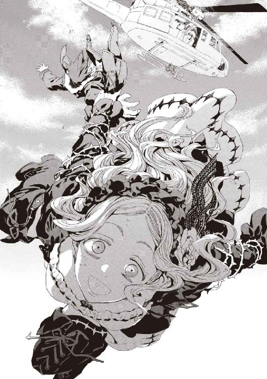
「ああああああ、あほかァッ！ そんな仲間意識はいらん!!」
泣きそうな気分で、薬を打たれる前にと、仁は自分から身を投げた。
空へ。
重力に引かれて真っ逆さまに墜落する世界は、ただ一面の蒼だ。
仁の目は猛烈な速度で落下しながら、なお見開いていた。敵との戦闘ではなく、このままでは味方に殺されることになる。
そのとき、視界を紺色の布地の嵐が覆い隠した。
たまらず腕で顔にへばりついたものを引き剝がすと、仁の目の前の《茨姫》オルガは、先刻までと姿を変えていた。
《茨姫》の首から下は、革のバンドを幾重にも巻き付けた拘束衣に包まれていた。身体各所で鋲のような金具が肉に食い込んでいる。オルガは、背中に背負った巨大なモーターユニットの力で拘束衣を引き、あるいは金具で肉体を損壊する痛覚で、魔法を引き出すのだ。
新調された拘束衣、《茨》の革は、目が覚めるような青に塗装されていた。
「なんだこれ、高速仕様だから青色なのか？ そんなアホな理由なのか溝呂木ィィィッ！」
そのとき、仁のまわりの世界が止まった。異変の源は《茨姫》だ。聖痕大系の《化身》である《まどろみの化身》は、術者の体感時間を引き延ばす。そして〝体感〟の加速は、認識が魔法に直結する魔法使いにとって、時間の加速と大差がない。
それは、覚醒剤がもたらした神経の興奮とあいまってオルガの体感が生み出した──。
爆発的な加速────────。
墜落の速度をやわらげたオルガが、仁の手をつかんだまま強引に急上昇した。
空を飛んでいるのではない。雲を蹴っているのだ。気体がオルガの体重を支えられずに沈むより早く、次の足を踏み出しているように、仁からは見える。たぶん、加速された《茨姫》と周囲の間にある《時間の断層》を精密に制御して、彼女はこの時間の境界面自体を踏んでいるのだ。
「まっすぐ上昇するな。魔法消去にかかるぞ」
ヘリの高度は、海面から約三百メートル。
周辺気流を、《茨姫》が乱していた。ななめに空中を駆け上がる彼女の背後で、大気が光を屈曲させている。高いヒールのブーツで踏んだ蒼空と輝く海面の間にあった雲は、くりぬかれたように消失していた。
「なんだ......。《まどろみの化身》のこんな発現、聞いたこともないぞ」
現象の正体を察した。今、オルガの周囲で時間が千倍に引き延ばされているとしても、仁たちが感じる外気温は加速前と同じだ。これが《まどろみの化身》の有効範囲から出て時間圧縮が解かれると、時間は一気に遅くなる。このとき時間の境界面で、熱交換の収支がオルガ側の体感温度に引きずられて狂ったのだ。つまり《化身》の範囲に一度吞み込まれた後で吐き出された大気が、すさまじい高温になっている。
仁が知る限り、《まどろみの化身》に、こんな方法で超高温を作り出す能力はなかった。環境に大きな変化をおよぼすこうした魔法は、従来なら地球環境を共有する六十億人の魔法消去者から消去を受け、正常に動かなかった。
「魔法消去は、いったいどれだけ弱くなってるんだよ？」
仁は、両腕で抱きしめるように、オルガの年甲斐ない青い拘束衣の腰にしがみついていた。骨盤の発達したむっちりした腰回りを固める革に仕込まれた太いワイヤーが、頰にごりごり当たった。この時間圧縮環境から振り落とされれば、焼き尽くされるか大気に引き裂かれるか、どちらにしろまず助からない。
ヘリを狙って飛来した敵は、時間の流速の差で、空中をじりじり進んでいるように見える。三個のデルタ隊形をとって飛ぶ一個飛行隊、九人の魔法使いのうち、もっとも危険な先頭位置を担当する三人は全裸だ。
「わたくし、わたくし、白い光が見えます、光が、......光が」
麻薬で陶酔しながら走るオルガが、拘束衣の左腰に設置されていた操作パネルに指を這わせた。携帯電話を改造した拷問使令器に命令コードを打ち込み、実行ボタンを押そうとする。その手首を、仁はつかんだ。
「重い魔法生物を出したら、消去しきれずにヘリが巻き込まれる。時間圧縮が制御できるなら、十倍速まで落とせ。こっちで片付ける」
ジャケットの内側に吊したホルスターから拳銃を抜き、遊底を引いて薬室に弾丸を送る。
背後の雲が、仁たちが走ってきた軌道を中心に熱に押されてまっぷたつに割れてゆく。すべてがスローモーションの世界を、異世界の自然が侵食してゆくようだ。
「くそ、女の腰の後ろから銃を撃つなんてはじめてだよ！」
麻薬で限界を超えた体力で、オルガが仁を腰からぶらさげたまま空を全力疾走する。かかとの高いブーツの蹴り足でガツガツ蹴られながら、仁は五十メートルほどまで近づいていた敵に銃弾を浴びせた。
音速程度の銃弾も、《茨姫》の時間圧縮の世界から放てば、相対的に時間がのろい外の世界では非常識な速度に到達する。
銃弾の本来の射程距離まで肉薄する必要すらなかった。仁の発射した九発の銃弾は、摩擦熱で溶解し蒸発しながらも、すさまじい角運動量に支えられて直進する。
単純な速度と質量が、九人の襲撃者たちを撃ち落とした。魔法使いといえど、超高速の攻撃に完璧な耐性を持つ者はすくない。標的は攻撃に反応すること自体ができなかった。
「もういい。加速を解いてくれ」
加速された世界からは、衝撃で砕ける人体までスローモーションで見えて、気持ちが悪かったのだ。
時間が凍ったような世界で、オルガは電池が切れたように立ちつくしていた。
仁は、ホルスターに拳銃を戻す。オルガの腰にしがみついた姿勢が情けなくなってきた。
《神》が降臨しても変わりなく、世界は暴力で満ちていた。この一番どうしようもない部分が変わらないことは、さらなる激変を予約している。つまり、〝未来世界〟の何者かが、今ある世界を、再演魔術で誘導した暴力で軌道修正にかかるということだ。
「さっきの連中も、再演大系に利用されたんじゃなく、自分の意思でそうしたつもりだったんだろうな。でも、麻薬中毒の視野狭窄だよ。麻薬中毒の連中がおかしなことをするのだって、心神喪失状態でも意思がまったくないわけじゃない」
《茨姫》は返事をくれなかった。
再演魔術は、まるで麻薬だ。身を任せていれば自分にない力に運ばれて、意思で選ばずに生きてゆける。そうすることが足搔き戦うことよりよい結果をもたらすとしても、それは麻薬に浸かって生きるようなものだ。
法律の網にかからず、自分の体には副作用が特に残らない、世界を満たす麻薬だ。
＊
魔法使いの撃墜報告が、アトランチスに到着した溝呂木から警察庁に入ったのは、出発から約三時間後のことだった。
アラクネの護送が無事完了したのに、じりじり首が絞まってくるような恐怖のほうが、京香には強い。襲撃者たちの裏側に、あきらかに再演大系による操作の影が感じられた。そして、当人たちは全員操られたのではなく、自分の利害と意思で襲撃に参加したつもりなのだろうと予測できたからだ。
理路がはっきりしないのに襲撃が起こったことが、京香には気持ち悪くてしかたない。どこまで詳細に調べ尽くしたとしても違和感を残すだろうことが、気持ち悪くてしかたない。
広い会議室に集まった警察幹部たちは、知らせを受けても危機感を覚えてはいない様子だった。
京香は警察幹部に混じって、今後の魔法使い対策を協議する会議に参加している。そして、魔法使いからの安全を求める国民の小規模なデモや、膨大な軽犯罪をどうさばくかの議論を進めている。目先の問題への対処にまぎれて、再演大系については「人間を救うらしい」という漠然とした話題にしかならない。
「現在の状況を支配しているのは再演大系です。状況がどう動くにしても、新しく我々に降りかかったというこの自然秩序とどう付き合うのかは、常に考えておくべきかと思います」
二十代の京香は、警察幹部が並ぶ会議室で場違いだ。だが、彼女がこの分野についての、日本最高の専門家のひとりであることは疑いない。
護送の結果待ちをしていた清水健太郎が、京香に発言を求めた。
「襲撃に、その再演大系という魔法が影響していることは、間違いないのか。十崎事務官が、それほどの確信を持つ理由があるのかという意味だが」
「たった九人の戦力で、不意打ちすらせず仕掛けたこと自体が、本気で成功を期したとは思えません。状況を考えれば、襲撃側も、魔導師公館の専任係官が護衛についていると予想できたはずです。仕掛けるなら、不意打ちするなり波状攻撃にするなり、もっと工夫がないとおかしいのです」
今回の襲撃は、再演大系には失敗でも効果がある。逮捕されて身元がバレて《協会》の人間だとわかれば、協力関係にひびが入る。いまだ魔法使いたちは、《九位》が倒れたとはいえこの世界の住人を蔑視したままなのだ。調整官ベルニッチたち「魔法使いとの交流」の時代に適応しはじめた勢力はいるが、反対派の活動が目立つと、彼らも動きがとれなくなる。
「この暴発自体が、おそらく再演大系からのメッセージです。現状は平穏ですが、魔法使いたちにとって、『人ではなくモノに等しい』とまで侮った我々と共存させられることは、屈辱なはずです。〝未来の魔法使い〟たちは、必然的に起こるはずの暴発を、再演魔術で押さえ込んでいる。裏を返せば、〝未来の再演魔導師〟たちは干渉をゆるめるだけで、簡単にあらゆる場所で魔法使い暴動を起こせます」
再演大系は、魔法消去に阻まれて、この世界の住民をまだ直接は操れない。だが、間接的な揺さぶりを魔法使いを通してかけることは、そう難しくない。
再演大系は、人間を道具にして世界を描き変えようとしている。それは必死で生きて戦う者への冒瀆だ。人生をかけた幾多の戦いを目の当たりにした京香はそう思う。
警察幹部のひとりが揶揄を飛ばした。
「それは警察に取り締まれるのかね。君、人間を操る魔法って言ったって、ただでも魔法使い犯罪は物証が出ないのに、法律も整備されてない。だいたい、被疑者は未来にいますじゃ逮捕できないよねぇ」
再演魔導師は、未来から詰め将棋を仕掛けつつ、人間を試す神を気取る詐欺師だ。疑いの種をまいて、その混乱に紛れて歴史を操作している。
発言に影響力が低い京香のかわりに、警察でもっとも《公館》との繫がりが深い警備局の清水副局長が返した。
「魔導師公館側の意見はこうだとして、再演大系という集団を、警察が、罪刑をあらかじめ明確にしておかねばならないという原則を危うくしてまで、取り締まる必要はないだろう。犯罪はなくなるものではない。警察はこれまでも根絶不可能なものに立ち向かってきた」
「お言葉ですが、我々この世界の住民が持っていた魔法消去能力は、急速に失われつつあります。魔法からの自衛手段を失う以上、市民の安全は、これまで以上に、異世界の犯罪者に異世界のルールでおびやかされます。これに対処する法律がなくとも、断固とした意志を示せなければ、安全を守れません」
これが京香たち魔導師公館の正義だ。
「すこし抽象的な話をしてよいでしょうか」
京香は切り出した。実務者協議の場所であるここでは似つかわしくないことを、あえて話しておきたかった。このまま魔法消去が減衰して停止すれば、再演干渉による検閲でことばにできなくなるかもしれないことだからだ。
「《神》の降臨によって、我々の身にも降りかかりつつある『人を救う秩序』というものについての、魔法使いに触れてきた人間からの現状認識です。つまり、我々の社会が、新しい自然秩序によって危機に立たされていることについてです」
「魔導師公館にとっては、そんな話が実務のうちなのか」
苛立ったように、公安の外事課長が遮ろうとする。京香は、国家の安全を守るのが仕事である人々に、人類社会全体の危機の話をしようとしている。
「再演大系という魔法秩序を、この世界は、すでに押しつけられてしまいました。魔法世界的な社会のありかたは、もしも魔法消去能力が止まれば、すぐにでも我々に食い込んできます。すぐにでもです」
この世界は《神》と奇蹟がないからこそ《地獄》だった。裏を返せば、降臨が起こってしまった今、ここはもう再演世界という魔法世界なのだ。
「人間に知られているかに関係なく、自然秩序は世界を運営します。ニュートンが万有引力を発見する前からリンゴは落下し続けました。同じように、〝人間を動かして人間を救う自然秩序〟は、黙したまま我々の知らないルールで人を救い続けるのですよ」
京香は、聞き手に慣れない概念だろう魔法のことを伝えるため、ゆっくりと話す。
「科学論理が、推論と実験の積み重ねでしかないように、魔法世界でも、神以外の者は本当に正確な自然法則を知りません。〝人を救う秩序〟の世界では、人間に人間を救わせる意志決定の道筋が、『人間の知性では正確に追えなくなる』のです。自然秩序になるとは、人間では推論と実験の繰り返しでしか近づけなくなり、個別のものとして正確に追いかけられなくなるということです」
それぞれエリートである警察幹部たちは、彼女の言わんとしていることをきちんと理解してくれた。
「君は、人間が自分の意思表示すら追いかけられなくなると言っているのか？ 人間が主体として振る舞える個人だという前提が崩れれば、行動に対して責任非難ができなくなる。法律で人間を罪に問える根拠も崩れる。法律によって運営される社会システム自体が、存亡の危機だ」
京香が知る限り、魔法世界は、だからこそ人間や法律に全幅の信頼を置かず、刻印魔導師を選ぶ神前裁判のような原始的なシステムを持つ。
「《降臨》以後、人間の意思と倫理は、根本からすでに人間自身の手を離れはじめているのかもしれません。もはや人間の定義自体を見直すべきときが来ているのでしょう」
問題が大きすぎた。それでもこれは、官僚のよって立つ足場がいつか崩壊するということだ。京香たち全員が当事者だった。
だが、警察は、《公館》とは違って、敵を撃滅する組織ではない。その差異が、話を一通り聞いた清水副局長のことばに表れていた。
「再演干渉の脅威についてはわかった。だが、この件はまず再演魔導師を参考人招致するのがスジだろう。それから、逮捕した犯罪者が、正犯だったか道具として利用されたものか、それにえん罪だったかどうかを見極めるモノサシとしての法も必要だ」
「現状、それでお願いします」
彼女は、反論はしなかった。
《九位》との決戦でワイズマンの浅利ケイツをけしかけたように、すでに裏から手を回していた。《幻影城》に同行した溝呂木京也に、工作を頼んだ。社会が必要な仕組みを作るまで、彼女は職域をはみ出しても辻褄を合わせると決めている。
「魔導師公館にとっては、苛立たしいかもしれないが。我々は、腰を落ち着けて、目先に出てくる問題に対処するのが仕事だ。飛んだり跳ねたりは得意じゃない」
先を見ようとして逸りがちな彼女に比べて、経験を積んだ警察幹部たちは鈍重だ。だが、どちらが悪いわけでもない。それは、魔法使いとこの世界の住人の関係と同じく、ただ〝ちがう〟だけだ。そして、〝ちがうもの〟を同じ仕組みに乗せて協力し合うことが社会の力だと、彼女は思う。
「これまでどおりの仕事を厳密に続けるならば、組織が一貫した信頼できるルールを共有できます。当面、再演干渉への有効な防御策になると考えます」
だが、清水健太郎は、京香にとっても意外な熱を見せた。
「今回の件で怒るべきは、〝人間を操って人間を救う自然秩序〟が、えん罪を増やすことだ。再演秩序とやらに操られた部分を、心神喪失状態で責任を問えないと考えれば、引き渡した例のアラクネも、麻薬取締法違反以外の罪状はえん罪が出てくるぞ」
〝魔法使いが操られる〟世界では、逮捕した被疑者が無実の罪であるケースが今まで以上に増える。それは元学生スパイという経歴からか、この夏に旧友を核テロ犯として射殺しての想いか、清水の表に出せない本音だった。
そして、異世界人を処分する役割だった京香たちが、突き詰めなかった切り口だ。
「《神》が現れても、えん罪は絶対になくならない......」
京香の胸に、納得感がスッと入った。しあわせに導くために自然秩序が人間を動かすことで、法律に携わる者が〝えん罪という誤り〟を犯す危険が高くなる。そして、そんな再演秩序の世界で、おそらく貧乏くじを割り当てられた犠牲者に、えん罪を晴らす機会はない。
警察幹部たちも、鈍い同意を、ため息や疲れのにじんだ仕草で表した。自分たちも間違うことや、えん罪をなくすことはできないことを、何十年という仕事の経験で一番よく知っているからだ。
それは人間の過失への深い信頼だ。だが、人間らしい基準だと、彼女にも奇妙に納得がいった。
そしてそれが、どこかで社会正義を求めている彼女たちにとって、その機会を奪う《神》に立ち向かう理由に思えたのだ。
神の秩序は、人間が歴史的に積み上げてきた倫理とはちがう。
だからこそ、人間が意思を抱き続ける限り、神がいようといまいと自らの過ちとは決して手を切れない。
＊
アラクネの引き渡しは、アトランチスに到着するとスムーズに行われた。
王子護が不在のアトランチスには、小細工を企てる余力がない。指揮下にある魔法使いたちをとりまとめるだけで手一杯だったのだ。
広大な上甲板に、轟々と強風が吹き荒んでいた。そこには、人生にすり切れた顔なじみが待っていた。
浅利ケイツは、この世界の魔法使いたちのために立ち上がった英雄《神に近き者》グレンの双子の弟だ。なじみの黒い薄汚れたコートを着て、海風の冷気に耐えるように身を縮めている。髪もろくに切っていないのか、前に見たときよりもみすぼらしくなっていた。
ケイツがことばをかけて来にくそうだったから、仁から声をかけた。
「あいかわらず、いいように利用されてるな」
「会うたびにうさん臭くなってゆく男が、私に偉そうなことを言うな」
三十代なかばの男は、それなりに修羅場もくぐっているのに、恫喝に迫力がない。
ケイツの《アトランチスの警備責任者》という役は、このあいだ仁が適当に作ったのだ。ただし、ケイツがこの役に抜擢されたことは順当だ。《九位》討伐に加わっていたことで、また名前をあげたからだ。ワイズマンは王子護不在の間、寄せ集めのアトランチス市民たちを引き締めねばならない。そのうえケイツはきずなと何度も会っているから、他の魔法使いよりは再演抵抗を期待できる。
「この女を預かれと聞いたが、いったいどういうつもりだ」
アラクネを護送してきたヘリを、ひげのそり残しが目立つ顎で気味悪そうに示した。重度の麻薬中毒の魔女は甲板に降ろされたものの、立ち上がることもできない様子だった。
「ここにいたのが、おまえでよかった」
仁の正直な気持ちだった。浅利ケイツは戦うより、逃げることを選ぶ男だ。だから、この男がアラクネを殺すことはない。
「あいつを殺させないでくれ。これまでさんざん振り回された元凶のひとりだけど、このまま死なせるのは寝覚めが悪い」
「魔法であの麻薬中毒を治療するぞ」
「立派になったな。はじめて会ったときのおまえを思い出したら、人を治すなんてことばが出てくることが信じられん」
ケイツの目つきは今も荒んだままだ。だが、かつて世をすねているだけだった男の視線に、わずかに力がこもっていた。《九位》との戦いを乗りこえたケイツは、もう兄からもらった才能だけの男などと片付けられる人間ではない。
「抜かせ。私をいつまでも昔のままだと思うな。おまえとはちがうのだ」
「相似大系の魔力弦も繫がらないしな。さすがにそろそろ、腐れ縁も終わりってことかもな」
似ているもの同士を繫ぐ相似大系の銀弦に、仁とケイツは何度も自然に結ばれてきた。だが今日はそれがない。すり切れた男だった仁たちは、何も変わっていないようでいて、歩む道をはっきりと分かったのだ。子どもで時間の早いメイゼルだけでなく、仁たちも明らかに昔どおりではない。
どこかで取り残されたようで寂しくもあった。ケイツはアラクネを魔法治療で救おうとしているのに、仁はといえば襲撃者を斃してきたばかりだ。
《神》が降臨して世界が変容しはじめても、むせるような苦さは変わらない。
「武原君、頼みたいことがあるのだが、いいかね」
微妙な空気になった仁たちは、遠くから声をかけられて目をそらした。魔法学者の溝呂木が、見渡す限り真っ平らな上甲板を走ってきたのだ。
「すみません、お客様！ そっちはまだダメだって言ったじゃないですか」
溝呂木を、背の低いメイドが追いかけてきていた。体格は大柄で髪を短く刈った溝呂木は、白衣を着ていなければ学者には見えない。海風で飛ばされそうになりながら魔法学者を追うメイドは、どう見ても、彼らと同性には見えない。
短いスカートの前を押さえながら走る少年は、リュカ・エラド・マナという。
「......ところで、あの下着はおまえの趣味か」
「なぜその台詞を冷静に吐ける、《悪鬼》」
微妙な空気になった。
リュカはケイツを信じ切っている様子だった。純真な笑顔で、両手でスカートを押さえている。切れるように冷たい冬の風が荒ぶ中、生足のミニスカートは頑張りすぎだった。
「私の趣味などではないぞ」
ケイツを無視して、やってきた溝呂木が仁に話しかけた。
「武原君、君は今アトランチスの人間だな。ワイズマンへのつなぎをとってくれたまえ。魔導師公館から、君たち、いや、君への依頼がある」
溝呂木の白衣が風にはためいていた。わざわざ今する以上、警察のヘリパイロットの前ではできなかった話だということだ。
「聖霊騎士、《極星を追う者》を破壊してもらいたい。狩りをしたまえ、《沈黙》」
仁の背筋に緊張が走った。この依頼は、魔導師公館──十崎京香が仕掛けた一手だ。
「いいのか？ 《公館》は、警察との協力体制にあるんだろう。これは、やったら聖騎士との間に戦端を開くことになるぞ」
ケイツは話に入ろうとはせず、無関係を装って静かに後ずさりした。出世したようでいて、さすがの逃げ足だった。
溝呂木は人間らしい気づかいと無縁な男だ。
「機械化聖騎士師団は、すくなくとも四体の《聖霊騎士》を稼働させている。核テロ事件のときに君が遭遇した《一眼怒拳》デューガ。そして、アンゼロッタ・ユーディナと契約した《黄金の右手》ミヒャエル、三千年前のバベルに参加したとおぼしき《極星を追う者》。アラクネを捕獲したのは、本人の証言によれば、黒い騎士装束の《第四の聖霊騎士》だ」
「東京に四体か。戦争になったら、今の魔法消去の強さじゃ止められないな」
「だからこそ、《聖霊騎士》たちと、他の聖騎士がいないところで接触してみたいのだ。特に《極星を追う者》だ。《彼女》は、倉本慈雄が助けようとしていた聖騎士であり、最初のバベルで死んだはずなのに《聖霊騎士》にも封じられた、〝二度死んだ人間〟でもある。《彼女》は、すべてのきっかけに関係している重要人物であるはずなのだ」
「......ベレーノ・ネロの神音楽器もすでに握っている、か」
魔導師公館は、かつて倉本きずなが東京国際展示場で参謀ベレーノ・ネロを斃したとき、彼の神音楽器を回収している。この楽器は、《極星を追う者》がベレーノと契約したものとして現れていた以上、《極星を追う者》の召還器だと考えられていた。
「そのとおりだ。だが、現状、我々は聖霊騎士の呼び出しには成功していないのだよ。原理上ひとつの時間軸では、同じ聖霊騎士は二体以上同時に出現できないからな。だが、逆に考えれば、現在活動している《極星を追う者》を君たちが破壊してくれれば、我々が《彼女》を召還できる」
神聖騎士団よりも先に召還して拘束してしまうことは、聖霊騎士に手を焼いた《協会》が発見した、唯一の有効な封印策でもある。
「呼んだ後で、暴れたらどうするんだよ」
「聖霊騎士は召還されるごとに記憶をリセットされる。要するに、交渉をうまくやりおおせれば情報を引き出すことが可能であるとは思わないかね」
「おまえ、いくらなんでもいい加減な」
こんな魔法消去が弱くなった状況で失敗すれば、召還に立ち会った人間も使った施設も吹っ飛ばされる。
「《極星を追う者》は、鍵なのだよ。聞けば、あの聖霊騎士は、倉本きずなの再演魔術に完全な耐性を持っていたそうじゃないか？」
仁は、溝呂木の前のめりすぎる構想に、思わず頭を搔いた。
「そりゃ再演大系の脅威から逃れられる方法が見つかったら一発逆転だけどな。フタ開けてみるまで何もわからないバクチだぞ」
「考えてみたまえ。我々の世界は、まんまと再演大系に作り替えられた。魔法消去も急速に力を失いつつある。だが、発生した現象は複雑だが、人為的な災害である以上、その中心は単純であるはずだ。たとえばガラスのコップをハンマーで割るとき、破片の飛散や形状のパターンは複雑だが、起こった中心はハンマーで衝撃を加えたというだけだ。パズルのピースがあとひとつかふたつそろえば、こういう単純な真実が現れるはずなのだよ。ならば真実へ至る断片を手に入れるために、あらゆる手を尽くしてよいのではないか？」
「真実の中身しだいじゃ、完全に裏目に出るかもしれないバクチだよな」
「確証などないのだから、やるだけの魅力を感じるかで決めたまえよ。世界法則切り替えの謎のついでに、《極星を追う者》を倉本きずなが母親だと誤解していたわだかまりも、解けるかもしれん。鴉木メイゼルを連れてきていないということは、あそこへ行くのだろう」
溝呂木の背後に、巨大な水晶都市があった。
《幻影城》は、アトランチスの隣の海上に浮かんでいる。透明な朝の陽光を複雑に屈曲させて、万色の光条を周囲に投げていた。
あれと比べてしまうと、アトランチスなど、ただ巨大で殺風景なだけの構造物だ。
きずなが自分から出てくれるのを待つのは、もう限界だった。今回の護送の仕事がなくても、数日のうちにはここまでの移動手段を用立てるつもりだったのだ。
だが、いざとなると、ここにメイゼルを連れて来なかったことがやましかった。だから、まだそばにいたケイツに声をかけた。
「おまえ、行ってみるか」
「異常な世界に、私を巻き込もうとするな」
荒みきった男が、鼻で笑って吐き捨てた。仁としては、あの変人や異常者の群と同列に見られるのは心外だった。
「異常な連中が近くにいるだけだ。俺はそこまでおかしいわけじゃない」
「裏切られること上等でやりたいようにやるから、底辺の吹きだまりに行き着くのだ。そんな頭のおかしい世界に、私まで巻き込むな」
ケイツは、相手を利用して怒りを買うよりは、さっさと逃げる男だ。だが、仁自身の現状を顧みれば、正論だった。
「反論できんが、おまえに言われるのはムカつくな」
こころの底から苛立ったそのとき、仁の胸から銀色の魔法弦が伸びていた。似ているもの同士を結ぶ相似大系の銀弦が、ようやく彼とケイツを繫いだのだ。
以前に《幻影城》の門をくぐったときは、メイゼルに入り口まで運んでもらった。
今度の足は、アトランチスで給油したヘリだ。
入射した陽光が、今日も《幻影城》に七色の影を落としていた。広大な城には、尖塔や城壁や通廊が、よく見ると防御施設として用いることが可能なように配置してある。《幻影城》内部から打って出る戦力が一時集合するためであろう、兵士が千人は整列できる広大な中庭すらある。ヘリはそこに着陸できた。
招かれるように、《扉》の鍵は開いていた。
魔法の入り口をくぐると、全裸の門番がいた。
「よく来たな。食事にするか、風呂にするか」
真剣な緑の瞳をまっすぐ仁に向ける彼女は、敵意を感じさせず無防備だ。
「すまん、場所を間違えた」
《無双剣》セラ・バラードは、いつも全裸の魔女だ。メリハリのきいた肉体美は目を見張るほどだが、あまりに堂々としすぎていて淫靡さを感じない。
無造作に彼女が組んだ腕の下で、傲然と白い乳房が揺れる。仁が視線を上げると、怜悧な美貌をセラが微笑ませた。
「食事でも風呂でもないなら、きずなだな」
仁の背中に鳥肌が立っていた。この上なく厳しい話に来たのに、まるでコントの一幕に巻き込まれたようで、逆に緊張してしまっていた。
白金色の髪を揺らして、颯爽とセラが身を翻す。つんと上向いた尻が、彼女が畳の上を大股に歩くたび格好良く揺れる。
「......畳？」
セラに視線が向いていた仁ははじめて気づいた。《幻影城》の、巨大な水晶の舞台が広がっているべき舞台が、どう見ても和風家屋の室内になっていた。何キロメートルもある無意味に広かった空間が、六畳間ほどのせまさしかない。
「なんだこれは？」
「今ごろ気づいたのか」
きずなの護衛のためここに残っていたセラが、呆れた様子で振り返った。
仁は、室内の風景に見覚えがあった。ちゃぶ台は仁のアパートのものだ。部屋の隅のテレビは倉本家のもの。壁紙と、フォークで刺した穴だらけのソファは十崎家の居間のものだ。
「これは、家か」
セラがちゃぶ台のそばに正座して、お茶の用意をはじめた。
「笑わないでやってくれ。彼女も、天井の《神の門》を見たくないんだろう」
仁が最後にここを出たとき、水晶宮の天井には、虹色の巨大な魔法陣──《神の門》があった。《神》を召還した魔法装置は、消えることなく今もまだ作動し続けているのだ。
「俺ひとりの魔法消去じゃ破壊できなかったけど、あれは何なんだ？ できれば、メイゼルを連れてきて《螺旋の化身》で壊せるか一度試してもらいたいんだけどな」
「本人に聞け。きずななら、奥のほうの部屋にいる」
《幻影城》は元々、《神人》が作った、再演魔術用の舞台装置だった。かつて《神人》だったきずなにとって、ここは思い通りに扱える施設で、間取りくらい簡単に作り替えられる。
「ところで、俺が東京に行ってる間、神聖騎士団から攻撃はなかったか」
部屋のふすまが開いた。
鞘におさめたままの剣をひっさげた少女が、和室に入ってきた。すこしウェーブのかかった褪せた金髪を肩まで伸ばし、赤いジャージを着た彼女はエレオノール・ナガン。かつては聖騎士将軍にもっとも近いと言われた若手最強の聖騎士だった。
エレオノールはまず仁の手元に視線をやり、彼が手みやげを用意していないことを見てとってから話しだした。
「襲撃なら、昨日までも何度かあったそうです。転移自体を拒絶して防いでいるそうですが」
「きずなちゃんは、そんなことまでできるようになったのか」
「必死にもなるでしょう。政治的に利用するため生かされているアトランチスとはちがい、再演大系はすぐにでもきずなを殺したいはずですから」
きずなは、逃げ切れない以上、攻め込まなければいつかは潰される。そして、誰を倒せばいいかはわかっている。武原舞花だ。
「武原仁、あなたに妹を倒せるのですか」
エレオノールが、ため息をついて正座した。仁もセラも席についていたからだ。
「やらなきゃもうどうしようもない。第一、舞花は、俺にとっては六年前に死んでいる。それを言うなら、おまえのほうこそ、昔ならともかく今は子どもを殺せないだろ」
清楚な彼女の表情が、苦悩に曇った。
「誰かがやらなければならないことです」
エレオノールは潔癖な少女だ。だからこそ、その決意は重い。
「今回のことは神聖騎士団の罪です。ならば、わたしが片をつけることは、人の道にかなうはずです」
古巣を断罪する彼女の視線は、聖人のように透明だ。仁には魔導師公館を切り捨てられないからこそ、彼女の惑いのなさを疑った。
「神意がそう求めてるって理屈なら、やめたほうがいい」
エレオノールのことばは、どこまでも無垢だからこそ、胸に刺さるほど鋭い。
「神聖騎士団は、仕掛けを作って追い立てることで、この世界の人々に再演の《神》を選び取らせたと聞きました。そのようなことが許されてよいはずがありません」
仁にまで、本来この世界に命を懸ける義理がない彼女の、義憤が伝わってくる。
「死ぬぞ」
その認識を曖昧にすることはできなかった。神聖騎士団だけでも絶望的な敵だったのに、今度は舞花がいる。きずなを操って《降臨》を現実化した、〝未来の再演魔導師〟たちまでもが背後に控えている。
「騎士の大義を問う戦いです。敵が強いからと引き下がるものではありません」
刑場に上がる殉教者のように、剣の乙女のたたずまいに乱れはない。
「そう考えること自体が再演大系の干渉で、罠にかかってるかもしれない」
仁は目を閉じる。心強さに発作的に胸が熱くなって、まぶたの裏まで熱があふれるのを感じた。
「招かれているならば、堂々と進みましょう。ことばを伝えねば、相手を動かすことはかなわないのですから」
目の前にセラが茶を出してくれた。上体を前傾させた所作のせいで、重力に引かれた脂肪の重みで白い乳房がたゆんと揺れた。
仁は大きく息を吐き、右手をまぶたに押し当てた。
「嘆くことはありません。別に、あなたに同行を望んではいません」
「え!? あ、......なんの話だった。いや、ちゃんと聞いていたからな。ちょっと別の考え事が......」
「武原さんはこんなときでもおっぱいですか」
気づいたら、倉本きずなが部屋の隅に座っていた。別れたときと同じように膝を抱えていた。血まみれだったブレザーの制服は、洗いたてのようにきれいになっている。けれど、表情には生気がないままだ。
「きずなちゃん、元気だったか」
心臓が、爆発しそうなほど強く打った。気配をまったく感じさせず、いつの間にか彼女がそこにいたからだ。彼女の姿を確かめるまでの一瞬で、仁は反射的に武器になりそうなものを探していた。《連合》の評議長アリーセ・バンシュタインと邂逅したとき以来の圧力だ。
だから、いつも通りに話しかけるのにも精一杯の瘦せ我慢が必要だった。
「神和は無事か？ カオティックファクターはどれも停止状態らしいけど、あいつの体、再生できたか」
きずながちいさくうなずいた。疲れ切った様子だが、目元は前ほど険しくはない。
「長いこと連絡もしなくてすみません。考え、どうしてもまとまらなくて、ずっとここからいろんなものを見てました」
彼女の手の中で、《幻影城》の外観と同じ虹色の光が回転している。焦点の合わない目で、きずなはそれを眺めていた。
「その光、何だ？」
「再演魔術で作った、覗き窓みたいなもの、かな」
普通でいたいと何度も悲鳴をあげたきずなが、明らかに高度な奇蹟を使いこなしていた。彼女の傍らには、仁が手渡したライフル銃が置いてある。
「これまで逃げてて見てこなかったものを、確かめてるんです。わたしが何もしなかった間に、世界がどんなふうに動いて、こんなになってしまったのか」
その努力を、仁はきずなにどこかで求めていた。だが、能力に見合った用心を身につけた彼女を見ることが、つらかった。
「倉本きずな、室内がまたゆがみはじめていますよ」
エレオノールがちゃぶ台を指で示す。和室の調度が侵食されて変化しだしていた。部屋の壁に渦巻き状の影ができていた。作られた家庭の風景が、生き物のように脈動していた。きずなが、困ったようにため息をつく。
「〝未来の魔法使い〟から干渉を受けてるんです。《幻影城》には報復用の魔法が仕込まれてるから、攻撃には限度があるんですけど、当たるとわたしでも支配されちゃうから、《幻影城》の中のものをオトリにしてしのいでて。......そのせいで、まわりが不安定になっちゃって。すみません」
きずなの右手の光が、直方体や三角錐、球体と、様々な立体に形を変えてゆく。これが、《幻影城》を制御する魔法構造体のようだ。きずなは〝未来〟からの干渉を片手間でしのぎながら日常生活をできるくらいまで、魔法を上達させていた。
「再演魔法って、みんなが自分の気持ちで戦った歴史を、糸で結ぶみたいに繫げて、〝意味〟を作るんですよ。わたしたちにとって世界は一冊の《本》だけど、自然のものだから、元々は〝意味〟がついてないんです。わたしたち読み手が見出すまで、《本》に〝お話〟はないんです」
きずなの世界観は、まるで神から世界を見下ろす視点だ。けれど、彼女は疲れ切って、とても〝人を救う秩序〟の担い手には見えない。
「だから、特に、こんな感じに遠くから知らない人を操るときは、操作してる感覚もなくて。ただ、自分が思う〝物語〟に沿うように、世界を編集してるだけ」
きずなは、感情のこもらない視線を、手の中の光へと向けていた。
仁は、二週間も彼女はずっとこんなふうだったのだと思うと、いたたまれなかった。
「何でもできるからって、その全部を背負う必要はない。ひとりで世界をどうこうしようとしたら、きずなちゃんは、グレンや《九位》よりも孤独になるぞ」
きずなと同じ責任を負っているはずの武原舞花は、聖騎士と組んで好き勝手なことをやっている。あれが許されるなら、彼女ももっと楽に生きられるはずだった。
「でも、舞花さんを再演魔導師にしてしまったのも、わたしです」
「舞花のことなら、俺も同罪だ。俺の察しがよければ、あいつが聖騎士につくのを止められたかもしれない」
きずなが首筋に力を入れた。
「その場その場で気持ちのよさそうなこと言うの、いい加減にやめてください！ 武原さんは好きに生きたらいいみたいなこと言うけど、こんな力を持ってそんなことしたら、イリーズさんみたいに恨まれて殺されるじゃないですか。死ねばいいって思ってるんですか？」
出会った頃からそうだった。仁は《公館》の仕事ですり切れ、甘いことを言って、きずなによりかかってきた。メイゼルは死に場所を探していた。きずなは家庭を取り戻したがっていた。彼らの帰る場所は、問題を先送りにすることで成立していた。
だが、そのふわふわした時間は、きずなには致命的なタイムロスだった。重いツケを、《降臨》のときの悲惨な体験として彼女が払った。
ここにあるものは残骸だ。仁が癒された、両親の失踪でなくしたあたたかい食卓の、無惨な廃墟だ。
「そういうつもりじゃない。......もうやめよう」
仁と彼女は、家族のように食卓を囲んだ幻想が壊れてから、激しくぶつかった。けれど、きずなが、もういがみ合う気力もないほどくたびれきっていた。
「......気持ち悪いんです」
きずなが、苦しみを吐き出すようにつぶやいた。
「寝られないんです。眠ろうとすると、再演の《神》が世界にやって来たとき、自分が死んでたんじゃないかと思って、もがきながら目を覚ますんです。......なんで、わたし、まだ生きてるんですか。未来にいる誰かが、わたしを操ってまだひどいことさせるためですか」
完全に心臓が止まってなお〝未来〟からの魔法で無理やり心臓マッサージをさせられ、生き延びる。なぜとその理由を考えれば、「きずなに操り人形を続けさせるため」と言うしかない。
「武原さんは、わたしに戦えって言いに来たんですね」
「そうだ」
他の答えをしたら噓になった。メイゼルに、仁にとっての〝居場所〟はきずなだと指摘されたせいもある。だが、用件の中心は戦いのことだ。
「今だって、舞花さんを通して〝未来の魔法使い〟に操られてる魔法使いって、たくさんいるんですよ。わたし、それを、気がつかないうちに書き換え直してることがあるんです」
「きずなちゃんは神様じゃない。そんな問題の答えは、何年考えたって出ない」
きずなは世界の一極を背負わされた、おそらく現存する最強の魔法使いのひとりだ。だが、再演大系によって《神》を降臨させるために準備された〝最強〟だから、本来なら力を身につける修練や学習の中で養っているはずだった覚悟がない。
「わたしたち、〝強い魔法使い〟をいっぱい見てきたけど、戦ってしあわせになれた人なんてひとりもいなかったじゃないですか。いつかわたしも戦わなきゃいけないなら、〝おしまい〟をはじめるのに納得くらいさせてくださいよ」
「俺たちが見てきたのなんて、魔法使いのうちのほんの一部だ。戦ってしあわせになったやつだっているだろうさ。イリーズやグレンのことだって、俺たちは一部しか知らない。きずなちゃんになら、もっとうまくやれるかもしれない」
「無理ですよ。武原さんだって、わたしの魔法がどんな魔法か知ってるじゃないですか。あの魔法でしあわせになるって、人を不幸にしておいしくごはんを食べる人間になるってことですよ」
再演大系は、世界一不遜な魔法だ。大量の人間を操って世界を変えるのに、その結果は正しいどころか膨大な罪と失敗を積み上げるだけかもしれないのだ。
「それじゃイヤか。そうだよな」
仁には、自分の罪を鏡で見るように思えた。メイゼルを助けるために、魔導師公館から弾き出された。自分たちが立てる居場所を切り開くために、敵を利用してやりたいことを押し通してきた。そんな仁の行動に巻き込まれて不幸になった人間は、きっとたくさんいる。
「きずなちゃんには、しあわせになれるなんて言う俺が、おかしくなったように見えるか」
「そんな聞き方じゃ答えようがないですよ。だって武原さんは、はじめて会ったときから、噓つきだったじゃないですか」
きずなは奈落を覗いたような暗い瞳をしていた。出会った頃、仁が倉本慈雄を殺したことを彼女に告げられなかったとき、彼はたぶんこんな顔で言わねばならないことを押し隠した。
「俺の失敗を無駄にするな。今、答えを出しとかなきゃいけないことを後回しにしてたら、きずなちゃんはどうしようもなくなるまでタイミングがなくなるぞ」
「それならもう言わせてもらいますけど、こんなところまで来ちゃったのは、はじまりがおかしかったからですよ。わたしたち、最初から、縁がなかったんです」
あきらめ顔を前に、仁の胸はただ苦い。ここまで抱えてきたわだかまりに、答えを出すべきときが来ていた。
「縁がないですませていいのか。きずなちゃんは、もっとキツイ感じに、俺のことを怒っているんじゃないのか」
座ったまま目を伏せた彼女は、力が入ってしまって首をこわばらせている。
「許せませんよ。......でも、でも、家族みたいなものだったじゃないですか。わたしが知ってる家族は、お父さんと、武原さんたちだけじゃないですか！」
きずなは、ままならない世界に怒っている。それは、仁がかつてヒーローになりたいと思った根にあるものに似ている。
だから、軽薄でも無責任でも、きずなには笑ってもらいたかった。仁たちのようなおとなになってほしくなかったのだ。
「怒ってること、もっとぶつけてくれ。もっと、わがままを言ってくれないか」
やさしくなりたかった。やさしく生きてきたら、もっとマシなことも言えるのかと、自分が不甲斐なかった。
「わがまま言えとか、やめてください。武原さんは、わたしのお父さんになりたいんですか？ そんなのムリですよ。二十四歳の男の人が、十二歳と十七歳の女の子のお父さんになんて、なれるわけないじゃないですか。たった七歳上の父親とかありえませんから」
「俺は、父親じゃなくて、ヒーローみたいな......いや、それが、家族がいなくなって助けてもらいたかったころ考えてた、〝父親〟みたいなもんだったのかな。だから舞花も、あんなに急いで自立しようとしたのかな。同い年の兄弟が父親になるのもあり得ないんだろうな」
「イケると思ってたの、武原さんだけですよ」
彼女が、今にも壊れそうなほど儚くつぶやいた。
「わがままなんてムリですよ。だって武原さん、本当は、メイゼルちゃんのことが好きじゃないですか」
「メイゼルとはそういうのじゃない。きずなちゃんまで、ナニ言ってるんだ」
きずなが、正座したまま彼を見上げていた。馬鹿馬鹿しいのに、泣きそうだった。
「好きとか嫌いとか、そういうことじゃないだろ」
「そういうことですよ。気がつかなかったんですか？」
水晶の宮殿で、天井に虹色の巨大な魔法陣──《神の門》を仰いで、恋の話をしているのが、現実とは思えなかった。
しかも、きずなの女友達ふたりに囲まれて、針のむしろだ。
「あなたはきちんとするべきです。神は男女関係のことに触れませんが、正直、落ち込んでいる彼女を見るのはつらいのです」
「男なら、はっきり答えることだ」
「いや、俺には、メイゼルは本当にそういうのじゃないんだ」
仁には大事な違いなのだ。どうしてこんなにも後回しにしてしまったのだろうと、自分に腹が立った。
「メイゼルがしあわせになってくれないと嫌なだけなんだ。戦いが報われてほしいんだ。子どもが自分の全部を懸けて勝負しなきゃならないことも最悪だけど、それすら利用されて踏みつぶされるなんて本当の地獄だ」
きずなが、軽く目を閉じて聞いてくれていた。
「あいつには、俺を超えて行って、しあわせになってもらいたいんだ」
メイゼルが仕事で、きずなは仁の帰ってくる居場所だったのだと、メイゼルに言われた。あのちいさな魔女の背後に、仁が見果てぬ夢を見ていたことは間違いない。それでも、仁の側から整理すればこういうことなのだ。
「きずなちゃんにもメイゼルにも、もっと安心して当たり前に暮らせるようにしてやりたかったんだ。俺にできないことをできる、俺よりもいい人間が、しあわせになってくれたらそれでいいんじゃないか」
その思い出ひとつで、仁は戦ってきたことをきっと誇りに思える。斃してきた敵たちのように怒りに縛られず、歩んできた人生と共存してゆける。
「これまで戦ってきてよかったと思えるような、そういうのを、ただ、そばで見ていたかったんだ」
だが、彼なりに切実な胸の内の吐露を、きずなはやわらかい面持ちのまま打ち返した。
「そういう相手は、ひとりだけにしなきゃダメじゃないですか」
魔法使いとしてすさまじい成長を果たしても、きずなはきずなだ。そして衝突はだからこそ容赦がなく、胃壁がごりごり削れるようだった。人の気持ちの話を彼女にすると、仁はほぼ全敗する。
「自分ひとりだけだったら、まだ待てるのに。同じ愛情を向けられてる子がもうひとりいたら、女の子のほうがしんどいですよ」
ひとりの面倒しか見なければうまくいったような口ぶりだった。つまりそれが「仁ではお父さんにはなれない」ということだ。娘ふたりはいっしょに父親の手をとれるが、ふたりの女が同時にひとりの男の手をとるのはムリが出る。仁はきずなに男として意識されていたことを知っていた。彼自身も彼女に女性を感じて甘えたがっていた。きずなから父を奪った張本人である仁が、きずなの「家族」になるとしたら、「男」としてしかあり得なかったのだ。
「武原さんは自分勝手です」
「それは本当にそうだな」
あのころ、仕事を終えると、きずなが作ってくれた居場所に帰った。だから、彼女がいなくなって、彼の生活は殺伐としたものになった。戦いの合間だけの生活に、糸を繫いで、当たり前の暮らしという意味に編み直してくれていたのは、彼女だったのだ。
「俺は、曖昧な家族っぽいものとして拒絶されても、男として失格でも、やっぱりきずなちゃんを助けたい。生きてれば次があると思ってる。恋愛とかと、それは別だろ。生き延びれば、しあわせになれる」
「そのために自分がどうなってもいいって思われたら、まわりはしんどいですよ」
ひとつ信条を口にするごとに、仁の人生の、結局好き勝手やっていた自由が終わってゆくようだった。
「自分がしあわせになりたいなんて思いだしたら、俺は、〝悪人〟にしても最低の人間に成り下がるよ。戦う理由を自分に持ってきたら、俺はもう王子護と変わらない」
言ってしまって「なぜ戦うのか」と考えかけて、はっとした。仁にとって、戦い続けること自体は決まっているのに、理由は取り替えがきくということだ。自分の奥に潜む闇が、長い舌を伸ばして首筋を舐めていった気がした。
「......そっか、わたしも、こんなことしてしあわせになる方法を想像できないのだけは同じだね。攻撃されて、場当たりに逃げたりやり返したり、そんなのばっかりくりかえして。イヤだな......。戦いが終わった後のこと、ぜんぜん考えられなかったよ」
仁たちは、生きぎたない似た者同士だ。けれど、自分を省みることを覚えたきずなは、本気で涙を流せるほどやさしい。
「くやしいなあ。武原さんに、おんなじことをおかしいって責めちゃったくせに、わたしも同じだ......」
黙って聞いていたセラが、そっときずなの前に茶を置いた。
「恐れるな。愚かさを知った者こそが前に進む。おまえはまだ子どもだ、恥をかくべきときだぞ」
仁が目を向けると、全裸の魔女が微笑んだ瞬間、自分のせりふにぞくぞくしていたのか鳥肌の立った乳房が揺れた。
「もういいからおまえは服を着ろ。気が散る」
ジャケットを脱いで、微妙に自己陶酔中のセラに押しつけた。
「わたしたち、やっぱり縁がないですよ。だって、戦いが終わって、武原さんとのんびりしてるところとか、もうぜんぜん想像できないですもん」
きずなが、涙をこらえて笑顔を作ろうとする。無理をしているから、頰に力が入ってしまっていた。
「出会わないほうがよかったのに、せめて仲良くならなきゃよかったのに、それを破ったからこんなに苦しいんです。こういう関係を、縁がないって言うんじゃないですか？」
魔法使いであることを自覚しても、彼女はただの女の子だ。縁がたまたま悪くてこうなっただけで、悪意などどこにもないと思いたいのだ。
だが、だからこそ逃げてはならないと思えた。いつか、笑って食卓を囲める日が来るとしたら、それは前に進んだ先にある。
「縁なんかじゃない。きずなちゃんの体を操って心臓をマッサージしてたのも、きずなちゃんを操ったのも、誰かが意志でそうしたことだ。誰かが悪意を向けてくるのを、全部縁だと思ってあきらめてたら、本当にやられ放題になるぞ」
きずなが顔を上げた。蒼白だった頰に赤みが差していた。
仁は、彼女の濃紺の瞳ににじんだ熱の正体を知っていた。
それは怒りだ。
「いろんなわだかまりを足場にして、一日一日生きてゆくしかないんじゃないか？ それでも本当に許せなかったら、俺が〝そいつ〟を殴りに行ってやる」
「殴るって、ここにいもしない人たちを、どうやってたたけばいいんですか」
きずなの目から、ぼろぼろと涙がこぼれ落ちた。
「俺は舞花と戦うよ。再演魔導師が聖騎士側にいる状態さえ崩れれば、《協会》やワイズマンや《公館》と協力して、勝算のある戦いに引きずり込める」
「今度は兄妹で殺し合いですよ。それに、そのときになったら絶対に未来からすごい干渉がくるから、肝心なときに、わたしがしてあげられること、たぶんないんですよ」
「この期に及んで気を遣ってくれるのは、きずなちゃんのいいところだよ。それと、生活することを忘れないでいられるのもだ」
まだ二十四歳の仁が伝えられることなど、この程度のものだ。解決できない苦しみの上で、今、彼は図太く生きている。
「俺は戦うことを選んだ。引き返す機会はいくらでもあったのに、いつも同じ答えを選び続けてる」
「武原さんはこういうの、向いてないんですよ。本当は絶対、がんばりすぎても誰も不幸にならない職場で、仕事人間しながら、ときどき家族サービスしたりしてればよかったんです」
きずなこそ向いていないと思った。けれど、彼女に、強くなれと諭しながら悪意のことも教え続けてきた仁の口から、それは言えなかった。
武原家に行って両親のことを知ったせいか、舞花と戦うのだと考えると、胸の奥に風が吹き荒ぶようだった。
それでも、身のまわりのどうしようもないことと、ひとりでぶつかり続けるのはつらい。だからこそ仁は、自分がきずなに救われたぶんを、できることなら、今、返してやりたいのだ。
この世界に、魔法なんて存在しないと思っていた。
そんなものがあったら楽しいくらいに考えたことならある。けれど、小学校六年生にもなって本気で信じてはいなかった。身の回りに自称魔法使いが現れてもそうだった。
だが、寒川紀子の前にある風景は、まるで映画の一シーンだ。
「いやいやいや、これはいくらなんでも」
小学校からの帰り道、ふと夕焼け空に目を向けた紀子は、空中に龍が飛んでいるのを見たのだ。
薄くたなびく冬の雲の上を、のたくる蛇のようなものが飛んでいた。
目をこすっても幻想はそこに残ったままで、すこしずつオレンジ色の炎に包まれて消えていった。
家に帰るまでに、人間の胴体がくっついた極彩色の蝶が、物陰を舞うのを目にした。東京の冬が寒いのかフードをかぶった魔法使いが、両手に隠すように鈍い光の玉を出して暖を取っているのを見た。マンションの自転車置き場では、小鬼がペダルを回して遊んでいた。
そんな不思議のすべてが、彼女以外の人の目に触れると燃え去った。
気持ち悪くなって、足早に家まで帰った。
「明日からどうしよう......。いや、いっそ突然霊能力とかに目覚めたと思えば......」
ランドセルを置いて居間におりると母がソファで仮眠をとっていた。紀子にとっては弟か妹になる赤ちゃんがおなかにいるから、母は最近休んでいることが多いのだ。
二階のベランダに出て洗濯物を取り込む。無心で下着をカゴに放り込んでいると、紀子はかつて全裸で屋根からこのベランダに降りたのを思い出した。
「嫌なこと思い出すなあ」
彼女を全裸にひん剝いて屋根に押し上げた〝あれ〟も、自称魔法使いだった。
洗濯物を取り込み終えたころ、こういうとき相談できる相手がいることを思い出した。紀子は、自称魔法使いのメールアドレスを知っている。
鴉木メイゼルにメールをすると、今から行くと返事が返ってきた。赤黒い夕闇は、これから深くなってゆく一方だ。
紀子は返信をどう打とうか迷った。突然変なものが見えるようになったなどと言って、頭がおかしくなったと思われなかったろうか。
「いや、まあ今日は遠慮したほうがいいよね。こんな時間だし」
「別にそのくらいたいした手間じゃないから、問題ないのよ」
後ろから声を掛けられて、驚いてかごを取り落としていた。
「なっ、なんで！ なんで！ なんで!?」
さっき「行く」とメールをくれたばかりのクラスメイトが、すでに後ろにいた。
「あんた、魔法消去が停止してるわ。こんなことってあるのかしら」
驚きすぎて呼吸が止まっている紀子に、わざわざ解説してくれた
「あたしは〝魔法使い〟だって言ったでしょ。あたしたち円環大系の魔法使いは、自分がよく知ってる場所か目に見えてる場所になら、どこでも移動できるのよ」
とんでもないことを当たり前のように教えてくれた。
「鴉木さん、ひょっとして、こんなことになるずっと前から魔法使いだった？」
「そうね」
目の前の少女が、そんな能力を悪用していないはずがないと思った。
「魔法でこれまでどんな悪いことしたの？」
素朴な疑問をぶつけたら、紀子の全身にしびれが走った。
「あら、ちゃんと魔法、この世界の人にかかったわ」
「よろこんでないで、......助けて」
紀子は足が立たなくなってよろけて、あやうくベッドに倒れ込んだ。
「それにこういうのって、普通はもっと、こう、もったいぶった感じに秘密にするんじゃないですか！」
「なんで自分の力を使うのにエンリョするの？ 魔法消去が止まったなんてあたしに教えるってことは、こうしてほしかったってことでしょ？」
あめ色の瞳を興奮でうるませたメイゼルが、起き上がれない紀子の頰を指でなぞった。クラスメイトの嗜好は嗜虐的に歪んでいるのだ。
「魔法消去のせいでできなかったこと、今だとどのくらいできるのかしら」
ぱちぱちと音が鳴って、メイゼルに触れられた位置に鋭い痛みが走る。
「なんでこんなことするんですか！」
「いい加減いろんなことしたけど、魔法で痛くしたげられるの、はじめてだから」
「痛いのに魔法とか関係ないと思います！」
メイゼルの指が紀子の首筋から胸元へと降りてくる。指すような刺激が、服を素通しして肌を引きつらせる。
「ひゃっ！」
涙が出そうになった。
「あ、鴉木さん、魔法使いとしてまちがってるよ。せっかくの魔法なんだから、もっと有効なことに......」
「魔法の使い道ってこんなものよ？」
「そこはかとない説得力がいやぁぁぁっ！」
紀子は涙目になって、なんとか動くようになった両手で自分の体をかばった。何かが決定的に変わっていた。昨日までとは同じ明日が来ない気がした。
「あんたの体で魔法を教えたげようと思ったんだけど、方法が道具から魔法になるだけじゃ、新鮮じゃないのかしら。......あんた、魔法で責められるって考えたらドキドキする？」
「もっと夢のある方法だとドキドキします痛くないやつとかっ」
まぶたをぎゅっとつぶって、痛みに耐えるために息を止めた。
覚悟していた痛みがこないから、目を開けると、本当に魔女だというクラスメイトがベッドに腰掛けていた。
紀子の前に、人差し指が突きつけられていた。
「なめてみて」
「なめたら舌が痛くなるの？」
「魔法を教えたげるって言ってるでしょ」
おそるおそるなめてみた。イチゴ味がした。
「なにこれ、おいしい」
体を起こすと前髪が額に落ちかかってきた。驚くより前に、信じられなくてもう一度試してみた。
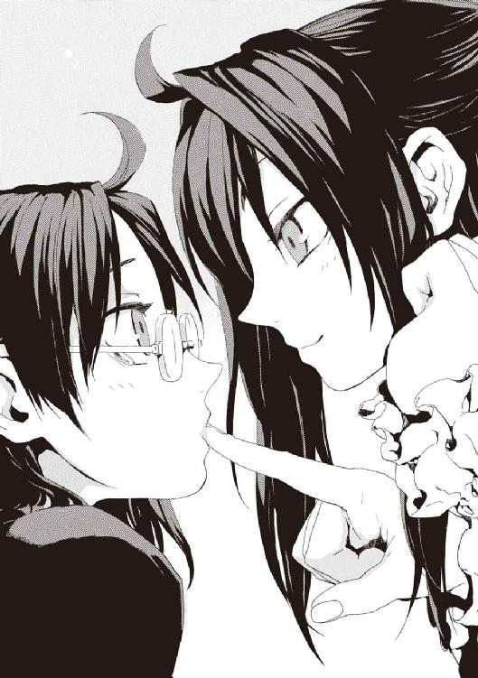
今度はメイゼルの指がレモン味になっていた。
「あんたが見たのも魔法、あんたを痛くしたのも、指をイチゴ味にしたのもみんな魔法。おもしろいでしょ？」
さっきまで恐かったものが、現金でも、鮮やかでかわいらしいものに思えた。
「魔法ってすごい......ね」
人差し指をまた鼻先に差し出された。紀子は自然にぱくりと口に入れていた。
「むぐ、キュウリ味だ」
「......スイカよ」
背の低いクラスメイトは、いたくプライドが傷ついた様子だった。
こうやって魔法で味をつくったことが、小学校に戻ってこなかった武原先生のことを追及させないために思えた。いっしょにアトランチスに亡命したのだから、彼も魔法に関わっているはずだ。
「どうしたの？」
なのに、紀子は本人に聞けなくて、かわりに赤ちゃんのように指を強く吸った。武原先生のことが、メイゼルにとって特別たいせつな宝物であることくらい、彼女にもわかる。
「あんた、指がそんなに気に入ったの？」
「そうららいへろ」
昨日までの現実はすでに崩れて、今は別のルールが常識になっている。まだお父さんやお母さんは気づいていないけれど、世界はとっくに別物になっているのだ。
そう考えていると、部屋のドアが開いた。
「紀子ー、どうしたの、さわがしいけど──」
ベッドから身を起こした紀子は、四つんばいで、同じベッドに腰掛けたメイゼルの指をしゃぶっていた。慌てて正座の姿勢に戻ろうとする。つばが、未練を残すように、紀子の唇とメイゼルの指の間に銀色の糸を引いた。
現場を見てしまった母が、無言でドアを閉めた。
「お母さん、これはちがうのっ！」

仁たちが敵から襲撃を受けるのは、家や警護場所にいるときや、攻撃前に先手を打たれた場合といった、足を止めているときだ。それをどうやりすごし、態勢を立て直すかはいつも大きな課題だった。
逆に言えば、移動中に攻撃を受けることはすくない。アラクネ移送のとき《協会》の反対勢力らしい魔法使いたちに襲撃されたのは、非常にめずらしいことだったのだ。
仁にとって、移動の時間は、特に魔法消去が弱まってからは気持ちを整理できるタイミングだ。密室である自動車でハンドルを握っている間は、自分の運命をコントロールできる気分になる。
「寒川の魔法消去が止まってたのか」
それでも助手席に座ったメイゼルに、今日あったことを聞いていると、暗澹たる気分になった。
寒川が魔法消去能力を失ったことは、「この世界の住人は魔法消去者である」という前提が完全に崩壊したことを意味する。もしも同じような変化がそこらじゅうで起こっているなら、そのうち世界中で魔法消去が止まる。
それは〝終わりのはじまり〟だ。仁たちまで全員が、魔法消去の護りを失い、再演魔術の支配にとらえられる。その時点で完全に打つ手が無くなる。
「止まっちゃうって、そんなに嫌なこと？ 魔法消去のせいで、この世界は《地獄》って呼ばれてたんでしょ」
「再演干渉を止めるのに、制限時間がはっきりついたってことだからな」
仁は、魔法が世界に現れても解消しない渋滞を嫌って、ハンドルを切って裏道に入った。夜の国道を走る車の流量は、この世界が魔法世界になっても減らないと思えた。
車道から見る風景では、多少服装のちがう人間がいても目立たないから、何も変わっていないように見える。ただ、魔法消去を止めれば話はちがってくる。消去が弱くなっているせいで、繁華街ですら物陰やビルの屋上に魔法生物がよく潜んでいる。
魔法使いは、大量の魔法生物を放っている。自分で動いて魔法消去を受けると、頓死する可能性があるから、勝手がわかるまで用心しているのだ。
「俺たちは勝てると思うか」
恐怖を感じずにいられない。再演魔術による支配は、魔法での位置移動がもはや危険なほど強い。魔法的転移を操作されて、出現した先は、敵に取り囲まれた罠の中かもしれないのだ。そしてそれは、圧倒的に多勢な上に魔法を利用できる舞花たちに対して、仁たちはジリ貧だということだ。
助手席のメイゼルが、大きくのびをした。
「せんせらしくないわ。いつだって、そんなのわからなかったじゃない」
ちいさな魔女は、出発前にシャワーを浴びていたと思ったら、ずいぶん薄着に着替えていた。巻いていたマフラーと厚めのコートを脱いで、膝の上に置いている。
「なんでそんな薄着で来たんだ」
「自動車なら暖房ついてるじゃない。せんせは、女の子が肌の見えるカッコしてるほうがスキでしょ？」
四角く大きく開いた襟元へ仁の視線が落ちているのに気づいて、あどけない小悪魔がにっこり笑った。
座席にすっぽりおさまったメイゼルの体が、シートとの対比で余計にちいさく見えた。ここのところ、かいがいしく家事をしてもらっていたから、改めて少女がまだ子どもなのだと感じてドキリとした。
「ちょっと服を後ろに置くわ」
メイゼルが膝の上に置いていたコートとマフラーを、《剣》を収めたケースを置いている後部座席に投げ込んだ。
「なんでわざわざ」
「だって、せっかく新しい服をおろしたのに、せんせによく見てもらえないじゃない」
ひざまであるブーツを履いているせいか、もう十二月なのにスカートは短かった。
「この靴、かわいいでしょ？」
メイゼルがぱたぱたと足を動かす。
仁の自動車は、今、魔導師公館のある桜田門の中央合同庁舎２号館へ向かっている。《公館》で会議をするということで、京香に呼び出されたのだ。連絡は、今日アラクネを護送した仁が、東京に魔法で戻ってすぐにきた。倉本きずなと接触したことは、そのとき伝えはしたが、詳細はまだ話していない。
今回の戦況はこれまでと比べてすらぶっちぎりで最悪だが、ひどく単純だ。ただでも絶望的な敵に、自分たちの行動や手の内が完全に把握されていることも、相手が隙すら絶対見せないことも、結局は再演大系のサポートが鍵なのだ。
すでに「詰んでいる」状況にくさびを打ち込むには、再演魔導師であるきずなに戦列に加わってもらわないとどうしようもない。そもそも、きずなが《幻影城》への襲撃を拒絶しているのと同じ防壁を、舞花にも張れるはずだからだ。
魔法消去が完全に停止した人間まで現れだした以上、残された時間はもうすくない。迅速に行動に移るしかない。
「本当にいっしょに行くつもりか？ 俺たちは、まず聖霊騎士《極星を追う者》を破壊することを狙ってる。仕事としては暗殺と同じだから、経過は絶対に血なまぐさいぞ」
溝呂木が言うように、《極星を追う者》からの情報は確かに欲しい。だが、それだけではなく、あの聖霊騎士を母親だと誤解していたきずなの、どん底でのたうつこころにけじめをつけさせることばを、《彼女》が持っているように思えた。きずなの胸に根を張る家族という問いの答えを、《彼女》が引き出すのかもしれない。
「そんなことより、きずなとお話したんでしょ。どういうお話したの？」
「おまえ、なんで聞くのが当然の権利みたいな顔してんだよ」
メイゼルに、今度の死地には絶対に来て欲しくなかった。ちいさな魔女は、そもそも本人には罪がなく刻印魔導師になった。だが、一度戦場に出てしまえば、そんなことは関係なくなってしまう。何でもアリの場所なのだから、どんな悲惨なことも起こりえる。
「《協会》の連中は誇りが邪魔しておまえを狙い撃ちはしなかったけど、自分が正義だと思ってる連中はおかまいなしで殺しにかかるぞ。〝未来の再演魔導師〟は、目の前にいない相手にどこまでも非情になれる最悪の相手だ。あいつらがアメリカ西海岸に何をやらかした？」
現時点でわかっているアメリカ西海岸への核攻撃の被害は、負傷者約百五十万人、死者約十二万人におよぶ。テロとしては空前絶後の悲劇を、この敵はすでに引き起こしたのだ。
「たばこのにおいがするわ。せんせ、車の中でたばこ吸うなら、消臭剤して」
「シャンプーの匂いがこもってて気づかなかったよ」
あどけない魔女が、シートに体を預けたまま、くすぐったそうに身をよじった。少女の長い黒髪が、傾けたシートの生地に引っかかって乱れていた。
「せんせ、今、すごく困ってるでしょ」
身長に見合って座高も低いメイゼルが、品の良いのど元をさらすようにして仁を見上げていた。
「あたし、せんせの人生で、一番ままならないものになろうと思うの。せんせが、現実が思ったみたいにならなくて苦しいなら、あたしがもっと理不尽なものになったげる」
赤信号で車が止まった隙に、メイゼルがちいさな手を、仁がシフトノブの上に置いた手に重ねた。
「運転中に危ないだろ」
「〝ままならない〟ものとおつきあいするから、愛って必要なんじゃないかしら」
だからこそ、そこに人がいる意味があるかのようだ。
「ままならないうちに、俺はすごいところまで流されてたよ」
「家族って、離れられなくて、けれどままならないものじゃないかと思うの」
「ああ、おまえ学校での名前どうするんだよ。武原メイゼルって何だ」
「今さら？」
信号が青になったから、仁はアクセルペダルを踏んで車を発進させた。
シフトノブの上の彼の手には、少女の手のぬくもりがまだのっかったままだ。
二車線の中途半端な狭さの道路には、冬の夜だけに通行人はほとんどいない。それでも、気持ちが落ち着かなかった。
「とりあえず、その手をどかそうか」
暗い車内で、すれちがう対向車のライトを見るたび微妙に緊張した。
メイゼルが、こんなにもことあるごとに手を繫ぎたがるようになったのはいつからだったろうと思った。
「手をつないだ人がいるから、あたしはどこへだって行くのよ」
それならいっそ家で待っててくれと頼もうかと考え、どう言えばいいのか迷った。きずなにメイゼルのことを疑われたのを思い出し、ため息をつく。
「そういうんじゃないんだけどな」
仁は、そのとき背筋に冷たいものを感じた。
「手を引け！」
メイゼルの手を思い切り払い、シフトノブから左手を引っ込める。直後、彼がそれまで手をやっていたシフトレバーが、内側から裂けた。それどころか、カーナビもハンドブレーキも後部座席も、運転席と助手席の間にあるものは全部真っ二つに切断されていた。
車体を縦に大きく割られた車が、まっすぐ走れなくなってハンドルが取られた。割れた腹から臓物がぼとぼと落ちるように、部品が道路に落下する音が車体の下で鈍く反響する。
「魔法攻撃だ、なんでこんな町中で！」
バランスを失って走る棺桶と化した自動車を、立て直すことをあきらめてアクセルペダルをゆるめる。ハンドルを切って車体をガードレールにこすりつける。上下左右に激しく振動する車内で、考えていたのは通行人をはねずに停まれるかだった。
悲鳴をあげ恐怖に表情をかためて仁の車から離れようとするカップルの姿が、フロントガラスの向こうに過ぎ去った。
狭い道をスピンしてふさがないとあたりをつけてからブレーキを踏み込む。減速していた車の下部から、肺が搾られそうな金属音が鳴った。火花のしぶきが車体の両脇から上がる。急減速のせいで車体から人体を放り出すようにかかる加速から、シートベルトのお陰で引き戻される。
仁は、正気に戻ったとき、ハンドルに全身の力でしがみついていた。車が停まっていた。助手席を見ると、メイゼルが蒼白な顔でぐったりしていた。
「道路の下から攻撃された。すぐここを離れるぞ」
仁は彼女の汗ばんだ体にのしかかるようにして、シートベルトを外してやる。そして、浅い息を繰り返す少女を抱きかかえて車を出た。
クラクションが盛大に鳴っていた。後続の車も、ブレーキをかけて急停車したのだ。だが、明らかに尋常ではない壊れっぷりをさらした仁たちの車に近づいてはこない。自動車は、前輪のすぐ後ろから車体がへし折れて道路に接地していた。後輪は車輪ごとなくなっている。
外に出てようやく攻撃の正体がわかった。車道に長く薄い裂け目が現れていた。道路の底にある下水道から、道路を貫通した魔法攻撃で自動車が切断されたのだ。
「くそ、首都高に入らなくてよかったよ」
高速道路に乗っているときにこんな真似をされたら大惨事になっていた。
「メイゼル、起きれるか？ またすぐ攻撃があるぞ！」
幅八メートルほどで車線が二つある道路の脇には、ガードレールが渡されていた。仁たちの周囲には、都心にしては多くないとはいえ二十人以上の人間がいた。こんなにも人が見ている前で、車が吹っ飛ばされるなど、かつてならあり得なかった。
「あなたたちの役目は、人を救う神が降りた《約束の地》の歴史に残っていません。もう用済みなのです」
その声に、仁は聞き覚えがあった。彼らの行く手に立ち塞がるように、高校生くらいの少女が車道に立っている。
潔癖そうなその目を覚えていた。プラチナブロンドの猫っ毛を、片側でポニーテールにした髪型に見覚えがあった。
「おまえ神聖騎士団だろ！ この世界を救うんなら仕掛ける場所くらい考えろ」
騎士甲冑の少女が、二十一世紀の都市にはまったく似合わない剣を腰から引き抜く。
「上級騎士リュリュ・メルルです。もうお忘れですか」
メイゼルとせいぜい三、四歳しか違わない、まだあどけない頰の少女が、表情を硬くしていた。
リュリュの剣が本物であることに気づいて、まわりの人々が悲鳴をあげて逃げはじめた。
「こんな人だらけの場所でやる気か」
「夏に会ったとき、聖騎士側に来ていれば、こんなことにはならなかったのに」
仁は、手が汗ばむのを感じていた。《神》の降臨以後の魔法消去では、もうおそらくリュリュの魔法を消去しきれない。
顔では平静を装いながら、ぐったりしたメイゼルを揺り起こす。ふと嫌な予感がして、仁は魔法消去を発動した。まるで何かの魔法が覚醒を止めていたかのように、ちいさな魔女がぱっちりと目を開く。
「せんせ、飛ぶわ！」
仁が消去を切ると同時に、地面に円環大系の認識の影である魔法陣が浮かび、彼らの体が磁力で弾かれる。これまで経験したよりもクリアな加速感に引っ張られて、メイゼルを抱えたまま宙を舞う。
──まだ街路には市民がいて、魔法消去を受けているというのに。
「魔法を知らないで注目しない人間からの消去は、こんなに弱くなってんのか？」
ぞっとした。
夜を焼いて大火事のように燃えさかっているはずの魔炎の明かりが、今日はせいぜいたき火ほどにしか見えない。その中途半端な光に照らされたリュリュが、空にいる彼を見上げた。
次の瞬間、衝撃が、仁の腕に叩きつけられた。骨が折れるかと思った。ただの牽制の魔弾に、消去を貫通されたのだ。
戦闘経験ではっきりとわかる。この威力は、かつてなら一にらみで数十発でもまとめて焼き払っていたレベルのものだ。
「つかまって！」
夜空を貫いて、メイゼルが一直線に飛ぶ。今まで仁たちがいた場所を、鳥のかたちをした概念魔弾が撃ち抜いた。
メイゼルの円環大系は、既知魔法世界最高クラスの出力と高い機動力を誇る。ビルの屋上をかすめて、花火のように魔炎を曳きながらメイゼルが飛翔していた。
「魔法を使いやすくなってるのは、あんただけじゃないのよ！」
円環大系の魔法使いは、電子を《魔力》として操る。人工稲妻やプラズマなど高い威力の魔法を駆使するが、光を発するため目立ちやすく魔法消去を受けやすい。
メイゼルが集めた電荷が、気体の絶縁を破壊しながらリュリュを叩いた。街灯が側撃を受けて割れる。
落雷のような轟音をあげ、夜空に閃光をまたたかせても、消去の影響はほとんどない。
「正面から戦おうとするな。魔法消去なしで勝てる組み立てを考えろ」
仁は、円環大系の防御の弱さが不安だった。これまではその穴を彼が消去能力で埋めていたが、魔法消去はもはや高位魔導師に通用するものではなくなっている。
リュリュは、高電圧の放電を受けても傷ひとつ受けていなかった。聖騎士たちのあつかう神音魔術には、《光背》と呼ばれる強力な万能防御魔術がある。
「わたしひとりにも勝てなくて、本当に神聖騎士団と戦うつもりだったのですか」
夜とはいえ、東京の市街地だから周囲には常時百人以上は人間がいて、あらゆる魔法が感覚されている。《光背》も消去を受けているのに、ほとんど減衰すらしていない。
十二階立てのマンションに着地して、仁たちはリュリュを見下ろす。ここからだと魔炎に包まれた少女騎士は携帯電話ほどのちいささでしかない。昔ならたいした相手ではなかったリュリュが、はっきりと今は脅威だ。
仁は抱き上げていたメイゼルを下ろした。
「無駄な危険をおかさなくていい。無理をするくらいなら、魔法で逃げるほうがマシだ」
「ダメよ。魔法的転移が作動しないの。何か魔法で封じられてる」
舞花が再演魔術で、メイゼルの転移魔術を封じている可能性があった。だとすればこの状況は、逃走までの牽制がてら、仮想アンゼロッタ戦のプランを練れる好機なのかもしれなかった。《降臨》後の世界でも、早急に有効な戦闘マニュアルは組み立てねばならない。
「悪いが、俺のほうでも消去を試す。《光背》をどの程度削れるか確かめてくれ」
仁は、メイゼルに測定を頼むと、魔法消去を作動させた。リュリュを護っている防御魔術にあたりをつけて視線を注ぐ。
「せんせ、燃える速さはさっきまでの十倍くらいになったけど、こんな調子じゃ、たぶんあの強度の魔法は消しきれないわ」
リュリュの声は、本来、会話には遠すぎるはずなのに、ひどくよく通った。
「わたしくらいの手頃な弱さの相手で、戦い方を試そうと考えていますね」
三ヶ月前の少女騎士は、明らかに仁より格下だった。だが、今は彼女の物腰ひとつひとつも自信に満ちている。
「現実を、思い知ったほうがよいのではないですか」
リュリュの手に、かつて再演のバベルで倉本慈雄が使おうとした神音魔法具があった。聖騎士たちは、強力な魔法を戦闘中に確実に使うため、自動で神音楽曲を奏でるオルゴールをよく用いる。彼女は、仁たちが接近をためらっていたうちに神音楽曲を演奏していたのだ。
魔法消去を発動しているというのに、それをものともせずに大魔術が発動されようとしている。無音神音という、消去に対抗する技術が元々オルゴールに仕込まれていたとはいえだ。今の仁の消去能力では、魔術の行使を止めようがない。
「距離を離すぞメイゼル！」
仁の警告を切り裂くように、リュリュが神音楽器を高く差し上げた。
「もう遅いです！」
少女騎士のオルゴールを中心に、周囲の冬の冷風が急速に圧縮されてゆく。仁が魔法消去を発動しても風の勢いは止まらない。だから、消去を止めて状況を確かめた。
「メイゼル、撤退だ」
魔炎を巻き込みながら風の圧縮は止まらない。仁はこの過程を踏む魔法を知っていた。
薄着の肩を抱いて、メイゼルが呆然と道路を見下ろしていた。戦闘経験が豊富なわけではないちいさな魔女は、仁の魔法消去が通じない状況に適応できていない。それは致命的な行動の遅れだった。
気流がほどけたとき、地上には半透明の騎士がいた。リュリュの騎士装束よりもさらに古風な、歴史画から引き抜かれてきたような重装の騎士が、二十一世紀の東京に現れていた。
「このくらいのレベルの聖騎士が、個人でここまで大層なものを」
それは魔法でかためられた大気の体を持つ過去の英雄、《聖霊騎士》だ。
「こんな魔法まで、こんな人のいるところで使えるの......？」
メイゼルはまだ危機の度合いを読めていない。仁は、少女の肩を揺すった。
そして、仁は落下防止の金網が張られただけの殺風景な屋上で、誰もいなかったはずの背後を振り返った。
白を基調とする通常の聖騎士装束とは逆の、黒い甲冑の《聖霊騎士》が夜風をまとって立っていた。自分の身長ほどもある槍型の神音楽器を悠然とかついだままだ。
一瞬でビルの屋上まで移動してきたのだ。
〈お嬢ちゃん、さっきのは召還術式じゃない。あの楽器には、俺を再構築する召還魔術のほかに、ただ呼び寄せるだけの魔術とか、補助用の魔術も入ってるんだな〉
仁は過去の英雄の無駄口を、ネズミが虎の前で震える気分で聞いた。神音大系の位置移動魔術は、本来は跳躍する目的地の神音を知っていてはじめて発動する。つまり瞬時に道路から初見の場所だろうここまで移動したこの騎士は、その限界を突破しているということだ。仁の恐怖が正しかったことを、聖霊騎士自身の名乗りが裏打ちする。
〈名乗り忘れてたな。聖霊騎士、0003番。《黒騎士》ユーグだ。なんとも、まさか魔法消去者だらけの場所に、俺たちが堂々と出て来られるようになるとはね〉
仁は、せめて先手を取ろうと、ジャケットの下に吊した脇ホルスターから拳銃を引き抜き、聖霊騎士を撃った。
「俺を置いて逃げろ！ どうやら俺もこいつの力を見誤った」
聖霊騎士のNo.0001からNo.0015までは、《はじまりの十五騎士》と呼ばれる、神聖騎士団の屋台骨を作った魔法史に残る大英雄だ。このレベルの敵と戦闘するなら、冷静に判断して今の彼は、メイゼルといっしょに動けば足手まといでしかない。
「せんせ......こいつに攻撃されたら」
「俺じゃこいつの攻撃は防御しきれない。でも、俺がおまえと動いたら、先に狙われるのは機動力を担当してるおまえなんだよ。時間稼ぎしてる間に、増援を呼んできてくれ」
自分の実力をゼロと考えねばならないのは、久しぶりだった。だが、自然に腹は据わった。
メイゼルを背中にかばうべく前に出て、《黒騎士》に銃口を向けて引き金を引く。魔法消去を発動する。
《黒騎士》の姿が夜景から白く切り抜かれたように、仁の脳が錯覚する。それは魔法消去が防御魔術を貫通できていないということだ。だから、銃弾は敵に傷一つつけられていない。それどころか、魔法消去が完全停止した人間まで出ている以上、今このとき仁の消去が現在進行形で弱体化しつつあるのかもしれないのだ。
夜の街に銃声が響いた。これだけの騒ぎを起こしているのに、警察は来ない。
《黒騎士》ユーグは防御すらしない。
一発撃つたび、自信が揺らぐようだ。仁は、魔法消去と銃弾の組み合わせで、多くの魔法使いを恐怖させてきた。彼は《沈黙》と呼ばれて、一目置かれるようになった。
訓練を重ね経験を積み、いっぱしになったつもりだった。人を救えると思いこんでいた。今、新世界がやって来て、彼はまた世界を変えるなど想像もできない無力なものに戻っている。
実力の片鱗すら出していない聖霊騎士に、聖騎士将軍アンゼロッタと対峙したとき以来の焦りを覚えていた。手の内が汗でびっしょりになっていた。冷や汗をかきすぎて、シャツが肌に貼り付いていた。
現在日本にいる中では最高位の騎士であるアンゼロッタは、どうしようもない絶望的な敵だった。だが、それでも機動力はなかったのだ。
背後から聞こえる、守りたい少女の声は震えていた。
「せんせ、こんな終わり認めないわ」
「おまえがこいつの防御を突破できそうな出力で撃ったら、どれだけ無関係の人間を巻き込むと思う。俺はおまえを大量殺人犯にさせるつもりはない」
それ以前に《黒騎士》は、おそらくメイゼルの直線的な攻撃を難なく回避する。
魔法消去を発動したままだから、魔法を準備しているかもしれないメイゼルを振り返れなかった。ちいさな魔女がきっと怒っているから、気休めでも付け加えた。
「俺の魔法消去は、他のやつの十倍くらいは出てたんだろ。一律でみんなと同じ強度に下がってるわけじゃないなら、俺のはもっと上げられるかもしれないだろ」
〈一理はあるが、その強度の消去じゃ、俺の相手は無理だぜ〉
仁には白い影に見える《聖霊騎士》が、かついでいた槍を鋭く横薙ぎに払った。
屋上の古いコンクリートの床を、粉塵をあげて砕きながら、見えない波紋が押し寄せる。速度は遅いが、尋常な威力でないことは明白だった。
「倉本慈雄にその魔法を教えたのは、おまえか」
仁は、すべてがはじまった再演のバベルで、この神音楽器の元の持ち主が同じ攻撃を放ったのを、覚えていた。
「せんせ！」
メイゼルが悲痛な声をあげた。仁は奥歯を嚙んだ。犬死にか、まだ子どものメイゼルに最後まで頼るのか秤にかけて、彼はつかみ取ったのだ。
「メイゼル、上だ!!」
魔法消去を切って、後ろに跳躍する。
仁の体に、上向きのすさまじい加速がかかる。メイゼルが磁力で弾いてくれたのだ。
一瞬で、夜空高くから彼らは街を見下ろしていた。さっきまで彼がいたビルの屋上が、灰色の土煙に包まれていた。地震が起こったように、町中の建物がちいさく揺れていた。さっきの魔法による負荷でビルが崩落したのだ。
浮遊感を味わう時間はなかった。足下から、高速の魔弾が、仁のすぐ背後にいる大切なものを狙って飛んできたからだ。
着弾直前、仁はメイゼルのちいさな体を乱暴に抱きかかえてかばった。その背中を、破裂するような衝撃が打った。
気づいたら、仁は道路に横たわっていた。だから、魔弾を受けて意識が何秒か途切れたのだとわかった。
「無事か、メイゼル」
起き上がると、全身が痛んだ。あたりは瓦礫だらけだ。道路は裂け、もはや都市に人々が暮らした生活の気配はない。
頭がぐらぐらした。それでも舞い降る粉塵の中、まずちいさな魔女を捜した。
かわいらしい咳が聞こえて、ほっとする。
夜空を白い光が焼いていた。
見上げると、地上五十メートルほどの空中で、閃光が周囲に強烈な明かりを投げていた。魔法で作られたものらしく、光球は激しい魔炎にまとわりつかれてちいさくなってゆく。
彼らがさっきまでいたビルが、崩落の無惨な傷口をさらしていた。ビジネスビルだったお陰で、夜遅い今まで残っていた者はいないようだった。仁は、犠牲者の遺体がすくなくとも見える場所にはないことを確かめ、本当にひとりもいないことを祈る。
ビルにもたれかかって、埃だらけになったちいさな魔女が、それでも不敵に微笑んだ。
「これだけ派手にやったら、さすがに通報くらいされてるわ。あとどのくらいで、この世界の警察が助けに来るかしら」
さっきの魔法の照明弾は、メイゼルが打ち上げたものだったようだ。
《黒騎士》は地上に降りてきた。出会ったうちで最強の騎士かもしれないこの男と勝負するなら、せめて車の後部座席に置いた《剣》が欲しかった。しかも背後にはリュリュもいる。蹴散らされる側に立たされて、勇気を試されているようだった。
「警察が来てもどう転ぶかは出たトコ勝負かもな。こんな短期間でここまで魔法消去が弱くなるのは、さすがに予想外だ」
《黒騎士》が、一振りでビルを崩落させた神音楽器の槍をかつぐ。リュリュと聖霊騎士に挟まれて、仁たちは不用意に動けない。
〈しゃーねえさ。魔法消去も《この世界の魔法》の一種だからな。これまでは《そういう魔法》がたくさんあって混線してたから、法則自体が単純でクソ強い魔法消去が表にあらわれてただけだ。もう再演干渉で、この世界の自然秩序のチャンネルは再演大系に固定された。普段意識して《魔法》を使ってない魔法消去者は、能力をなくすさ〉
仁には、《聖霊騎士》が戦闘中に無駄口をたたく理由がわからなかった。だが、この騎士は、溝呂木説に近いどころかその先の話をしている。神聖騎士団黎明期の騎士が、カオティックファクターをこう認識していることが、とてつもなく重要だった。
「チャンネルの合わない混線状態？ 再演魔法で、世界秩序が魔法的に固定......」
〈実体化してから勉強したんだが、ことばの使い方は合ってるよな〉
「《黒騎士》どの！」
リュリュが、積極的に戦わない《黒騎士》を非難した。
〈死ぬ前はこういうのが専門だったんだ、気持ちよくしゃべらせろよ〉
「この期に及んで、聖霊騎士に封じられることを死ぬなどと！」
少女騎士は、仁たちの前後を挟んだこの状態から、早く止めを刺したがっていた。だが、《黒騎士》が動かないから勝負をかけられない。
〈《聖霊騎士》だって《神の門》だって、開発者世代に神聖視しろってのも限界あんだろ〉
聖騎士は一枚岩だというイメージをひっくり返すこの《聖霊騎士》のことばは、たぶん決定的な情報だ。
「チャンネルが合わない......？」
仁には、そこを逆転の足がかりとする具体策はまだ見えない。ただ、この世界の古いルールが死んだという現実を、頭で理解した思いがした。
《黒騎士》が、かついでいた槍をかまえる。
〈そろそろちょっとはマジメにやらないと、〝連中〟が嫌がるか〉
暗い視界から聖霊騎士が消えた。
加速魔術や位置移動魔術を、今の魔法消去では禁じることができない。警告をメイゼルに発する暇もなかった。
だが、夜風は、速やかな死を覚悟した仁の脇を吹き抜けた。
剣を激しく打ち合わせる鈍い音がした。逆巻いた風の中心は、仁の背後だ。リュリュがいるそちらを振り返ったとき、仁は予想外のものを見た。
神聖騎士団を破門された騎士エレオノール・ナガンが、剣を抜いてリュリュに打ちかかっていたのだ。
エレオノールの斬撃は、横から差し出された《黒騎士》の槍に受け止められていた。
「どうして？ お姉様」
「悪いとは思いましたが、《黒騎士》殿を呼び寄せさせていただきました」
剣持つ歌姫の青い瞳は、確信に満ちてまっすぐ目標を見据えている。
エレオノールが剣を跳ね上げて、《黒騎士》の槍をいっしょに巻き上げる。体勢を立て直そうとした超常の騎士に、歌姫が青い光を灯した左手をかざした。
この青い聖霊光は、魔術楽器だ。その精妙な指の動きで神音が奏でられ、《黒騎士》ユーグを周囲の大気ごと弾き飛ばした。
「表向きの平穏の陰で戦いを起こすのは神聖騎士団だと、確信していましたが、あなただとは思いませんでした」
エレオノールのことばの裏にある毒に、リュリュは気づかなかった。
「リュリュ、私をアンゼロッタ・ユーディナのところへ連れて行きなさい」
「あなたに、アンゼロッタ様と会う理由などないはずです」
かつて部下だったからこそ、神聖騎士団の正義に異議をはさんで破門された歌姫への、リュリュの態度は複雑だ。とまどいと怒りと親愛の間を、ことばと表情が跳ね回っている。
「ひとりの騎士として、人として、アンゼロッタ・ユーディナを断罪に行くのです。それだけでは不足ですか」
エレオノールの声は決然としていた。
リュリュが、口元に怒り、視線に悔しさを宿して、歌姫に言い返そうと口を開いた。そして、ためらったようにもう一度歯を嚙みしめ、《黒騎士》に視線をやった。
《黒騎士》は当然のように無傷だ。だが、動かない。
「破門されたあなたが、みんなのところに行けば、異端として裁かれて刑死するだけです」
エレオノールは、決して揺らがない。
「変革のただなかで言えないことばが、いつなら神聖騎士団の人々に届くのですか」
「お姉様は、あの倉本きずなに操られているのです」
「リュリュ、私のことばを聞きも戦いもしないのですか。それなら、黙ってあなたの楽器をわたしなさい」
神音大系の魔導師たちは、位置移動のために目的地の神音を発する楽器を準備しておく。エレオノールは、拠点へ帰還するための魔法具を差し出せと言っているのだ。
仁は、今のうちに「逃げろ」と目で合図を送った。このとき、場の注意が仁たちからそれていた。すくなくともまだ子どものメイゼルからは外れていたからだ。
だが、彼女は、この期に及んでちいさく首を横に振る。ちいさな魔女の瞳には、覚悟が宿っていた。だから気づいたのだ。メイゼルには本来、《九位》を倒したことで、戦う理由が一時的になくなっていたのだ。だから、今がいつまでも続いて欲しい少女は、戦闘能力を失っている仁を自分が助けることを〝理由〟にしようとしている。
心臓が縮みそうだった。
「お姉様は、倉本きずなに操られて、あの女が安全な場所にいながら意思を伝えるためのメッセンジャーにされているのです」
「疑いを、現実から目をそらすために使うのですか。世界中が、誰かのチェスゲームの駒になっていたとしても、あなたのこころはあなた自身のものなのですよ」
そしてエレオノールが、止まっていた絶望的な流れを再び動かしてしまった。
「リュリュ、あなたこそ、なぜ彼らを手に掛けようとしたのですか。与えられた聖務は、本当に恥じることがないものなのですか」
運命が空けてくれた猶予は終わった。だから、仁はメイゼルに全力で駆け寄った。
「逃げるぞ！」
ちいさな魔女は、三度生き残るチャンスを逃した。最初は仁の状況判断ミス、二度目は彼女の経験不足、三度目は《九位》後の生き方をお互いに詰められていなかった、ちいさなすれ違いのせいだ。
まだ危機の認識が甘い少女の手をとって走る。
「飛べ！ どこでもいい。人が多い方へだ!!」
メイゼルが、仁が再三にわたって逃走しか選んでいないことを、ようやく察してくれたようだった。完全に戦闘を放棄した高速飛行で、リュリュたちから離脱にかかる。
手を繫ぐと、メイゼルが足下に魔法陣を発生させた。仁もろとも少女の体が、磁力で夜空へ打ち上げられた。
「エレオノール、頼めた義理じゃないが、足止め頼む！」
叫んだ声も、一瞬で置き去りにした。
飛翔するメイゼルの周囲から、はげしい魔炎があがった。
あっという間に雨雲と同程度の高さまで上昇してしまった。ここまでくると、もはや夜の街の建物はひとつひとつを判別などできない。地上は、街灯とビルの明かり、走る車の、光の海だ。
「きれいね、せんせ」
地上の星々からの明かりに照らされて、少女が緊張していた顔から力を抜いた。
だが、仁は恐怖をぬぐい去れなかった。リュリュのところに彼が残るべきだったと、戦闘経験が告げているからだ。魔法消去は、攻撃の着弾地点よりも、発射地点で仕掛けるほうが格段に確実性が高い。
神音魔導師たちがもっともよく使う魔弾は、概念魔弾と呼ばれる魔法誘導弾だ。その派生魔術には、バベル事件での《大気泳者》をはじめ多くの飛行魔導師を撃墜した、強烈な光線を魔法誘導する回避不能の魔法も存在する。
「できるだけ遠くに離れたいんだが、魔法での位置移動は、ここからでも無理か」
「まだダメみたい。......でも、それもいいんじゃないかしら」
空高く、彼らは風より自由に飛んでいた。足下には、東京の夜景が一面に広がっていた。
だが、見下ろして仁は絶句した。
少女の薄い上衣の腹部に、赤い光が不吉に灯っている。
魔弾の誘導マーカーだ。
メイゼルに断って魔法消去を発動した。そして、破壊できたか確かめる。視線の消去ではこんな物すら壊せなくなった事実に血の気が失せた。
だから、もう一度魔法消去を発動して、直接触れて誘導マーカーを破壊しようとした。
そのとき、仁の脇腹を衝撃がえぐった。
消去しようと注視していたから、メイゼルの腹に大穴が開くさまを目に焼き付けた。
異種の魔法大系を検知して光速で貫く、《導きの光剣》という神音魔術だと理解する。
魔法消去がほぼ役立たずになっていたからこそ成立した、一キロメートル以上向こうからの魔法狙撃だった。
重力に引き寄せられて落下する。
仁は、意識を失った少女を抱きかかえてやるしかなかった。
彼には魔法など使えない。
だから、このまま墜落して死ぬ。
だがそれはおさまりのよすぎる最期に思えた。全身がだるくて力が入らなかった。仁は魔法消去を切った。
メイゼルが助かる望みがそれしかなかったからだ。少女が自力で自分を救うにしても、きずなの介入を求めるにしても、他の誰かがそうしてくれるにしてもだ。
武原仁では奇蹟を起こせない。それだけが現実だ。
加速がついて、ぐんぐん夜景が視界いっぱいに拡大してゆく。
夜を自由落下する。大気を割って落ちる。どんな向かい風よりも激しく顔を空気が打った。
それでも、まるで──空を飛んでいるようだと思ったのだ。
仁は、ただひとり夜の真ん中で咆哮した。
美しいものを見て、まだ死にたくないと本能が突き動かされた。力の抜けた体を無理やり引き起こし、仁は、風を真っ正面から受け止めるように体勢を変える。空気抵抗でふわりと体が浮くような感覚とともに、落下の速度が鈍る。
スカイダイビングするように、空を滑る。減速したが、ふたりで落ち続けているのは同じだ。
だから、生きている時間を稼げるのは、一秒か、二秒か──。
ただ数瞬の恐怖を引き延ばすのみに終わったとしても、構わなかった。ちいさな魔女を抱いている仁が、ベストを尽くさないなどあってはならないことだからだ。
彼らと地球の間に、花が開くように円形の魔法陣が現れた。円環大系の世界認識の影だ。
魔法による磁力で、仁たちの体が急減速する。衝撃で首が折れそうになって、少女の体を離すまいと必死で抱き留める。彼女の腹部の傷から、大量に熱い液体が噴き出していた。傷の状態を見なくても、動脈を損傷したのだとわかった。
ちいさな魔女の血が、仁の服に染み込んで胸をぐっしょり濡らしていた。なおも、彼女の命があふれて、こぼれてゆく。
焦がれるような想いに引きずられて、これまでともに歩んできた少女の姿を確かめる。
彼女のあたたかい息は、血の臭いがした。
「ありがとう、せんせ──」
そして、ちいさな魔女の息は、声帯を震わせる力を失った。それでも震える唇で切々とことばをなぞる。
「あたしを、さいごまで、あたしでいさせてくれて」
ふうわりと木の葉のようにゆるやかに、仁たちは舞い降りてゆく。魔炎のオレンジの光をまき散らしながら。
「メイゼル、......メイゼル」
仁は、他にどう声をかけてよいかわからず、名前を呼び続ける。歯の根が合わなかった。それでも、自分は彼女のそばにいると。
ふたりが魔導師公館の専任係官と刻印魔導師として出会った頃、彼らはこの街の明かりと普通の生活を守るためにかけずり回った。
まだ円環大系の魔法陣は、仁たちと地上の間で、降下速度を調節し続けてくれている。
空から、はっきりと街路をゆく人が見えはじめる。仁は、メイゼルがまだ命を魔法で保護していると信じて、人々の魔法消去から少女を守る盾になれるよう体勢を入れ替える。
高層ビルの屋上の高さまで降りてきた。仁たちの体をなめてゆく魔炎の密度が濃くなった。
円環大系の魔法陣が、何度も欠けそうになっては元のかたちを取り戻す。それが魔法を使い続けてくれているメイゼルの生命のしるしだ。
その瞬間、激しい磁力が仁たちを横薙ぎに弾き飛ばした。
とっさにちいさな魔女の体をかばう。すぐそばにあったビルの屋上に、仁たちは墜落した。肩から着地したせいで、嫌な音がした。硬いコンクリートにこすられながら、すこしでもメイゼルへの打撃を減らそうとする。仁の頰が床にこすれ、何度も額を打ち付ける。
転がった挙げ句、ようやくその勢いを殺せたときには、どことも知れないビルの屋上に取り残されていた。
屋上への出入り口と給水塔くらいしか目に付くものがない。助けを求められる相手は誰もいなかった。
「メイゼル？」
かすかに届く街の光しか光源がないから、腕の中の少女がよく見えなかった。
それでも、彼女がぐったりして動いていないことは、肌の感触でわかった。
出血が激しくなっていた。止血のための魔法が機能していない。
「あ......、あ......」
仁は間抜けのように、ことばにならない音を、ただ喉から漏らしていた。
自分が泣いているのかどうかもわからなかった。
ただ、彼らを最後に弾き飛ばした不自然な横殴りの磁力は、再演大系による介入でしかありえなかった。メイゼルの生命保存魔術を止めたのも、きっと再演魔術だ。体力的に限界の彼女には、もう一度魔法を試す余力などない。
苦しみ足搔くふたりを監視していた何者かが、メイゼルを操作して魔法を使わせたのだ。
仁は、まばたきも忘れて目を見開いたまま体を起こした。彼女を助けなければならない。子どもが傷ついている。救われるべき命が、失われようとしている。寂しい冬のビルの屋上で、救いの手から見えないように隠蔽されてだ。まるであらゆるものがメイゼルを見捨てるように操作されているように思えた。
ジャケットのポケットから携帯電話を取り出した。救急車を呼ぼうとした。
そのとき、足下の道路のほうで激しく救急車のサイレンが鳴っているのに気づいた。何が起こったか混乱している間に、救いの手に思えたサイレンが遠ざかっていった。遠くに巨大な灰色の煙をあげるビルがあった。
救急救命センターに繫がった。住所がわからなかったから、言われるままにビルの特徴を伝えて、位置を特定した。それでも、大規模なビル火災があって救急車の到着がすこし遅れると伝えられた。
電話を切って最初にしたのは、屋上の入り口に行って銃で錠を壊すことだ。頭がおかしくなりそうだった。
世界中が、少女を死なせるように誘導されているかのようだ。
最後の祈りをこめた生き残る努力すら、再演大系の介入で掠め取られて。
ここでメイゼルは死ぬ。
「おまえか、舞花」
軽くなったようなメイゼルの体を、よろけながら抱き上げた。
スカートから伸びる足が血まみれだった。赤黒く液体のしみた服から、床に重い滴が落ちる音を聞いた。
静かに火が消えるように、感情が静かになってゆくようだった。
腹の底から、何もかもぶち壊してやりたい激情が押し寄せた。そして、全速力で走って疲れ切ったように、波が引くように胸を切る悲しさに震える。
屋上のドアを開いて、非常階段をおりてゆく。人の気配がなかったから、エレベーターに無駄な期待はしなかった。
非常灯しかついていない暗い階段を、一秒でも早くと祈りながら降りてゆく。頭が痛くなるほど、靴音が高く反響する。
ちいさな魔女との楽しかった思い出は、奇妙なくらいよみがえってこなかった。
ただ、どうしようもなく腸が煮えくりかえっていた。なのに、その激怒は叩きつける場所を求めず、血になって体を巡るようだ。
刻印魔導師の百人討伐をやりとげられると、ちいさな魔女は誇りを貫いた。仁も、犠牲を払えば、努力を尽くせば、希望はあると信じていたのだ。
だが、メイゼルがこんな目に遭っているのは、〝未来の再演魔導師〟たちが彼女を殺したいからだ。彼女が使う絶対破壊魔術、《螺旋の化身》が恐いから、歴史の舞台から排除しようとした。
勝ちのないイカサマの勝負に、メイゼルは付き合わされた。誰にも平等に非情で、チャンスだけはあった古い秩序は死んだ。今の再演秩序はそう願われた者がかならず殺される世界だ。
暗い階段を、仁は、少女を抱えたままどこまでも降りてゆく。
一階に着いた。何分かかったかは知らない。ただ、彼の中にあった濁った何かが固まるには、充分な時間が経った。
彼の息も、血の臭いがする気がした。
廊下を、人に会う可能性を無視して歩いた。明日があることすら考えてはいなかった。
停止した自動ドアに進路をふさがれたから、拳銃で穴を空けて蹴破った。セキュリティには引っかかっているはずだが、警備員すらも来ない。玄関のもっとも分厚いガラス扉に銃を向けたとき、仁の視界に見覚えのある顔の少女が入った。
「《沈黙》よ！ アリューシャの娘が重傷なのですね」
さっき足止めを頼んだエレオノール・ナガンだった。《導きの光剣》と、墜落するメイゼルからあがる魔炎が見えていたのだろう。律儀にも、メイゼルを心配して来てくれたのだ。
仁は、ため込みすぎた感情が急に他人と意思疎通できる温度まで下がったせいで、頭に霧がかかったようで、ことばが出なかった。エレオノールが白光を灯した剣で、玄関の分厚いガラス扉を切断した。
「まだ生きているのですか」
「主要な傷は、腹部の貫通創がひとつだ。ただ、動脈が破れている。出血はもうすぐにも処置する必要がある」
言えたのは、事務的なそれだけだった。
「倉本きずな！ こちらを観測しているなら、援護願います!! 魔法で位置移動しますので、〝彼女たち〟による転移封じを解除してください」
エレオノールが取り出した神音楽器を鳴らした。
そして、再演の指し手たちが操る運命は、最後の罠を発動させた。
風景は一瞬で切り替わった。
彼らが現れた場所は、施設の内部らしい巨大な空間の内部だった。骨組みと屋根の鋼材がまるだしの天井は高く、山形になった一番高いところは二十メートルほどもある。幅はすくなくとも七十メートル、長さも八十メートル以上はある。天井に設置された強力なライトで、仁たちは照らされていた。床はコンクリートの打ちっ放しで、講堂というより巨大な倉庫のようだ。
どこにある建物かはともかく、神聖騎士団に関わる場所であることは明白だった。
閲兵式もさながらの、びっしりと整列した千人を超える騎士に迎えられたからだ。どこを見ても完全武装した聖騎士だらけだった。
仕舞われたゲームの駒のように並ぶ騎士の列は、仁たちの正面から、幅五メートルほどの空間を空けていた。一直線に割れたその先には、ふたりの人物がいた。
完全装備の騎士隊にあってただひとり軽装の、すらりとした背の高い黒髪の美女がいた。機械化聖騎士師団を率いる聖騎士将軍、《至高の人》アンゼロッタ・ユーディナだ。
そして、隣に女王のように立つのは、シンプルな装いの十歳にもならない女の子だ。再演魔導師となった彼の妹、武原舞花だった。
仁たちがぼろぼろになり、メイゼルが戦闘では足手まといになる瀕死の重傷を負うまで待ってから、魔法で誘導されてきた。これまでで最もけったくそ悪い死地だ。
「よくもここまで仕込んだものですね」
位置移動魔術を使ったエレオノールの声は、感情を沈めるために低く深かった。彼女の魔法を乗っ取ることで、〝未来の再演魔導師〟たちは、仁たちをここに引き寄せたのだ。
「罠というものは、脱出不能なように作るのです」
建物の向こう側の端にいるアンゼロッタの声が、手の届く距離で発せられたようにクリアに聞こえた。
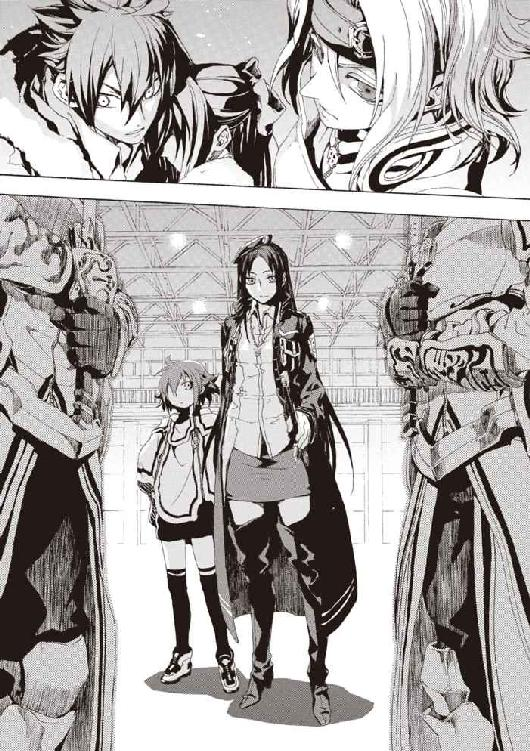
仁は、メイゼルの体を床におろした。血の染みたスカートや血の筋が走ったストッキングが、ちいさな魔女も生々しい肉でできていることを思い出させる。
メイゼルがこんな目に遭うことが、どうしても納得できなかった。自分の欲のために弱者を犠牲にすることを〝悪〟だとするなら、新しい世界を創ったアンゼロッタたちも邪悪に見えた。
「おまえらの自慢はどうでもいい。メイゼルを、こんなふうにさせたのはおまえらだな」
仁は、すでに抜剣している聖騎士たちの列に目もくれず、正面に待つアンゼロッタと舞花へまっすぐ歩き出す。
聖騎士将軍が、自然な動きで、かばうように舞花の前に出た。
「メイゼル・アリューシャが《憎悪の女王》イリーズから受け継いだのは、神殺しの魔法です。それは、《約束の地》のありように不満を持つ者たちを、これからいやおうなく引き寄せてゆきます」
アンゼロッタ・ユーディナは疑問形で話さない。答えがないかのような難しい問題も、全知であるかのように断言する。
「そうなるかもしれないからなんて理由で、殺しておくのか」
「危険がおおきいものを、秩序を守るため排除しておくのは合理的な措置です。聞き分けなさい。魔法使いとして生きるとは、秩序を受け容れてその上に人間性を築くことですよ」
《至高の人》は、慈悲深い微笑を浮かべたままだ。彼女は、世界や神意のために、どこまでも残酷になれる。
「重い枷を背負った〝未来の再演魔導師〟たちが、歴史から《螺旋の化身》を取り除けと直接啓示を出したのです。人を救う秩序がそう求め、未来の再演魔導師たちが下した決断は、尊重されるべきです」
堂々と彼女は言いきった。
「何が人を救う神だ。こんなものはただのえん罪だろ」
嚙みしめた歯の間から息が漏れた。
メイゼルを背後に残して、アンゼロッタたちへと近寄る理由など、理性で考えればない。だが、何も持たない拳を、力の限りに強く握っていた。足が前に進んだ。
他の誰が知らなくても、武原仁は知っている。ちいさな魔女に無償の好意を捧げられ続けた、武原仁は知っている。
「ふざけるな」
メイゼルは、《螺旋の化身》を滅多なことでは使おうとしなかった。彼女は誇り高く情に厚くわがままで、そしてきちんと他人のことばを聞いてくれる人間だ。その手にきっと素晴らしい未来をつかめた子どもなのだ。
彼女が、誰にも知られず葬られるなどという、馬鹿な話があっていいはずがない。
「ふざけるなッ！ おまえに何がわかる」
ただの無力な人間の咆哮だ。
殺気のこもった視線が浴びせられるのを感じた。本能が危険を感じて全身の産毛を逆立たせる。
魔弾が一発飛んで、横合いから仁の横腹を激しく打った。体がえぐれたような衝撃で、筋肉が波打った。それでも、よろけながらなんとか踏ん張った。騎士隊の隊列を見た。押し黙った騎士たちのどこから撃たれたのかわからなかった。
気が遠くなりそうな激痛の中、仁は晴れ晴れと笑った。大きく腕を広げて、強い明かりを注ぐ天井を見上げた。
「誰だ？ 俺が目障りだったから黙らせようとしたのは、誰だ？ 名乗り出てみろよ。過ちを犯したのは誰だ？ 口をつぐんでいるのは誰だ？ これがおまえたちの作ろうとしている救われた世界の姿だよ」
これは秩序を守るべきと自認した、再演魔導師たちと神聖騎士団によるえん罪だ。
「神が人間を救うなんて、噓っぱちだ」
涙がこぼれそうだった。
エレオノールはメイゼルのいた場所のそばで、かがんだまま動きを止めていた。再演干渉で動きを封じられているのだ。仁もちいさな魔女を振り返ろうとすると、首が痙攣して動かなくなる。再演魔術が術者本人と関わりの深い人物に効きにくくなる性質──再演抵抗を突破するほどの魔法を、浴びせ続けられているのだ。
「神がいようが、人間のやることは正しくなんてならないだろ。このザマを見ろ。どんな恥ずかしい真似をしても、口をつぐんでれば神サマが尻ぬぐいしてくれるってか？ 人間のしでかした間違いを、神の正しさでごまかして、間違いを隠そうとしてるだけだろ！」
えずきそうになって、体を折って唾を吐いた。床に落ちたのは、ほとんど血だった。
顔を上げると、思ったよりもアンゼロッタが近くにいた。
「迷いがある者は祈りなさい。正しさに確信のない者が、彼を撃つことは許しません」
舞花の前を離れて、聖騎士将軍のほうから、こちらへ向けて歩きだしていたのだ。
仁は、アンゼロッタに斬られるのだと悟った。千人の聖騎士の殺意より固く鋭い死の予感が、彼の足を縫い止めた。それでも、かためた拳をほどくことなどできない。
魔法消去が機能すればと願った。《黒騎士》ユーグが言ったようにチャンネルが合っていないのなら、もう一度、それを合わせ直して、魔法の天敵たる力を取り戻したかった。
消去を発動する。
アンゼロッタは、彼の抵抗など気にも留めず、輝かしく微笑んだままだ。
「なぜこの世の悲劇を止められないことを前提にするのですか」
「世界は変わらない。どれだけ同じことを繰り返したと思ってるんだ」
衝突して殺し合うために、真っ向から足を進める。《至高の人》の信仰の歓喜は、揺るぎもしない。
「すでにあなたの知る残酷な世界は存在しません。《神》の降臨から二週間、この世界ではひとりの餓死者も出ていないのですよ」
噓だと思った。
ただ高みから見下ろすように、アンゼロッタが透明な視線を彼に注ぐ。
「三年以内に、この世界の戦争はすべて終わります。再演秩序は人間のこころを直接操作できないため、わだかまりが消えるには時間がかかります。ですが、憎しみの元凶である貧困は、資源と労働を配分することで、早急に根絶できます」
「夢みたいなことを言うな。できるわけないだろう」
胃のあたりがむかついた。
再演秩序の世界と彼の知る現実世界と、どちらがよいかと迫られているようだ。
「夢ではありませんよ。急場をしのぐための資源は、魔法世界が出すのですから。物資は魔法使いが作り出せますので、枯渇もしません」
しあわせがここにあるように語られて、無性に腹が立った。背後で守るべき大切なものが死のうとしているのに、エサをもらってよろこんでいたら、まるで飼われる動物だ。
「そんな単純な話かよ。そんなんじゃないんだよ！」
「地球では、顔をつきあわせすぎて争いが起こるというのですね。そのことも、〝未来〟では宇宙へ生活圏を広げてゆくことで解消されます」
仁の頭が一瞬、話についてゆけなかった。
見果てぬ夢を現実として語るアンゼロッタは、非の打ち所がなく立派な人間だった。
「魔法使いの協力があれば、宇宙で生きるのは簡単です。あなたが知る科学では達成できない未来が、魔法と共存することで、誰の前にも開かれるのです」
アンゼロッタは正しい。理屈では、《九位》くらい高位の円環魔導師なら、その無限の寿命と生命維持能力と推進力をもって、生身で太陽系を脱出すらできる。
「人を救う自然秩序が降臨した今、この世界は自然にそういうものになります。まだ道徳的に間違っていると感じられる感情とも、将来は折り合いをつけられます。そのための社会道徳が、再演世界では発見されてゆくからです。今や自然法則が人を救うのですから、世界について人が知ろうとする営みが、法則を邪魔しない真実にたどり着くことは明らかです」
これが神聖騎士団が一万年の戦いの中で練り上げてきた、戦う理由であり、明確な救いのビジョンだ。だが、それでも怒りは、正しさでは止まらないのだ。
「そんなきれいごとが実現するかなんてわからない。再演魔術で人間を縛ってることだけは現実だ。どう信用できるって言うんだ」
「矮小なものにこだわって、大きな悲劇を見捨てる自由など求めてはいけません。縛られていない自由な魔法使いにとって、この世界の住民が《人間の枠外》でしかないと、専任係官だったあなたはよく知っているはずです」
《至高の人》の後ろには、神聖騎士団の歴史がある。騎士たちはアンゼロッタを通して、すべてが《神》につながっている満ち足りた世界を見る。我が身のちいささを知り、おおいなるものに崇敬を抱かせる幻視だ。
「救われる者の数は、間違いなく正義です。人を救う神が現れ、無駄に死ななくてよくなる人間が何十兆、何百兆といるのです。これだけの人命を前に、動かないことはできません」
それでも、仁の足は止まらないのだ。拳の届く距離まで。銃弾が致命傷になる距離まで。
神聖騎士団の祈りの歴史の果てに、この《至高の人》というカリスマがいる。
「だったら何をしてもいいのか」
「人間はどれほど賢くなろうと、正しいことなどできません」
仁は、悪が倒れ、正義が為されることへの期待を、騎士たちからひしひしと感じた。
あらゆるものを救うことなどできない。あらゆるものがしあわせになる世界など来ない。だからこそ、信念を貫いて仁たちは生きてきた。だが、もしもすべてのものが食い詰めず貧しくもならないのが再演世界なら、仁の信念ごときではアンゼロッタが告げた以上を実現できることなど想像もできない。
それでも、仁は、膝を屈することができない。
「知ったことか。人間は、正しくても悪でも、過ちを犯すんだよ」
「だからこそ人間には、悲劇を最小にする《神》が必要なのです」
同時に、仁とアンゼロッタは足を止めた。互いを隔てる距離はすでに二メートルを切り、踏み込めば殴れるからだ。
「それがどうした」
少女の蒼白な顔が、まぶたに焼き付いて離れない。赤黒い怒りが、腹の底で渦を巻く。
「それでもメイゼルが生きてなきゃ、俺は嫌なんだ」
黒髪のアンゼロッタが、静かに抜剣する。処刑の見届け人である、一千の騎士たちがどよめく。
仁は武器を抜かなかった。脇のホルスターには拳銃があり、スラックスのベルトに固定したホルスターにはナイフが差してある。だが、どちらもこの戦いには合わない気がしたのだ。
「よろこび、笑いなさい。あなたを撃つ騎士はいませんでした。あなたは千人の騎士たちから弱さを引き出したのです。この経験を糧に、救われた世界はより強固になるでしょう」
彼を突き動かしたのは、勝算でも道理でもない。澄ましかえったアンゼロッタたちを殴りたかったのだ。だから、ジャケットの胸ポケットから煙草とライターを取りだし、悠々と火を付けた。
「笑えだ？ おまえなんかに言われなくても、俺は笑えるよ」
あざけるように唇の端をあげた仁の顔を、衝撃が打った。弱まった魔法消去などないもののように魔弾が突破してきたのだ。
一瞬、目が見えなくなった。
だが、一撃で文字通り木っ端みじんに仁を砕かれるかと覚悟していたのに、仁は吹っ飛ばされたが生きていた。
東京を瓦礫からやり直させようとしたテロリストの国城田を思い出す。踏み外して死へ向かってしまったグレンや東郷の姿が浮かぶ。
みんな、最期を迎える前、こんな衝動に身を焼かれていたのかと思った。仁は、倒れていてもいいはずなのに、先もないのに痛む手足に力を入れて立ち上がった。
魔法消去を、もう一度発動させ直す。次こそは、あの《聖霊騎士》が漏らしたチャンネルとやらが魔法消去にきちんと合うだろうかと、ぐらつく視界の中で考えていた。
車に轢かれたかと思った。
二発目の魔弾の衝撃に耐えきれず、転がって、床にたたきつけられた。
試すごとに、魔法消去がかえって弱まっているかのようだった。
だが、死ねなかった。仁が斃れればメイゼルも死ぬ。こんな終わりを認められるはずがなかった。
目が見えていなかった。絶望の上に、さらに絶望が重なって、こころが折れそうだ。
風を切る音がした気がした。仁は、完全に勘だけで床に転がる。重い刃物が頰の皮膚を切った。次は切り返しだと読んで、アンゼロッタの斬撃を、まったく見えないまま更にもう一度かわす。
気配すらつかめない魔弾が、体勢の崩れた仁を文字通り吹っ飛ばした。来るとわかって全力で受け止めようとしても、今の魔法消去でアンゼロッタの魔法は防げない。
真っ暗闇で、酸素を求めてあえいでいるうちに思い出す。昔にもこんな無力感にさいなまれたことがあった。中学生だった頃、魔法消去で体が燃える舞花を壊さないよう、息を止めるように過ごした。未来などないも同然だった。
仁の戦いのはじまりの日々、今とは逆に精一杯魔法消去を止めようと努力していた。
「あなたは従うこともせず、勝ち目もない戦いを続けて、苦しみを長引かせるのですね」
まだ死んでいないことが不思議だった。仁は、アンゼロッタはいつでも彼を殺せるのだと考えていた。けれど、そうではなかったのかもしれない。
ここに連れてこられるまでも、仁たちは完全に行動を支配されてはいなかった。要所要所で致命的な操作があっただけだ。もしもきずなが再演魔術で妨害してくれているのなら。
あまりにも寒々しかった。生命は今ここにあるのに、運命を決する選択は遠くで行われているようだったからだ。
「おまえらそこまでして《神》が必要だったのか......。俺は、奇蹟がない世界で生きて、戦ってきたんだ。......神なんかいなくても、世界が《地獄》だなんて認めなかった」
魔法に肉を削られた。そのたびに魔法消去を試し直した。立て続けに撃たれて、肋骨が何本かと左腕が折れた。
息をするたび、血の臭いにむせた。
両親が失踪して妹と暮らした日々、いつも失望と隣り合わせだった。あのとき、大切なものを燃やさないよう守るために、魔法消去を止めることを覚えた。
そして回り回って、今、大切なものを彼から奪い去ろうとしているのは、舞花と魔法だ。
視界に光が戻ってきた。
まぶたの腫れた狭い視界に、十メートル以上も距離を離したアンゼロッタが、ちいさく見えた。らちが明かないと大魔術で叩き潰しにきたのだ。
止めていた息を、大きく吐き出す。
何度も何度も、呼吸のしかたを思い出すように。
おまえたちはそんなにも、世界が嫌いだったのか。
身をよじる震怒に目を見開き、歯を嚙みしめすぎてこめかみを痛める。
異世界になり果てた世界は、大きな歯車仕掛けを回すためにメイゼルを生け贄にして恥じることすらない。魔導師公館ですら、仁を少女につけてニセ教師にさせ、子どもらしい生活をさせようとしたというのに。
ちいさな魔女の、あのつながりを求めて差し出された手を、世界は手ひどく振り払ったのだ。
彼は再演秩序の世界を愛せない。そうとわかったとき、感情のタガが外れた気がした。
ああ、何もかも。すべて燃えてしまえばいい。
「俺には、今、この世界が《地獄》だ────」
魔法消去を発動し直した。何かがガチリとかたくはまったような奇妙な充実感があった。魔法は、仁に届かなかった。
《至高の人》アンゼロッタが、一歩下がった。
「撃てよ。何やってんだ」
仁は、怒りが飽和して、まだ前のめりのままだ。
彼を打ち倒す魔法が飛んでこないことだけが、決定的に変わっていた。
屋内だというのに、強い風が吹いた。《聖霊騎士》の出現の前兆だ。だから、仁はその風の源にあたる場所を指さして、視線を集中した。それで充分な気がしたのだ。
風は止み、屋内はそれまでと同じ静寂に戻った。
聖騎士将軍の顔から、微笑が消えた。
そして仁は、あまりにも平穏であったから、魔法消去を解いた。
瞬間、風景が色を変えた。
光が渦を巻くようだった。暴風のように、仁に何十羽という鳥のかたちの魔弾が命中していた。だが、それが逆に装甲で弾丸が弾かれるように砕け散っている。そのたびに、残骸が発するのは、魔炎のオレンジ色よりも波長の短い、黄色の光だ。周囲は静寂どころか、まさに概念魔弾の乱射を受けている最中だったのだ。
思わず魔法消去を再発動する。屋内は、また静かな凪に戻った。
魔法消去は、時間をさかのぼって作用する。さっきはこの遡航抵抗と呼ばれる現象が、消去を停止していたにもかかわらず魔弾を破壊していたのだ。遡航抵抗が、数秒単位で時間をさかのぼって戦闘出力の魔法を破壊するなど、これまではあり得なかった。
つまり今の仁は、たいていの魔法攻撃を、当たってから後追いで魔法消去を発動するだけで破壊できるということだ。
「そうか、これがチャンネルの合った状態か......」
今も集中砲火を受けているはずだった。なのについさっき、リュリュに撃たれたときは命がけで逃げねばならなかった魔弾を、そよ風ほどにも感じない。
騎士隊が静まりかえっていた。
仁は、背後を振り返った。メイゼルの側で動きを封じられたエレオノールに作用していた力が魔法なら、彼に破壊できないはずがない。
不自然な姿勢で固まっていた歌姫が、膝をついた。そして、荒い息の下から、彼女が声を振り絞った。
「アリューシャの娘はこちらで何とかします！」
エレオノール自身も神聖騎士団に言いたいことがあったはずなのに、メイゼルの命を救うほうを優先してくれた。
魔法使いと魔法消去の力関係は相対的なものだ。だから、魔法消去者が強くなった今、仁にもアンゼロッタに手が届く。
腰の後ろに差していたナイフを抜く。そのとき、通路の壁の役しか果たしていなかった騎士隊が一斉に動いた。仁の魔法消去を危険と見て、指導者を守らんとしているのだ。
魔法消去の効果が跳ね上がろうと、仁はただの人間にすぎない。千人の人間を切り伏せる力はない。
だから魔法消去を停止した。
これまで神聖騎士団と舞花が仁たちを斃しきれなかったのが、もしも本当に倉本きずなからの干渉だとしたら──。
仁の新しい魔法消去はここに仕掛けてあった魔法をズタズタにしたはずで、それはきずなにとって好機だ。魔法消去は、セオリーとして着弾地点ではなく術者のそばで使うほうが効果が大きい。武原舞花のすぐそばにいる仁は、きずなにとって急所を突く一手なのだ。
本当にきずなからの援護か、仁の足下に細長いケースが転送されてきた。ゴトリと音を立てて床に落下し、蓋がひとりでに開いた。
足音高く何百という騎士たちが押し寄せてくる。人の波に吞まれようとする仁を、アンゼロッタが憐れんだ。
「どんな援護かと思えば、この程度が関の山なのですね」
だが仁は、このケースをよく知っていた。
「いいや、この支援が最高だ」
これは自動車の後部座席に載せていたが、持ち出す余裕がなかったケースだ。中には一本の剣が入っている。
仁はケースの蓋を思い切り踏んで、その勢いで中身を宙に跳ね上げさせた。彼の強化された消去能力は、消去の実発動より早く、時間をさかのぼって《剣》の刃を封印していた成形魔術を破壊した。
魔炎のうちから真の姿を現した神人遺物の《剣》を、仁は踏み込みながら空中でつかんだ。そのままの勢いで、おそろしく重い黒の刃を、間合いに突っ込んできた騎士隊に叩きつけた。
横殴りの一撃で、防弾防刃のボディアーマーごと三人の騎士の胴をまとめて切断した。鮮血が噴き上げて雨のように降った。
仁は包囲されないよう、縦隊を作って寄せてくる騎士隊の列に自分から突っ込む。神人遺物の《剣》は、石材を豆腐のように裂く切れ味を有する。防御など関係ない。彼の腕前なら、振れば軌道上にあるものは切れる。
「あああぁああああぁッ！」
怖じ気づきそうな心胆を奮い立たせるため、吠えた。
勢いある曲線を描く太刀筋が、空中に影のように暗い軌跡を高速で残す。騎士の剣も人間の肉も関係なかった。魔法をほぼ警戒しなくてよくなった仁にとっては、魔法射撃のために空間を空けすぎた聖騎士たちの隊列は、包囲が狭まりにくいだけの欠陥品だ。基本戦術が神音魔術を使った集団戦である聖騎士の剣技は、剣鬼、東郷永光に師事した仁には手ぬるい。
仁は、人の脂がこびりつきすぎた《剣》を、魔法消去を止めることで成形し直す。こうして消去を再発動すると、再び現れた黒刃は、研いだばかりの切れ味を取り戻している。
打ちかかられるたび、仁は、相手の四肢か首を切り飛ばす。強敵であれば無理をせず胴を深々と裂く。
彼がヒーローになったのではない。世界は色を転じたが、仁は変わらなかった。古い世界は死んで異世界になり果て、人々はすこしずつ異世界人になり、彼は取り残された。
こうして相対的に、彼は〝世界〟から逸脱した。
「アンゼロッタ！ 出てこい、部下を盾にして逃げ続けるつもりか」
姿を見せたら拳銃で撃とうと、仁は折れた左手でジャケットの左脇を押さえた。銃は、さっきまでいいように吹っ飛ばされていた間になくなっていた。
魔法的な強化もなければ大規模破壊もできない、〝ただの人間〟にすぎない仁に、全員を倒せるはずなどない。
騎士隊が、みずからの信仰と生命をかけて、真っ向からぶつかってくる。
「押し包め！ 体力がいつまでももつはずがない」
「敵は左腕がきかない。左側から攻めろ！」
耳に入るのは、仁を殺そうとする指揮の声と怒号と、足音と装具の鳴る音だけだ。人垣の向こうがまったく見通せない。いつかは動きが鈍るか集中力が落ちるかして捕まり、八方からの刃で串刺しにされる。メイゼルが空を飛んで運んでくれることは、もうない。
仁は、それでも必死であらがう騎士隊の刃をぎりぎりでかわしながら、その肉を切り払って進むしかない。
彼にもわかっている。奇蹟でも起こらない限り、仁はアンゼロッタたちまでたどり着くこともできない。最後に勝つのは、騎士たちの人数と献身だ。
それでも、怒りが彼を突き動かしている。
傷つき倒れた少女の、血の気が失せた頰が、仁のまぶたの裏に焼き付いている。
「それでも、安かねえんだよ！ 世界の未来みたいに大きくなくたって、俺にとっては安かねえんだよ!!」
腹の底で沸き立つ怒りが、疲れ切った筋肉に際限なく活力を与えるようだ。だから、まだ戦えると思った。
こんなにも熱に浮かされたように戦うのは、はじめてだった。錯覚だとしても、得体の知れない力に背中を押されるようだ。
ギリギリで肌を切ってゆく鋼鉄が、彼を引き倒そうとする無数の手が、恐くなかった。それが危険な兆候であることはわかっていた。どんなに同じようなことをぐだぐだ迷っても、最後には敵を倒すという一点に集中していた《沈黙》武原仁が、崩れようとしている。
そのとき銃声が、施設内の大気を貫いた。
建物の屋根を支える鉄骨が一本、外れて騎士隊が密集したあたりに落下した。人垣が吹っ飛び、コンクリートの床が砕け、土煙があがった。
仁は、魔法消去を停止する。
さらに一度、仁にとっては胸の奥に激しいうずきを呼び起こす銃声が、響いた。
天井の鉄骨が、もう五本、立て続けに雨のように落ちた。轟音が轟き、時間をさかのぼってきた魔法消去が魔法を砕く膨大な《魔炎》が、大気を黄色い光で焦がす。雪崩落ちた鉄骨が重力に引かれるまま床をぶったたく。防御魔術をすでに焼き尽くされていた騎士隊が、十メートル以上の高さから落ちてきた鉄骨に潰される。運の悪かった仲間の死体や、うめく重傷者から、本能的に騎士隊が距離を取った。
そして、惨事を引き起こした犯人を騎士たちは探した。
白い土埃が吹き払われた。施設の隅、エレオノールがメイゼルを守って一部騎士隊を食い止めていたあたりに、この場の誰もが知る魔法使いがいた。
だからこそ時は凍った。事態の中心人物でありながら、彼女が来ることはないと思われていたからだ。
高校の制服を着た倉本きずなが、明らかに死地である罠の中心に飛び込んできたのだ。
「メイゼルちゃんを、なおしてください。できるんですよね？」
そう問うきずなの前には、メイゼルを撃ったリュリュ・メルルが膝をつかされていた。リュリュが、くやしげに声を絞った。
「......魔女が！」
再演魔術で操られ、この少女騎士がここまで道案内をさせられたのだ。覚悟を決めてここまで飛び込んできただけに、きずなは容赦しなかった。
「すみません。けれど、本当に必要だと思ったときは、どんなひどいことでもやるって決めましたから」
呪われた宿命と向き合った彼女は、そんなことを言い切る強さを身につけていた。
「ケガを負わせたのはあなたなんですから、責任もってなおしてください。わたしが魔法で操ってもいいですけど、まわりにどんなとばっちりが出るか、誰にもわかりませんよ」
再演抵抗は、リュリュときずなの間にも存在する。だが、それも《神人》だったきずなの本気の前では、大嵐の前に障子紙を立てるようなものだ。
リュリュのかわりに、黒い鎧の《聖霊騎士》が進み出た。《黒騎士》ユーグもいっしょに転移してきていたのだ。
〈俺がやるさ。そこの嬢ちゃんよりは、魔法はうまいぜ〉
聖務を受けた本人であるリュリュが反発した。
「あなたは、騎士団の祖のひとりではありませんか。啓示で彼女の抹殺が決まったのに彼女を助けるなんて、神意にそむくおつもりですか」
騎士団草創期の英雄である崇敬されるべき《騎士》が、リュリュの制止を聞かずにメイゼルの体のそばにかがみこんだ。
そして、仰向けに倒れた少女の肋骨を、人差し指でたたいた。骨を楽器に見立てて演奏するように、リズムをつけて音を鳴らす。
〈大きい傷は、これで死なない程度にふさがるんじゃないか。血が足りないほうは、今の騎士隊の装備には造血魔法があるんだろう？〉
相手の体内に神音を送り込んで奇蹟を体内で発現させる魔法、浸透神音による治癒だ。
〈さあ、これでそっちの《真なる悪鬼》の兄さんも、こっちに魔法消去を飛ばしたらちびっこの治癒魔法が吹っ飛ぶぜ〉
今の仁になら、視線だけで《聖霊騎士》を焼き尽くすことができる。だが、メイゼルの命もいっしょに失われる。《黒騎士》は、メイゼルを治すことで安全地帯を要求しているのだ。
仁は取引に乗った。
「いいだろう。メイゼルが生きてる限り、こっちからはおまえに仕掛けない」
きずなが、持ち慣れない銃を抱えて、仁のほうへやってきた。乱戦状態だった騎士隊が、その進路を空けるように自然に後ずさる。いや、後ずさらされている。
リュリュが、再演魔術を振り払ったか、剣を抜いてきずなの背中を串刺しにせんと突進する。そして、三歩歩いたところで再度魔法にとらわれて、床に両膝をつかされた。
〈巻き込まれたら、お嬢ちゃんじゃ虫けらみたいに死んじまうぞ〉
騎士団の歴史上の偉人である《黒騎士》の声が、ざわつく施設の人々の耳に滲みるようだった。
〈俺が許すから、騎士隊も、死にたくねぇやつはこっち来とけ。超高位魔導師三人に、本物の《真なる悪鬼》の殴り合いじゃ、生半可な腕のやつが加勢しても障害物にもなんねえぞ〉
きずなを止めようとする者はもういなかった。仁に斬りかかる者もだ。相手が《悪鬼》にすぎない仁ひとりなら、数の暴力で押し潰すことが有効手だった。だが、再演魔導師が加勢に入ったなら話はまるっきりちがう。
再演魔導師に操られて同士討ちをさせられて犬死にするのが関の山だ。《幻影城》で彼女がやった所行を、騎士たちも知っているのだ。
「来ちゃいました」
きずなが、生き死にの大渦の中心で、困ったようにはにかんだ。
「よかったのか。こんなとこに来たら、戦うしかなくなるぞ」
仁はまばゆくて眼を細めた。それほど今のきずなは、吹っ切れたりりしい表情をしていたのだ。
「それでも、戦う理由。この理由ならいいと思うんです。ほら、わたしたち、縁がなさそうだけど──」
そして、ちょっと頭の悪い少女が言い切った。
「きずななら、いっぱいあるじゃないですか」
仁たちは、作りすぎた台詞の恥ずかしさにことばを失った。自分の名前をネタに使ってしまったきずなが、一世一代の大ネタを外した空気に真っ赤になって照れだす。
「......ありがとう」
仁は、何か返さねばならないと思ってことばにしたら、鼻の奥がつんと滲みるようで、恥ずかしくなった。もう失ったと覚悟していたものを、取り戻した気がしたのだ。
「なんか......魔法みたいだな」
きずなが、本当に久しぶりに、仁の前で笑顔を見せてくれた。
「武原さん。昔、わたしに言いましたよね。人を好きになったり、努力がむくわれたり、そんな小さな積み重ねが〝魔法〟でいいって。わたし、魔法がそういうものだって信じれば、魔法使いをちゃんとやれます」
「きずなちゃんはそういう魔法使いになるんだな。いい答えだと思うよ、本当に」
それはきずならしい、利己的だがやさしい答えだった。
騎士隊は、舞花とアンゼロッタの前にもう壁を作っていなかった。
《神》の降臨以後、状況はきずなと舞花、再演魔導師の衝突へ突き進んでいた。つまり、これから時代の行く末を占う最初の決戦がはじまる。
アンゼロッタは、部下の命を気遣って移動させるほど甘くはない。間違いなく、人命の使いどきを決定的なタイミングまで惜しんだだけだ。
舞花も前に出てきていた。
戦況が見えるところに出るよりなくなったのだ。再演魔導師に対する確実な防御手段は、魔法消去を除けば、同じ再演魔術の力を借りることくらいしかない。
舞花が右手の人差し指を一本立ててぐるぐる回す。妹が苛立っているときの、仁にとってはなじみの仕草だ。
「きずな、ここにわたしたちが罠をしかけてるって知ってたよね。それなのに、こういうタイミングを見計らってたんだ」
「迷ってたよ。でもね、武原さんたちを見殺しにしたら自分がしあわせじゃないって、こころから思えるのを、ずっと待ってたのかな」
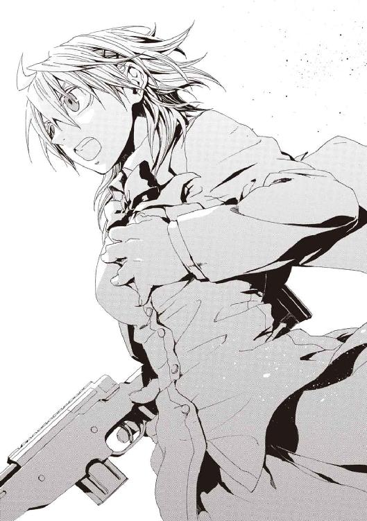
それは、ひとりで戦局を変えられる強者のみに許される傲慢で、今のきずなにはその資格がある。
彼女が、あのやさしい目に強い覚悟をこめて、宣言した。
「許せないけど、わたしが魔法を好きになるには、武原さんが必要なんです。もっと図太く生きるって決めたんです」
彼女は〝強く〟なった。そして本当に、図太いほど完璧なタイミングだった。
きずながゆたかなふくらみを抱く胸に、手を当てる。みずから手を突き入れてつないだ鼓動の音を聞いて、自分が生きていることを確かめるように。
覚悟を決めた彼女を取り巻く空気が、仁の背中の産毛をぞわりと逆立たせる。
銃を持たないその左手と、きずなの胸との間に光が生じた。
アンゼロッタがその手を鋭く振った。
「勇気をもって戦いなさい。使命に従わない再演魔導師は、救いの敵です」
待機していた騎士たちが、一斉に突撃してきた。きずなの再演魔術で操りきれないだろう人数での飽和攻撃を狙ってきたのだ。
きずなの胸元の光が、急速に石板状の魔法構造体を構成してゆく。
「ちがうよ、その人たちを〝使う〟のはわたしだよ」
さすがのアンゼロッタが顔色を失った。
「《戒律石板》──」
仁は、腰だめに剣をかまえて突っ込んでくる騎士たちを脅威と見た。だからこそアンゼロッタに打ちかかった。聖騎士将軍を接近戦で追い詰めれば、騎士隊は仁の側に引き寄せられるからだ。
だが彼が斬りつけた《剣》を、アンゼロッタが足を床に滑らせるように後退してかわす。仁は魔法消去で移動魔術を破壊する。それでも、《至高の人》がためらいなく後ろに跳躍して距離を離す。
「だいじょうぶです」
だが、きずなは言い切った。魔法消去を停止して、きずなを振り返る。彼女の正面に、人間の胴体ほどの大きさがある《開いた本》の幻影が浮かんでいた。
「神音観測者、《広域支配》──。ここから半径百メートル以内の神音魔導師を、三分間、すべて再演魔術でつかまえます」
その魔法の存在を知らなかった仁は、あまりの荒技に絶句した。その世界という《本》に、きずなは、再演魔術で構成した《石板》を、まるごと一ページ強引に挿入したのだ。
神の手にでも摑まれたかのように、人の津波のごとく押し寄せる騎士隊全員の足が止まった。再演大系の魔法使いは、この世界全体を、人間という文字を書き記した《本》であるように観測する。きずなは、この《本》に偽ページを一ページ強引に差し込むことで、術者の仕草から魔法を引き出す再演魔術の手続きをすっ飛ばして、大量の魔法を一括行使したのだ。
舞花の前にも、同じ《本》の幻影が浮かんでいた。
「《石板》を砕くよ。助けてあげないとね」
アンゼロッタの判断は、聖堂のごとく厳格だ。
「今なら、倉本きずなも《石板》の制御のために能力をいっぱいまで使っているはずです。あなたは完璧に彼女を封じてください。ここに集まった者すべて、操られることを前提に志願を募った者たちです」
つまり、騎士隊全員が支配されて束になってかかってきても、自分が全員斬り伏せるから安全だとアンゼロッタ本人が言っている。舞花は、この魔法史に残るべき天才をきずなの魔法から守れば、あとは何とかしてもらえる。
騎士たちが、肉体を支配されて抜剣して再び駆け出す。ただし、標的は、彼らにとっては守るべきものである聖騎士将軍であり舞花だ。
《至高の人》アンゼロッタは、メイゼルと同じあめ色の瞳を閉じた。そして、人間性から隔絶するほど慈愛に満ちた微笑みを、部下たちに向けた。
「よろこび、笑いなさい。あなたがたの血の向こうに、救いはあります」
鮮血が噴き上げた。アンゼロッタの放った魔弾が、突撃の先頭に立っていた騎士の身体を破砕したのだ。そして、すぐ後ろに続いていた騎士の体もバラバラになる。空中に魔弾の威力が残り続けているのだ。
アンゼロッタは機械装備で五つの神音を同時に聞き分け、その同時魔法発動によってより高度な神音魔術を使う。この着弾後も威力が持続する魔弾は、彼女のみが使いこなす魔法のひとつだ。
「神意を！」
「アンゼロッタ様、この世界に栄光を！」
騎士たちは、自分たちが礎であることを信じて、《至高の人》の魔法に身を投げてゆく。アンゼロッタは微笑んだまま、きずなに操られた味方を斃し続ける。
それは、絶対の支配力と、不退転の意志のぶつかり合いだった。
「武原さん！」
魔法の維持のため動けないきずなが悲鳴をあげる。仁はきずなの前に飛び出して再度アンゼロッタを追う。魔法消去を発動し、ただ全力で走る。
《至高の人》の超然とした美貌が、わずかに人の持つ暗さを取り戻す。アンゼロッタにとってすら、今の仁の魔法消去はそれほどの脅威なのだ。
仁の振るう神人遺物の《剣》を、魔法を奪われた剣で受ければ、その鋼ごと肉体は両断されるだけだ。だから、アンゼロッタは大げさなほど距離を取ろうとする。仁は、銃を失ったことが無念だった。今なら抜き打ちの拳銃を絶対にアンゼロッタは防げない。無敵の《至高の人》を斃せた。
「鈍りましたね。無防備状態の倉本きずなから、こんなにも離れてよいのですか」
ことばでの揺さぶりを無視して、仁は距離を詰める。アンゼロッタが、足下で魔法を使った瞬間、これを予期していた仁の視線がその移動魔術を砕く。すでに彼女の足は空中に浮いていたから、この落下までの一瞬が、決定的な遅れになった。
仁は、アンゼロッタのしなやかな体を袈裟懸けにする軌道に、迷いなく刃を振り抜く。彼女の軍服と下着を切り裂き、肌に一筋、傷を刻む。
「......届いたぞ」
人の身をした神意のような《至高の人》は、傷ついても苦しみなどその顔に浮かばせない。
「ああああっぁぁっ！ 魔女め!!」
だが、アンゼロッタに見えていて仁には見えないものは、背後にあった。消去を切って振り返ると、操られた騎士の列から、ひとりの少女が飛び出した。義憤にまなじりを決したリュリュ・メルルだ。リュリュの再演抵抗が、彼女を広域支配から自由にしたのだ。
エレオノールが、かつては部下だった少女騎士を止めようと駆けだした。
仁はその様子を視界にとらえ、叫んだ。
「止める相手はひとりじゃない！ このへんのものを全員まとめてトばせる、ありったけデカイのをぶっ放せ!!」
神聖騎士団の切り札はまだ隠れている。《公館》の魔法学者溝呂木が仁に抹殺を依頼した聖霊騎士、《極星を追う者》には、きずなの再演魔術がまったく通じない。
アンゼロッタたちは、ここにきずなが現れた場合の対策を立てていたはずだ。そして、その最善手は、きずなの魔法が《極星を追う者》に効かないことを利用した、不意打ちだ。その一撃を誘い出せるかは、賭けだった。ただ、騎士隊が身を犠牲にしてきずなの動きを止めている以上、このタイミングでなければアンゼロッタの部下たちは犬死にさせることになる。
仁は、一歩後ろへ跳んだ。アンゼロッタを注視したまま、右目だけを閉じて消去を発動する。
直後、エレオノールが大魔術を放つ。猛烈な爆発が起こった。威力は、消去を発動している仁の背中まで、強風となって届いた。
床に降り積もった土埃が巻き上げられる。白い煙が視界をふさぐ。目を閉じてしまいそうになる。
仁は魔法消去を停止する。
頭上から、黄色い光の破片が微かに降った。エレオノールが起こした爆風に〝何か〟が当たり、その気流の乱れを仁が観測したためだ。つまり、仁が、数秒後の〝未来〟に発動させる魔法消去が時間をさかのぼってきた余波で、〝それ〟は《魔炎》を散らせた。
「そこにいたか」
仁は、魔炎の源である天井を振り返る。
強烈なライトを逆光に、半透明の人影が、まさに真っ逆さまに降下しつつあった。土埃をかぶり魔炎にまとわりつかれた、古式な甲冑姿の女性だった。《極星を追う者》は、これまでずっと自分を魔法で透明化していたのだ。
《彼女》の歌が奇蹟の力を呼び出し、槍の雨が打つように、きずなに頭上から不可視の何かが激しく降り注ぐ。
激しく、鼓膜をさいなむ轟音とともに砕けた白いコンクリートの床が煙をあげる。だが、その土煙の向こうで、きずなはまだ生きていた。
とっさに割って入った歌姫エレオノールが、《光背》の防御で、きずなを守りきったのだ。
「《沈黙》よ！」
仁はこれまでまぶたを閉じて温存していた右目を見開く。視線は空中を舞う《極星を追う者》へ集中して、魔法消去を発動する。
「聖霊はまだ健在です、《沈黙》！」
エレオノールが鋭く声をあげる。だが、奇蹟を砕く力を発動させた仁に、もはや《極星を追う者》の姿は見えない。
「わたくしを前に、よそ見ですか？」
仁の後頭部を、強烈な衝撃がぶったたいた。振り返ると、そこにアンゼロッタはいない。聖騎士将軍の姿を求めて、土煙をかきわける。
もう一発、仁の強化された魔法消去を、魔弾が貫通してきた。正確に感覚器を潰すためだけに頭を狙ってきていた。仁の強化された魔法消去に、天才は早くも対応しはじめている。
とてもではないが、《極星を追う者》の相手など同時には不可能だった。遠慮なくエレオノールの力を借りた。
「きずなちゃんを頼む！ アンゼロッタはこっちで対処する」
探してもアンゼロッタが見つからない。さっき《極星を追う者》が使った透明化魔術を使われているのだ。魔法消去では、完全に隠蔽されて〝感覚できない魔法〟は破壊できない。
「きずなちゃん、アンゼロッタはどこだ？ 操れなくても位置ならわかるはずだ！」
「あの、はい！ あの人の《文字》は、今、ふたつに増えてます。ひとつは《化身》です！」
神音大系には、自分自身のコピーを魔法で作る《ゆらぎの化身》という高等魔法がある。この《ゆらぎの化身》を、アンゼロッタは瞬間生成して使い捨ての砲台にしているのだ。
「えっと......本体のほうは武原さんに左から近づいて──」
きずなが協力してくれていることが、倫理的には間違っているのに心強かった。
仁は愚かなことをたくさんしてきた。たくさんの人を傷つけた。だが、この人間の繫がりは、彼が戦ってきた孤独な英雄たちの持っていなかったものだ。
「そこか！」
微かな衣擦れの音を頼りに、仁は《剣》をたたきつける。
力を込めた一閃が、空中で止まった。その瞬間、仁に認識されたことで隠蔽魔術が破壊され、アンゼロッタの姿が忽然と現れた。だが彼女は、これまではかわす一方だった《剣》を、手にした剣でしっかりと受け止めていた。
「何を驚くことがあるのですか。《剣》の切れ味の正体は、ただの鋭さと重さではありませんか」
「《剣》の切れ味に魔法なしで耐えられるところまで、剣の素材強度自体を即席で上げたのか。どこまで無茶なんだよ」
仁は、そのときつばぜり合いをしている相手に、違和感を覚えた。
悪い予感を、きずなの恐怖が確信に変えた。
「武原さん、アンゼロッタさんの《文字》が、......《本》から消えました」
だが、《本》から消失したというアンゼロッタは、仁の目の前に確かにいる。
その食い違いの答えがまだ出せないうちに、魔法消去を突破して、衝撃が彼の鼻にたたきつけられた。
これまでのアンゼロッタの魔弾ではない。だが、この感覚を味わったことがある。エレオノールもかつて使った、着弾地点で実体化するため消去がはたらきにくい、見えない魔弾だ。
アンゼロッタが突然、神音歌手ではなかったはずなのに、《彼女》と同じ歌の神音魔術を使いだした。そして、世界という《本》からアンゼロッタの《文字》が消えた。
仁ですら文献でしか見たことがない、秘術中の秘術だ。聖騎士の分身である《ゆらぎの化身》と《聖霊騎士》は、魔法的に同種のものだ。だから、適切な手続きを踏めば融合できる。融合によって《ゆらぎの化身》を強化し、これが術者本人にも波及する強化魔術──《半聖霊化》。
「《極星を追う者》を、アンゼロッタが取り込んだんだ！ 俺も実物ははじめてだけど、聖騎士将軍には、聖霊騎士を取り込んで能力を借りる魔法が伝わってるらしい」
再度の見えない魔弾が、仁をひるませる。顔を背けた仁の腹に、さらにカナル式のヘッドフォンで神音を聴いたアンゼロッタの複合魔弾が、追撃で命中する。
足が止まってうつむいた彼の正面から、アンゼロッタが一歩下がって呼吸を整えた。
《至高の人》は、至近距離で大魔術を使おうとしているにちがいなかった。
仁が、その余裕を与えまいと必死で一歩踏み込んだとき、まばゆい輝きがあふれて、仁の全身を光と熱が打った。魔法消去で魔法の威力が九九・九九九九パーセント減衰しても、単純な熱ならひたすら重ねてゆけば対象を焼ける。高熱で目を開けていられなくなった彼の頭上に、さらに爆炎がすさまじい勢いで打ち下ろされた。
「なめんなぁッ！」
神音歌唱と複合魔術による大魔術の二連撃が直撃してなお、仁は、咆哮して無理やり体を起こす。十分な準備時間をつくった後の、本命だろう必殺の一撃に備えるため、《剣》を床に突き立てる。視線をアンゼロッタに向けたまま、骨折した左手を無理やり体の前にかざし、右手を添える。
アンゼロッタの本気の一撃がやってくる。折れた左腕に、ひん曲がりそうな負荷がかかった。仁は、おそらく衝撃波だろうその圧力に押されて、ずるずると床に靴を滑らせ後退させられる。左腕の激痛に悲鳴をあげないよう、奥歯を嚙む。この痛苦そのものを道具にして魔法を砕けと、魔法の源へ向けて突き込むように折れた腕を思い切り押し込む。
地獄の数秒間が終わって、力の奔流がおさまった。息をほうと吐いた。十二月の冷たい風が、横殴りに吹き付けた。
アンゼロッタが、魔法が消え去って薄暗くなった世界にいて、まだやさしさをたたえている。もう慈悲とは何なのかわからなくなりそうだった。
「ここまでやってもダメージはその程度ですか。これでは、もはや普通の高位魔導師では有効打を与えられませんね」
背後で、屋根が落ちたとしか思えない豪音が、肌から肉へ響く。立っているのも難しいほど床が揺れる。施設の照明が屋根ごとなくなって、明かりは星だけになった。
魔法消去に巻き込んでしまうのが恐くて、後ろを振り向けなかった。それでも、攻撃範囲にいた人間が、ただでは済まなかったことは自明だった。
「気をつけろ！ 《極星を追う者》の性質を取り込んだなら、今のアンゼロッタに、きずなちゃんの魔法は効かないぞ」
絶対頭に入れておくべき警告のはずだ。なのに、背後から戦闘の緊張感が伝わらない。
神音世界の業を体現したように、アンゼロッタはそれでも慈愛の表情を崩さない。
「魔法消去に倉本きずなたちを巻き込むのが、おそろしいのですか」
《至高の人》の足がかすかに床から浮いた。そして、風のように床を滑ってきずなの側へ回り込む。
さっき消去できた移動魔術が、神音歌唱をさらに重ねられたせいで焼き尽くせない。だが、やむなく後ろを振り返った仁は、驚愕を超えて得体の知れない興奮すら覚えた。
まだ本気で戦闘を継続しているのは、仁とアンゼロッタだけだった。《至高の人》の大魔術三連発による破壊は、それほどの規模だったのだ。
施設は、無惨なその名残のほかは建造物のかたちを留めていなかった。おそらく航空機用の格納庫だったのだろう施設の外は、順当に考えれば在日米軍基地だ。だが、整備されているべき基地の地面が、見渡す限り子どもが砂場遊びした後のように、掘り返されたり山になったりしている。
威力から守られた安全地帯は、仁が魔法消去したその陰だけだ。格納庫内の他の場所は、床はえぐられ、施設の壁も屋根もズタズタだ。最後の衝撃波の余波に至っては、地面に裂け目が最低でも二百メートルを超えて、夜の闇の果てまで開いている。超高位魔導師の攻撃を真っ正面から受け止めるとは、こういうことだ。
それでも、戦闘はまだ終わったわけではない。
ここが米軍基地の中なら、すぐに予備の騎士隊なり在日米軍なりが押し寄せてくる。
仁が魔法消去を停止すると、アンゼロッタの体からは黄色の魔炎が散っていた。あの三発の大魔術を、仁はすべて魔法消去で受けた。《半聖霊化》しているアンゼロッタはともかく、融合した聖霊騎士、《極星を追う者》は消去の影響でぼろぼろなのだ。
アンゼロッタは、すでにきずなに斬りかかれる間合いに迫っている。だから、エレオノールが反射的に彼女を守ろうと割って入った。そして即座に弾き飛ばされる。一瞬で強固な《光背》を削りきられた歌姫に替わって、仁がアンゼロッタに向かう。
せめて《公館》の溝呂木に依頼された《極星を追う者》の破壊くらいは果たしておきたかった。この瞬間、隠してはいるがアンゼロッタも苦しいはずだった。だからこそ、今、決定的な損失を負わせなければならない。
だから、エレオノールときずなに伝えるべく、あえて声を張り上げる。
「おまえ、さっきの大魔術で《半聖霊化》がほとんど解けてるな？」
それで歴戦の聖騎士だったエレオノールの瞳に、活力が戻った。この隙に《本》を確認していたのだろうきずなが首を横に振る。まだアンゼロッタの《文字》は、《極星を追う者》（《本》にいない騎士）と融合して《本》から消えたままなのだ。
仁は体力まかせにアンゼロッタを押しこむ。右手一本で、おそろしく重い《剣》を振り回せる時間は、もう長くはない。握力を信頼できなくなりつつあった。
それでも、狙いは絞っていた。アンゼロッタは、《半聖霊化》を使う前、《ゆらぎの化身》を瞬間生成して砲台代わりに使っていた。なのに強化した今はそうしていない。《ゆらぎの化身》を軽々しく破壊させられない理由があるのだ。
聖霊騎士と融合したのは、あくまでアンゼロッタの《ゆらぎの化身》であって、本人ではない。だから、融合の核は《化身》のほうだとしたら納得がいく。《化身》を破壊すれば、《極星を追う者》もおそらく道連れで消滅するのだ。
だからこそ仁は、魔法消去を浴びせ続ける。かつて仁と戦った円環大系の《雷神》クレペンスは、強化した超反射神経を魔法消去されないために、肉体の動きを自然秩序の範囲で留め続けた。だが、アンゼロッタの魔法強化は隠しようがない。
「さすがにもう苦しいだろ。神聖騎士団が集団戦に強いって言っても、魔法使いの実力差を数で埋めるには限界がある。土壇場で聖騎士将軍に負担がかかりすぎるんだよ。おまえに付いて来られるやつがいないんだ」
仁は重い《剣》を振らずに、組み討ちに持ち込める距離に肉薄することだけに専念する。アンゼロッタはあくまでも魔法使いで、魔法なしの実力なら仁に分がある。
これまでは、魔法消去すらたやすく突破する圧倒的な魔法の威力のせいで、仁には接近戦でも勝ち目がなかった。だが、この絶対優位はもはやない。
エレオノールが倉本きずなの傍らで、剣尖を床に立てて待つ。アンゼロッタがどこかで《ゆらぎの化身》を使って状況をひっくり返しに来ると読んでいるのだ。アンゼロッタと同じ能力を持つコピーが、不可視化魔術で隠蔽されて、かならずきずなへの刺客として放たれる。
神経のすり切れそうなギリギリの緊張の中、それでも《至高の人》はポジティブなことばしか漏らさない。
「聖騎士将軍の負担を補うための《聖霊騎士》です。同じ神意に試されてきたからこそ、過去の英霊は、後裔に力を貸すのですよ」
不屈の魂の発露であるそのとき、アンゼロッタが人間らしい苦しみに耐えていたのか、仁は知らない。
きずなが叫ぶ。
同じタイミングで、アンゼロッタが、《悪鬼》と接触する覚悟をかためて、仁の腹を剣でえぐりに来た。
エレオノールが、弾かれたように敏捷に動き出す。見てから反応したから、初動はどうしても一瞬遅い。
そして仁は、必殺の意志を込めた一撃に、恐怖に耐えて背を向けた。刃をジャケットにかすめさせながら、気がふれそうな本能を意志でねじ伏せて、大股にきずなへ向けて踏み込む。
整理すれば単純な駆け引きだ。
きずなを守るのは、きずな自身と、仁とエレオノールの三人。
攻める側はアンゼロッタと《ゆらぎの化身》で二人ぶん。ただし、仁以外と戦えばかならずアンゼロッタが勝つ。
この条件で、最終的にきずなの生死で勝敗がつくなら、アンゼロッタにとって勝負はいかにして仁を拘束するかにかかっている。
だから、仁は、拘束されないため、背中を向けてアンゼロッタの勝負を逃げた。彼を仕留めるため当然くわえられる追撃は、エレオノールが防ぎ止めた。敗北するとはいえ、数秒なら持ち堪えられる。
そして自由になった仁は、きずなが示した位置へと、骨折した左手を伸ばしていた。そこに、透明化した《ゆらぎの化身》はいる。
「息が合っていますね。あなたがたが、共闘しているという報告は受けていませんでしたが」
アンゼロッタは、初撃をエレオノールが耐えきった時点で、一瞬の攻防の勝敗を悟った様子だった。
「ここだけの話ですが、武原仁と倉本きずなは、似た者同士なのです」
この数ヶ月で人間くさくなったエレオノールが、力が抜けたため息をついた。
仁ときずなは、きずながオトリになって仁がアンゼロッタの切り札を潰すよう、雰囲気で呼吸を合わせたのだ。エレオノールがついてきてくれたことが、うれしい誤算だった。
「あらゆる手を尽くして生き残ろうとする人間が、身内は大事だと自覚したのです。ふたりが手を組めば、試されたときどういう答えを出すかくらい察しがつきます」
エレオノールは、罪人の懺悔を聞き慣れた聖職者のように、柔和だ。だが、つまりエレオノールは、仁ときずなが「敵をハメて生き残る」と見透かしたのだと言っている。
仁は、戦果を確認してもらおうと、きずなに目で合図した。状況が見えているきずなが、首を振ってくれるだけでよいのに、真っ赤になって気まずそうに目をそらした。
とりあえず当たっていると判断して、腰をひねった角度ぶんだけ鋭く左手を突き出す。気が遠くなる激痛と引き替えの魔法消去が、アンゼロッタの《化身》をたやすく貫通した。
「............ああ、さすがに、痛え」
魔法消去は、感覚の鋭さにおおよそ比例して強くなる。《化身》を構成していた圧縮空気が、魔法を完全に破壊されて突風に戻る。
今度こそ、戦闘はひとつの区切りを迎えていた。戦況は混沌とした押し合いではなく、完全にアンゼロッタの劣勢に傾いていたからだ。
騎士隊の生き残りは、後裔の盾になった《黒騎士》ユーグの背後にいた四百名ほどだけだ。
アンゼロッタが、非協力的な聖霊騎士に一瞥をくれる。《黒騎士》はその冷え切った空気を読まない。
〈こういう相手と戦うんなら、こいつらは役に立たねえよ。別の編成の隊を呼んでやれ〉
仁が知る限り、神聖騎士団は指揮者の決定を滅多なことで撤回しない組織だ。だが、《黒騎士》は明らかに、失敗を指摘していた。
〈大義があるからって、理に合わない戦い方で騎士を失うのは、神意にかなってるか？〉
だが、騎士たちは、仁の知らなかったバランス感覚を見せた。
「別の攻め方に変えましょう」
アンゼロッタが、驚くほどあっさり提案を受け容れた。
彼女が耳の小型のヘッドフォンを人差し指でたたく。無線の周波数がそれだけで切り替わるのか、基地内の他部隊から簡潔な損害確認を受けている様子にも見えた。
息を整え、手で汗をぬぐうアンゼロッタの新しい指示も単純だ。
「銃器装備の隊は、火線を《真なる悪鬼》のみに集中しなさい。今の《真なる悪鬼》に魔法は効果がありません」
援軍の要請だった。もちろん仁には銃弾などかわせない。
施設の残骸にいる、生き残った騎士隊にも動きが起こり始めた。聖騎士将軍の指示が、安全な場所に控えている機械化聖騎士師団の司令部スタッフたちによって具体的な作戦になりつつあるのだ。
ここが米軍基地なら、建物外にも騎士隊がいる。それ以上に、再演魔術の力を借りて便宜を図ってもらって施設を使ったにしても、さっきの大魔術が基地施設を壊した以上、もう米兵が動きだしているはずだった。
騎士たちの声が漏れ聞こえてきた。
「《魔導師殺し》なしでも、神音暴発の危険は受け容れる」
「《真なる悪鬼》をここで射殺する。現地兵士たちとの連携をとる」
仁は、戦場の風の冷たさに身を縮める。
「勘弁してくれよ」
さんざん魔法使いを狙撃してきた仁が、撃ち殺されることになりそうな雲行きだった。
後列の騎士隊が鳥のかたちの魔弾を放ちはじめた。仁に魔法消去を使うか二者択一をせまるためだ。消去を発動し続ければ、きずなやエレオノールの防御魔術まで破壊されるから、銃を持った増援に仲良く射殺される。発動しないなら、仁の消去は封じられたも同然だ。
魔弾の猛射が着弾する前に、仁は消去での対処をあきらめた。
「きずなちゃん。魔法で逃げられるか？ メイゼルを回収したら撤退したい」
きずなが首を横に振った。魔法での脱出はいまだ封じられて不可能で、舞花と決着をつけなければならないということだ。聖騎士側は、舞花ひとりを仁たちの攻撃から護りつつ、背後から火力を増し続けるだけで仁たちを追い詰められる。
だが、倉本きずなが決意を瞳に宿らせる。
「でも、罠の入り口のほうの穴で、何とかできると思います。まかせてください」
そして、きずなが再演大系の《本》の幻影を出現させる。そして、その開かれたページに手を突っ込んで、石板型の光を引きずり出す。《至高の人》アンゼロッタを瞠目させた、《戒律石板》の大魔法だ。
彼女の指から炎がほとばしって、複雑な《文字》をそこに書き足したように見えた。そして、再度《石板》を《本》に押し込む。
世界という《本》に、術者が書いたページを無理やり挟み込む《十戒石板》の絶技は、しかし一見何の変化も起こさなかった。
「きずなちゃん、何をやったんだ？」
すでに、魔弾は、仁たちの周囲に突き刺さっていた。きずなの魔法に対処するために待機しているアンゼロッタがいつ攻撃に加わってもおかしくない。
「もう来ます、来ました！」
《本》を見ながら、きずなが拳をぎゅっと握る。
果たして、魔法的転移で呼び込まれた人物が、仁たちと騎士隊の間に現れていた。
《降臨》以来、顔を合わせていなかったから、仁は彼女の存在を忘れていた。
彼女は、蜂蜜色の長い髪をした清楚な少女の姿をしている。ただし、その正体は、五百年間も戦い続けた超高位魔導師だ。
魔法使い集団、《連合》の評議長アリーセ・バンシュタインが、そこにいた。
ちょうど食事中だったらしく、アリーセはにぎり寿司をつまんで口に入れる寸前だった。
そして周囲の惨状をぐるりと眺めて、ため息をつく。
「食事中に、ずいぶん騒がしいところへ呼んでくださいましたこと」
当然、新しい作戦を指示されたばかりの騎士たちが、こんな予測不能の事態に対処できるはずがない。魔弾がアリーセにも降り注ぐ。
アリーセは混沌大系という魔法世界の最高位魔導師だ。ちいさな魔弾では、固め打ちしても超高位魔導師に打撃は与えられない。
ただ、つまんでいた寿司が砕けた。彼女が顔に飛び散ったごはん粒をつまむ。髪にへばりついて取れない粒を爪で引きむしる。
「あなたたち全員、晩ごはんのかわりに、わたしに食べられなさい」
アリーセの影から、昆虫のような触腕を備えた《魔力》が、無数に現れた。彼女は、人を食う夜の女王だ。
そして彼女は、魔導師公館がこの秋、魔法使いの有力者を集めて行った会議では、強硬に再演大系の殲滅を唱えた、再演大系の敵でもある。
無尽蔵に現れる、自律する《魔力》が、聖騎士たちに襲いかかってゆく。神聖騎士団は、《協会》だけでなく《連合》とも歴史的な敵対関係にあった。その《連合》の評議長であるアリーセが、聖騎士の重要拠点に転送され、封鎖されて外に出られない。当然、まず殴られるのは聖騎士側だ。
あとは地獄絵図だった。
何十本という節足を持って這いずるもの、蛇のようにうねるもの、複眼を持つもの。動物や昆虫のあらゆる特徴を持った《魔力》が、闇の底からあぶくのように浮かび上がって際限なく現実化してゆく。
仁は魔法消去で騎士たちを助けることはしなかった。
アリーセがもっとも憎む再演魔導師たちは、魔法の縛鎖を利用して、自分の周囲三メートルほどに異形たちを近寄らせもしない。食われるのは、巻き込まれた騎士隊ばかりだ。
だが、弱い者から挽きつぶされてゆく救われない《魔力》の海へ、一歩進み出た者がいた。
満身創痍のエレオノールだった。
「アンゼロッタ・ユーディナ、魔法的転移の封鎖を解いて、騎士隊を引かせなさい。《導師》アリーセをこのまま放置しておけば、《自律する魔力》は、外の人間を餌食にしはじめます。今の魔法消去の出力では、この基地の人々も犠牲になりますよ」
身ひとつでここに来た彼女は、聖騎士将軍を相手に堂々と言った。
仁は、戦闘の興奮と合理性で麻痺していた感情が急速にほどけるのを感じた。メイゼルは、今は騎士隊が陣取っているあたりに横たわっているのだ。体の震えを止められなかった。
アンゼロッタは、その強靭無比な《光背》の護りで《自律する魔力》を寄せ付けない。惨劇の中にあっても、世界の中心軸であるかのように背筋をぴんと伸ばして動じない。
「これを引き起こしたのは、生き延びるためならどのようなことにも手を染める、倉本きずなの邪悪です」
「それが生命というものです」
ふたりの宗教者が、剣を手に向き合っていた。それは、神聖騎士団を支えるふたつの原理の衝突でもある。
「このような無惨を前に、まだ神意は生命にあると言うのですか」
生命を守るためにこそ正義が必要だと、神聖騎士団は正義を奉じて《神》を降ろした。
「この生命の営みに、目を向けることが神意なのです。正義は、生命を育て教え導いた結果として現れるのですから」
生き残るための悲惨な正解を無邪気に選び取ったきずなが、引っ込みがつかない自分の罪を前に、立ちつくしていた。
エレオノールの問いは、生きて歩んできた道程のぶんだけ、重い。
「神聖騎士団を導くひとりであるあなたは、今日の戦いを正義と呼ぶのですか。あのちいさなアリューシャの娘にしたことは何なのです。これから、神聖騎士団は、あのような人殺しを数限りなく続けるつもりですか」
「あの死は必要なものでした」
「では、盗みもですか？ この世界の人々は、再演の《神》の世界を望んでいましたか？ 世界が破滅すると脅すことは、神意にかなうのですか。何ひとつ知らせずに核戦争を起こして誘導したのでは、神聖騎士団がこの世界の《神》を盗み取ったに等しいではありませんか！」
剣を杖にようやく立っているエレオノールの、喝破する声が、悲痛に響く。
「この世界から《神》を強奪したことで、私は、神聖騎士団を叱責します。《神》を、この世界の選択にゆだねなさい！ この世界の《神》は、この世界に返しなさい!!」
怒声や指揮の声が飛び交っていたはずが、いつの間にか静かになっていた。エレオノールとアンゼロッタの会話を聞かせるために、老獪な魔人アリーセが攻撃を中断したのだ。
破門したエレオノールから逆に責められても、アンゼロッタは、感情的な反論などしなかった。
騎士隊が、懇願するように彼らの将へと視線を注いでいた。
寒々しい夜の大気に、アンゼロッタが吐いた息が白い煙となる。彼女は、友を、兄弟を、犠牲にしてきた部下たちに、意味を与えてやらねばならない。歴史の中にあって、その生命と献身が偉大なものの礎だったのだと、納得させてやらなければならない。
「我々は、この世界で一万年もの間戦ってきました。この《約束の地》は、我々の第二の故郷。我々は《約束の地》を愛し、この世界に人を救う《神》が現れることを熱望してきました。だからこそ、再演の《神》は現れました」
アンゼロッタ・ユーディナは、命を捧げる騎士たちの支柱だ。神聖騎士団は、もはやそれほど膨大な同胞の犠牲を重ねてきてしまったのだ。祈りを受け継いで繫いできた鎖は、血に濡れてとてつもなく重い。
「カオティックファクターは、この世界の住民が願う〝救いのかたち〟であるため、索引型とも魔力型ともつかず法則は曖昧です。なのに、他とちがって再演大系だけが、索引型魔術として完璧な法則性を持っている。なぜだかわかりますか？」
アンゼロッタは、この世界の隠蔽された魔法史の結実点であり、魔法史の業そのものだ。
「再演大系は、我々この世界に根付いた神音魔導師たちの願った〝救いのかたち〟だからなのですよ。盗みではないのです。我々が、この世界の住民として《神》に祈り、ともによろこび、ともに笑うことに、恥じる要素はありません」
彼女の口元には慈愛が浮かび続けている。
聖騎士たちの戦いは、仁たちの人類史で最古と言われる文明よりも長い歴史を持つ。それほど長く、この世界に根付こうとしてきた異世界人が、果たして「地球人」でないと言えるのか、仁にはわからない。
本当は誰にもわからないことだった。
騎士隊は静まりかえっていた。アンゼロッタの視座が、あまりに遥かだったからだ。騎士たちは、自分を「地球人」とは考えていなかったのではないかと、仁は思う。魔法使いであるからこそ、奇蹟に愛されない人々を、どこか上から見下ろして救ってやっていた。
その自らを問うような空白の時間の中、仁たちへ向けて、布袋のようなものが放り投げられた。十メートル以上も空中を跳んできたそれを、仁は慌てて体をクッションに受け止めた。
重たくやわらかいそれを受けて、車に轢かれたような衝撃を殺すため、抱きかかえたまま後ろへいっしょに転がる。仁にとっては決して落とすことができないものだった。
瀕死のメイゼルの体だったからだ。
衝撃でまた傷が開いていないことを確認する。かすかにだが、メイゼルが確かに息をしていた。
騎士隊の列の先頭で、《自律する魔力》から後進を守っていた聖霊騎士、《黒騎士》ユーグのしわざだった。
〈よくぞ吠えた、次代を継ぐ若き騎士よ。ほうびに、〝それ〟はくれてやる〉
そして《黒騎士》が、更に、そばにいた人間の首根っこをつかまえた。
「な、何をするのですか！」
悲鳴をあげるリュリュ・メルルの鎧の首を鷲づかみにして、軽々と抱え上げる。
〈お嬢ちゃんは、もうちょっと自分の縁を大事にしろ〉
そして、装備を含めて六十キログラムを超えているだろうリュリュを、そのまま片手でぶん投げた。
砲弾のような金属の塊を、受け止めようという剛毅な者は現れなかった。仁たちのすぐそばに落下して床を弾み、《光背》の防御をやすりのように削られながら三メートルほど転がってようやく止まった。
だが、微妙な不遇はそれだけでは終わらなかった。倒れたリュリュのすぐそばにいるアンゼロッタは、彼女に注意すら向けず、かわりに星空を見上げていたのだ。
《黒騎士》も、放り投げたリュリュには目もくれず、頭上をにらんでいた。槍型の巨大な神音楽器をくるりと回す。明らかに臨戦態勢だった。
夜空に星が多すぎた。いや、空を埋め尽くすように、何百という光が飛び交っていたのだ。
〈これからの、本当の〝試練〟の幕開けには、ちょうどいい景気の花火じゃないか〉
再演大系の《本》の幻影を開いていたきずなが、警告を発した。
「魔法......ものすごい数です......いろんなところから、ここを狙ってます」
膨大な情報を手に入れているはずなのに、きずなの説明は微妙にピント外れだ。
遠距離からの魔法砲撃であることは一目瞭然だ。
神聖騎士団と米軍の関係は、この世界にいる魔法使いならみんな知っている。そして、ここでの大規模戦闘が、まだ恐れがあった魔法使いたちに、魔法消去にもはや彼らを止める力がないことを教えてしまった。だから、恨み重なる聖騎士への報復に、あたりじゅうの《協会》系魔導師たちから魔法攻撃が集まっているのだ。
仁は、アンゼロッタに持ちかけた。
「騎士隊を引かせろ。あの魔法は全部、魔法消去で消してやる」
この何百人からとも知れない集中砲火は、神聖騎士団一万年の戦いがもたらした負の遺産だ。
聖騎士たちは恨みを買いすぎたのだ。
アンゼロッタは、きっぱりと言い切った。
「倉本きずなの身内と、交渉はしません」
そして、基地は、モノに等しいと蔑んだ人類と共存させられていた魔法使いたちが放った、すさまじい炎に包まれた。
仁は、ぎりぎりまで魔法砲撃を引き寄せていたはずだった。
そして、アンゼロッタが妥協を最後まで拒絶したから、魔法消去を発動させるタイミングを失った。
なのに気がつけば、基地の敷地の中らしい、滑走路が見える木立の陰にいた。まわりには誰もいなかった。ただ、肩にかついでいたメイゼルの体の重さとぬくもりに、ほっとした。
「舞花。おまえか」
格納庫から魔法移動で抜け出ることは舞花が封じていた。だから、仁が位置移動した以上、封印の張本人のしわざでしかあり得ない。
ちいさな体になった舞花が、気づくとすぐそばに現れていた。声が届くが手は届かない三メートルほどの距離を守って、街灯に照らされた広い道路に立っている。
「さすがにすぐわかっちゃうか。魔法消去を使わないでくれてありがとうね。すぐ見つかっちゃうからね」
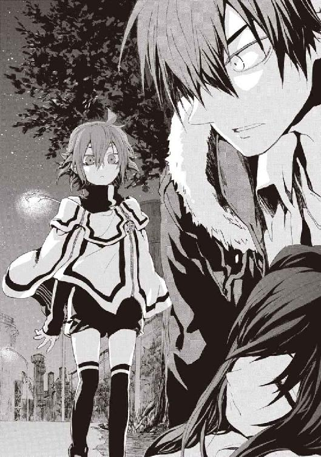
「こんな場所に勝手に出て来て、よかったのか？」
舞花が、困ったように笑った。
「いろいろやらなくちゃいけないこと、ぶっ飛ばして来ちゃった。本当は、《黒騎士》を、好き勝手に言わせる前に魔法で操らないとだったんだけどね。......でも、何も知らずに死んでゆくのって、ちがうでしょ」
魔導師公館の専任係官だったころ、舞花は《協会》の本拠地近くの探索を命じられて殉職した。そこで核実験が行われていることを、妹は知らなかった。
「アンゼロッタが言っていた、再演大系の話は、本当なのか？ 溝呂木の、この世界に神がいっぱいいるなんてあの話とそっくりだぞ」
仁は、折れた左腕に響かないよう右手一本で、メイゼルを芝生におろしてやった。
同じ説を《公館》時代に本人から聞いていたのか、舞花にはすんなり話が通じた。
「溝呂木さん、正解だったね。神聖騎士団の上層部もああ思ってるよ。神音世界の人たちは本当に子孫もいっぱい根付かせてるし。考えてみたら、世界がどこまでを地球人と判断するかなんて、誰も調べたことないんだよね」
メイゼルの息が、整って穏やかなことにほっとする。寒そうな格好だったから、ぼろぼろになったジャケットをかけてやった。
そして立ち上がると、手の中に鉄棒状のかたちに戻った神人遺物を握った。《剣》は魔法消去を発動すれば黒い刃を取り戻す。
仁が舞花を刺し殺せば、神聖騎士団は再演魔導師を失う。
今、戦場から移動してもらったことで、メイゼルを助けてもらったのだ。恩がある身だ。口の中はからからだった。
舞花は、彼の緊張に気づかないふうを装って、話し続ける。
「再演の《神》は、あんまりしっかりした法則じゃないんだ。たぶん、『この世界に根付いた神音世界の人の願いが再演大系をつくった』せいなんだろうけどね」
仁は動けない。目の前にいる舞花は、彼の妹ではなく、妹の魔法の断片から再生されたコピーだ。それなのに、メイゼルの前だからか、割り切って斬り捨てられない。
舞花が、試すように、〝いつか〟現実になるたくらみを教えてくれている。
「自然法則の影響力が弱いからね、《神》とつながる増幅器を置かないと、再演魔法って安定しないんだ。増幅器を置くのは、世界中に他の人間が本当にひとりもいない場所なんだって」
妹が仁を見上げる。メイゼルを「予防」のために殺そうとしたアンゼロッタに怒っておきながら、彼は子どもの姿の、しかも肉親を殺すことを考えている。
「お兄ちゃんは、本当に今の世界を壊すつもりだったら、増幅器を置く場所に〝来る〟しかないよ。そこ、行ったら二度と戻って来られないとこだけどさ」
何かがはっきりと目の前に迫っている心地がした。
それは、旅の終わりだ。
「その増幅器ってやつは、おまえが置きに行くのか？」
「たぶん、そうなると思う」
「なあ、もう神聖騎士団に力を貸すのはやめないか」
「それはムリかな」
仁は、一歩踏み出していた。《幻影城》でエレオノールと話したとき、妹を斃す覚悟はあるかと問われた。彼はやると答えた。
舞花が荷担しているのは、強力な再演大系の支配力を、より強くするくわだてだ。だが、すべて仁が彼女を刺せば無意味になる。
「......それに、わたしを殺そうとしたってダメだよ、お兄ちゃん。アンゼロッタと戦ってた間、まわりが聖騎士だらけなのにメイゼルちゃんが殺されずにすんだの、なんでだと思う？」
仁は、横たわったちいさな魔女を振り返りたい欲をおさえた。
「おまえが再演魔法で〝過去〟を操作したとか言うんじゃないよな」
「そうだよ。わたしがメイゼルちゃんを護ってたの。でもね、聖騎士たちの注意をそらすための再演魔法、どうせ〝過去〟だしいつ使っても間に合うから、今はまだ使ってないんだ」
舞花は、「メイゼルを助けるためだから仕方ない」と、ここで兄妹が殺し合わないで話をする理由をくれようとしている。
「お父さんとお母さんが、失踪してから結局どうなったか、知りたい？」
「そのことなら、前に住んでた家で、親父のノートを見つけたよ」
舞花がすこしだけ昔みたいに、仕方ないなという顔をした。仁は、かつては父親のことを親父なんて乱暴には呼ばなかったのだ。
「でも、あんまり興味なさそうだね」
「俺は、人を死なせすぎたよ。たぶん何十人も、俺たちみたいな親のない子を作った。親父と母さんに何があったにしても、自分だけ被害者面はできないさ」
舞花は、母親が刻印魔導師だったことを知っていた。妹が戦う理由は、そこに繫がっているのだと思った。
「おまえは、親父と母さんのことを知りたくて、〝過去〟を覗き見るために再演魔術師になったのか」
「いっかい殉職したときまで、ずっと心残りだったからね。お兄ちゃんは調べたりしなかったんだね」
仁にとって、〝過去〟は、ただ過ぎ去って取り戻せないものだ。舞花のように奇蹟に望みを繫ぐ気はない。
「お兄ちゃんは薄情だよ」
「いつも何も言わずに飛び出すおまえは、自分勝手だよ。俺がずっと心配しなかったとでも思ったのか？」
基地のずっと向こうで、夜空の底が炎で炙られている。サイレンが鳴って、消防車らしい車両が集まっていた。重火器の射撃音も聞こえる。向こうではまだ戦闘が続いているのだ。そう思うと、こんな個人的な理由で動いていることが、申し訳なかった。
「わたしさ、聖騎士たちが人を救う神様がほしいこと、けっこうわかるんだ。だって、神様なんていないって知ってたけど、死んじゃうときは助けてって祈ったもん。誰か本当に助けてくれる人がいたら、絶対にステキだよ。......わたしに声かけてきたのは、〝未来の再演魔導師〟だけどさ、そういうことに協力したくて生き返ったんだ」
「それでも連絡なり相談なりしろよ。連絡すら入れずに勝手に決めるやつが、えらそうなことを言うな。おまえが話すのは、いっつも取り返しがつかなくなった後だろうが」
妹とこんなふうに話すのは最後になる予感がした。ふたりして自分の答えはもう決めてしまっているからだ。わかっている結末へと歩き出す前に、未練を断つために、彼らは向き合っている。
「不思議だね。お兄ちゃんは、わたしを治すために魔導師公館に飛び込んだはずなのに、わたしが死んでも戦い続けて。......魔導師公館の専任係官として秩序を守って、それなのに飛び出してまで戦い続けて。一匹狼みたいになっても戦い続けて、しまいには世界が死んで──」
妹が、何かを振り切ったように笑った。
「──お兄ちゃん、今までで一番、生き生きしてる」
仁は、《剣》を握りしめて奥歯を嚙んだ。そうしていないと、やり場のない怒りで嗚咽しそうだったのだ。
「お兄ちゃんはね、魔法が人を不幸にすることへの復讐者だから、世界が魔法に殺されてはじめて本当の自分になったんだよ。だから、絶対に戦いから抜け出せない」
「世界がこんなになるのを待ってる人間なんて、いるはずないだろ」
「お兄ちゃんみたいな人を、どうして魔法使いが《真なる悪鬼》って呼ぶか、知ってる？」
夜の闇のせいで、かすかな明かりが反射した舞花の目も、うるんでいるように見えた。
「この世界にはじめて来たころ、魔法使いたちは魔法消去者を取り込もうとしてたんだ。だからね、魔法消去を止められるお兄ちゃんみたいな消去者に接触してたの。魔法があるとこんなに便利だよって伝えて欲しかったんだね。でも、たいていうまくいかずに、最後には魔法使いたちは殺されちゃったんだ」
仁の胸に幾度となく味わった苦さが押し寄せる。
「気の毒だけど、そうなるんだろうな。魔法が見えたって、俺たちは魔法使いとはちがう。だから、たぶん俺たちが本当に大切にするのは、魔法じゃ手に入らないものだ」
「ほら、そういう答えになる。魔法消去を止められるから天敵じゃないんだよ。お兄ちゃんみたいに、神と奇蹟をよく知った上で、それでも戦いを挑むから、《真なる悪鬼》って言うんだ」
「だったら──」
同じ孤独な部屋ですごした相手だからこそ、妹に、仁はたたきつけずにいられなかった。
「だったらおまえが望んだものは、魔法で、奇蹟で、本当に手に入ったのか！」
舞花が、ちょっとそこまで出かけてくるみたいに、軽い調子で仁に背を向けた。
「さよなら、お兄ちゃん。きっとあの強い魔法消去が発動したのは、魔法なのか、魔法の拒絶なのか、人間って何なのかをわたしたちに選ばせようって、この世界が決めたんだよ」
仁は、魔法消去を発動した。
一瞬間に合わず、舞花の姿は消えていた。
舞花が最後に言ったのは、つまり次は命がけの勝負だということだ。これが別れなのだと悟った。
そして夜の底に、仁は、大切なものと、ふたりきりで取り残された。
メイゼルを病院に連れて行ってやりたかった。それとも魔法医を探すべきかと迷う。ケガをした女の子は、どうしてこんなにちいさく見えるのだろうと、おののいた。
それでも、ちいさな魔女が生きているだけで、胸から重い空気が抜けてゆくようだった。
ジャケットをかけてやったちいさな体を起こしてやる。
「せんせ......」
もう二度と開かないかもしれないと覚悟していたのに、少女のまぶたが開いた。
仁は、やさしく聞こえるように、安心させてやれるように声をかける。
「しんどいだろう。もうすこし、寝てたほうがいい」
けれど星明かりで真っ白な頰をした少女は、力なく笑った。
「せんせ、ぼろぼろじゃない......。あたしを早く起こさないから、こうなるのよ」
「バカ。大ケガしてるときにまで、ムリなんてさせられるわけないだろ」
巻き込まれるようなところまで、メイゼルを連れて来てしまったせいでもある。彼らが出会ってからずっと衝突してきたことだ。
「......せんせは悪い人よ」
かすれ声で、彼女が言った。
「でも、あたしはキョウハンシャなの。......だから、せんせが自分のこと、〝悪人〟だってわかっても、それはジカクのない犯罪者にジカクができただけなの。はじめっから、ずっとそうだったのよ」
「共犯者？」
ちいさな魔女が、かけてやったジャケットの下でごそごそと手を動かした。胸に手を当てているようだった。
「そうよ。......恋って、女の子をぬすむ男の人と、女の子が共犯になって、そうしてはじまると思うの」
少女は、苦しい息の中、堂々と言った。かすかな息が、綿毛のような白い煙になった。
そしてちいさな魔女は、「すこし休むわ」と目を閉じた。
メイゼルの言ってくれたことは間違っている。おとなである彼が負うべき責任は、子どもであるメイゼルと同じ重さではない。けれど、それでも彼らの社会は共犯関係で成り立っている。何も独立してはいない。それは、《神》が降臨しても同じことだ。
彼が思っていたより深く、彼らは繫がっている。
仁は、少女を抱き起こした姿勢のまま、彼女の顔を見下ろした。彼女が生きていてくれてさえいれば、自分は負けていないのだと思えた。
軽い体を、右肩に担ぐように、右手だけで抱き上げる。腹の傷跡が肩に直接当たらないように調整し、短いスカートの布地が変に折れ曲がっていたから、直してやった。
帰る道を探して、基地を見渡した。
アンゼロッタの大魔術の余波らしい地面の深い裂け目を発見した。あれを伝って歩いてゆけば、基地の外に出られるかもしれない。
神聖騎士団を狙った魔法砲撃はまだ続いていた。白や黄色に発光する魔法弾が撃ち込まれて施設が炎上し、その火影が空を焼く。
あそこにきずなとエレオノールはまだいるだろうかと思った。仁を助けてくれた彼女たちに、まず自分が無事だと伝えておきたかった。
魔法消去を発動し、視線を施設へ向けた。それで、魔法を破壊した《魔炎》に建物は包まれたはずだ。合図であることを知らせるため、二秒間消去を止めて、また発動する。そして再度、魔法消去の停止と発動を繰り返すことで《魔炎》を明滅させる。
「ここにいるぞ」
この合図で、仁が施設に戻らないときずなたちに思い至ってもらえるはずだ。瀕死のメイゼルを連れたままその激戦に飛び込むのは、さすがに自殺行為だ。
消去を停止して、仁は地割れの跡に沿って歩いてゆく。
市街のそこかしこから、魔法砲撃の光が撃ち上がっていた。魔法使いたちは、《地獄》の恐怖から解き放たれ、その力を《悪鬼》に見せつけたくて仕方ないのだ。それは神話の復活であり、秩序が維持できなくなる決定的な破局のはじまりだ。
＊
市街地では、人々が、窓から外を見ていた。
季節外れの花火のようなものが、遠くで何十発もあがっていたのだ。夜空の一角だけが明るく照らされていた。そしてずしんと腹に響くような地響きが、樹木を揺らす。
街から遠くない場所が、おそろしく明るくなっていた。
寒川紀子は、小学校の明日の教材の準備をしていたところだった。窓の外に閃光と光の乱舞を見て、それからかじりつきになった。
外の通りには、近所の人たちが集まってきていた。異常に気づかない者などいない。
雷や、黒雲や炎、そして光が、かわるがわる現れて空を照らす。世界が狂ったような異変に、おとなたちがおびえていた。通りに出たみんなが、携帯電話をかけては警察がどうこうと大声をあげていた。
紀子は不安な顔で、二階の自室からその光景を覗いていた。
「早く終わってよ」
五分経ち十分経っても空の光が消えないことに、人々の緊張が耐え難いものになりつつあった。この光が自分たちのところまでやって来るんじゃないかと、子どもを連れて自動車を出す家すら現れはじめた。
紀子は、まだ帰宅しない母親にメールをしようと、学習机に置いてあった携帯電話をとってきた。
だが、彼女が窓の前に戻ったそのとき、光を貫いて、巨大な火柱が立ち上がったのだ。
太い光の柱は明るい黄色で、炎のように激しくうねり、オレンジ色の火の粉を巻き上げていた。
そして猛火は、現れたときと同じくらい唐突に消えた。
「ちょっと、これ、すごい......」
紀子は声を漏らしていた。見ていたみんなが、ことばを失っていた。火柱が立ったその場所からは光の玉や怪火がぬぐい去られ、いつも通りの夜の闇が取り戻されたのだ。
そしてまたぽつりぽつりと、断続的に光の玉が飛び交いだした。雨が降り始めから激しくなってゆくときのように、徐々にその勢いを増してゆく。
「またあがった！」
今度は、黄色の火柱があがった途端、すべての常ならぬものに炎がまとわりつき、あらゆる異変が焼き払われた。
紀子は窓から身を乗り出して、さっきまで不安顔で眺めていた〝そこ〟へ期待のこもった視線を注いでいた。興奮して、次の炎があがるのを待つためハンガーからダウンジャケットを外して窓へと戻った。
次は、地面を舐めるように、巨大な黄色の火が低い空をぬぐう。街が火事になった様子はまったくなく、光の玉や黒雲だけがきれいに焼き尽くされていた。
火柱を見た人々のほとんどは、沈黙して、それを救いの神のように見上げた。
自らがかつて持っていたものだと気づかず、ただ〝力〟が放つまばゆい昂揚と畏怖に魅入られていた。
〈ＦＩＮ〉
あとがき
『円環少女』も、ついに十二巻目となりました。
ここのところ、あとがきを最初に読む人にネタバレしないよう、微妙に書きにくい状態になっているのですが、今巻もそんな内容の本になっております。第二部に入った八巻以降、あとがきが書きやすかったことは一度もないのですが。
とはいえ、困っていても、せっかくページをいただいた意味がないので、今回はすこし本編の内容に触れることも書いてゆこうと思います。
まっさらな状態で本編を読みたいかたは、ここらで一度本を閉じて、本編の後にこちらを読み直してやってください。
もう『円環少女』では何度もやってきたことですが、今回も、これまでの話をひっくり返すような展開が含まれております。
十二冊目でようやくここまでたどり着いたというのは、計画通りとはいえ気の長い話だったなと思います。ずいぶん長く続きました。いろいろな人に助けていただいた結果です。改めて謝辞を。
イラストの深遊さん、歴代の担当編集者さん、校正者さんや営業さんといったスタッフのみなさん、それと心配をかけています家族、応援してくださった小売店のみなさん、そして読者の皆様。本当にお世話になっております。
ライトノベルとしては珍しいほど足下がふらふらしている主人公の仁も、ずいぶんなところまできてしまいました。悲劇でもないのに主人公が心身ともにこんな転落する話もめずらしかったと思います。
ヒロインたちもまわりの人物たちも、自分のことばを引っ込めないことが多く、跳ね回っては衝突を繰り返す、騒がしい人たちでした。とはいえ、まだ表舞台でがんばっている人々も、もう退場してしまった人々も、作家の身としては愛おしいものではあります。
こんな来し方を振り返るような話ばかりになっていることから、ピンと来たかたもおられると思います。
次の十三巻が、シリーズ最終巻になります。
仁たちの様々な物語とこの世界の行く末とを、最終巻で締めくくることになります。この本を手に取っていただけるころ、ちょうど執筆の真っ最中のはずです。
それでは、次巻で、冬の間にお会いしましょう。
カバー・口絵・本文イラスト／深遊
カバー・口絵・本文デザイン／中デザイン事務所
円環少女
⑫真なる悪鬼
長谷敏司
平成25年9月1日 発行
発行者 宍戸健司
発行所 株式会社角川書店
〒102-8078 東京都千代田区富士見2-13-3
http://www.kadokawa.co.jp/
(C) Satoshi HASE 2010
本電子書籍は下記にもとづいて制作しました
角川スニーカー文庫『円環少女 ⑫真なる悪鬼』平成22年9月1日初版発行